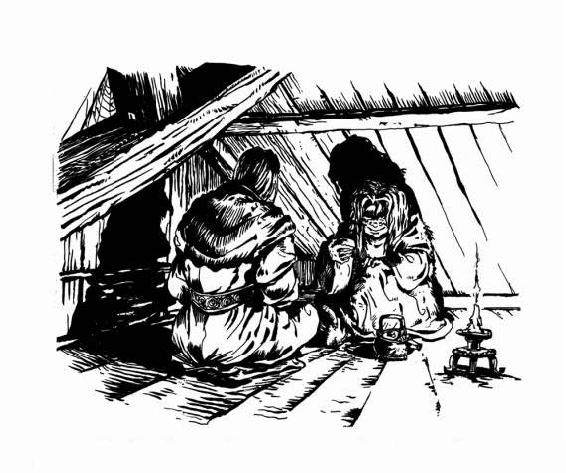
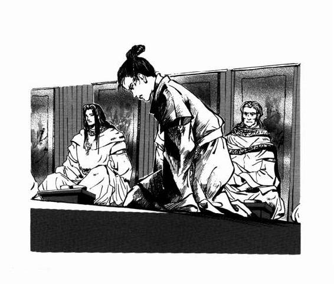
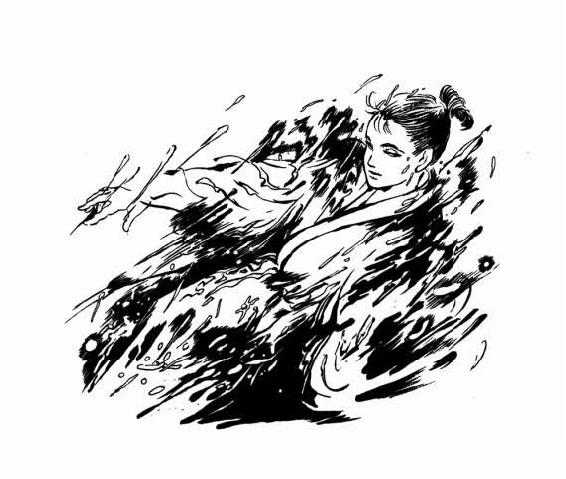
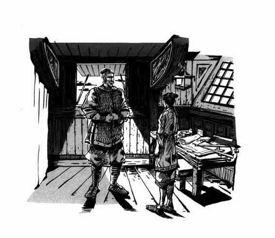
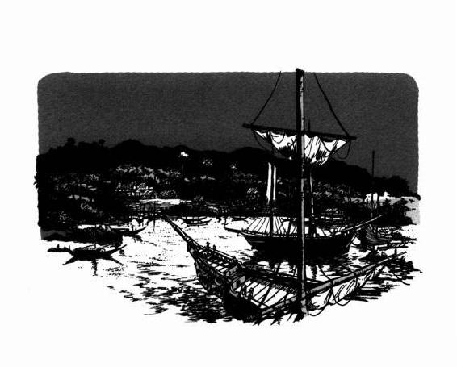
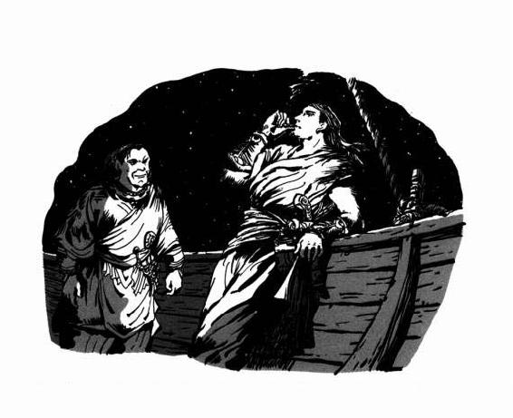
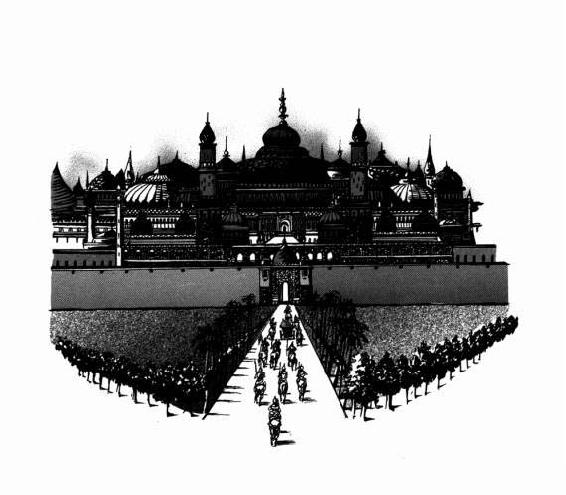

| [上橋菜穂子] 守り人シリーズ07 | |
| 上橋菜穂子 | |
| (2015) | |
|
蒼路の旅人
上橋菜穂子
|

目次
序章 南からの波
第一章 帝と皇太子
１ 聖導師の宿命
２ サンガル王の手紙
３ はじける
第二章 罠への航海
１ 航海
２ 群島の網の目
３ 虜囚たちの夜
４ 虜囚小屋からの逃亡
第三章 チャグムとターク〈鷹〉
１ 出会い
２ 身をぬぐう
３ 異郷の星空
４ 嵐
５ 鷹の爪の下に
６ つかのまの光
第四章 対決
１ タルシュの悍馬
２ 灰色の旅
３ 雨の帝都
４ 毒蜘蛛の館
５ 声なき声に
６ 壁の上の世界
終章 蒼路の旅人
１ 金色の空
２ 月下の蒼路
あとがき
蒼路の旅人
登場人物紹介
◆新ヨゴ皇国
チャグム.....................新ヨゴ皇国の皇太子
二ノ妃........................チャグムの母
シュガ........................星読博士。聖導師見習い。チャグム皇太子の教育係
帝..............................新ヨゴ皇国の帝。チャグムの父。
トゥグム.....................第二皇子。三歳。
ミシュナ.....................三ノ宮の姫。十歳。トゥグムの姉。
聖導師........................新ヨゴ皇国をつかさどる聖職者。星によって天道を知る。
ガカイ........................星夜博士。聖導師見習い。第二皇子の親族。
オズル........................星夜ノ相談役。聖導師見習い。
ルィン........................チャグム皇太子の近習。
ハルスアン・トーサ......海軍大提督。チャグムの母方の祖父。
ラドウ........................陸軍大将軍。三ノ妃の父。
ジン...........................帝の盾。帝の命令によって暗殺も行う〈狩人〉でもある。
ユン...........................帝の盾。帝の命令によって暗殺も行う〈狩人〉でもある。
トルスク・タガル.........海士。
ナロウズ・オル............海士。
トルガル帝..................新ヨゴ皇国の狙。
カイナン・ナナイ.........トルガルに助言した聖導師。
バルサ........................カンバル人の女用心棒。
トロガイ.....................当代一といわれる呪術師。
タンダ........................トロガイの弟子
トーヤ........................『なんでも屋』の主
サヤ...........................トーヤの妻
◆タルシュ帝国
ラウル王子..................皇帝の次男。
ハザール王子...............皇帝の長男。
アクラ・クールズ.........北翼宰相。
ヤトノイ・ラスグ.........呪術師。
◆サンガル王国
サルーナ.....................王女。王の妹、タルサンの姉。
カリーナ.....................王女。王の妹、サルーナの姉。
タルサン.....................サンガル王の弟。チャグムに危機を救われたことがある。
コウイ・オルラン.........サンガル海軍カルシュ諸島域司令官。
アラユタン・ヒュウゴ...謎の男。
ヤトノイ・ソドク.........呪術師。ラスグの弟。密偵。
セナ...........................サンガル海賊船の若き女頭。
おばちゃん..................海賊船のまかない。ラッシャロー出身。
蒼路の旅人 用語集
ヨゴ語
サグ..............................人びとが暮らす世界
ナユグ...........................サグとふれあって存在する、もうひとつの世界。
ヨナ・ロ・ガイ...............〈水の民〉ナユグの生き物。
チョウル........................紙巻き香。香木を乾燥させて細かくくだき、紙にまいて煙をたのしむ。南の大陸のヨコ人は「チョル」と発音する。
アルサム........................〈天道ノ守り札〉星読博士が持つ札
ウガタ・カイム...............〈逆の流れ〉自然の秩序にさからうこと。
ゴバ..............................ヨコ語で「板」の意味。破傷風のことをこう呼ぶ。
チャズ...........................中にラフル（柑橘系の果物）の果汁が入っている、南の大陸のヨコ人がこのむ餅菓子。新ヨコにも、「サズ」という、よくにた餅菓子がある。
サンガル語
オロ..............................サンガル人がまとう雨合羽。
チョッサ........................サンガルの果物。
サイ..............................お茶。
ラッシャロー..................〈海をただよう民〉。
ヤルターシ・コゥ・ラー...〈海の恵みの子〉強運をもって生まれた者で、島民に幸運をもたらすと信じられている。
ツアラ・カシーナ............〈船の魂〉サガン諸島のアマライ島民は、船に幸運をもたらすために、船に乗せているヤルターシ・コゥ・ラーをこう呼ぶ。成長すれば、船頭となる。
海洋用語
タラー・ウチャム............〈島のない海〉ナヨロ半島とサンガル半島からもっとも近いカルシュ諸島までのあいだの、島のない海域をさす。
トゥクマ........................〈冬風〉冬の間、北の大陸から海へむかって吹く風。
シクマ...........................〈夏風〉夏の間、海から北の大陸にむかって吹く風。
ラッカラール..................〈渦嵐〉夏から秋にかけてヤルターシ海で発生する渦状の嵐。シクマ〈夏風〉に乗ってナヨロ半島へやってくる。
タルシュ語
オーラム・ハラ・イー......〈大いなる渇きの地〉タルシュ帝国西南部に広がる砂漠。
カールズ・ノ・ハイ.........〈白い山脈〉タルシュ帝国の南部に連なる大山脈。
トルアーン.....................三百人部隊長。
ハク・ウル.....................上級武官。
ア・タル........................〈光への道〉という意味。めざましい功績のあった者にあたえられる特権の印。
タル・ユタラ..................〈道の終わりまできた者〉という意味。タルシュ帝国で、王族出身ではない者が登りつめられる、最高位を得た印。
枝国..............................タルシュ帝国に支配される属国を意味する。
コスム...........................〈臣民権〉タルシュ帝国の［臣民」の身分。枝国出身の者でも、枝国兵として軍功をあげれば、家族全員がこの権利をあたえられる。
序章 南からの波
天が一面、うす墨をながしたように暗くなった。
帆船の帆がパタパタと風にはためく音が耳につくようになったかと思うと、ふいに、桶をひっくりかえしたような夕立が降りはじめた。
港に船をとめていた船乗りたちも、荷車に荷をうつしていた人足たちも、いきなりの土砂降りにもんくをいいながら、積荷をぬらさぬよう、いそがしく覆いをかけていく。
中型帆船用の船着場にとまっているサンガル船から、少女がひとり桟橋におりてきた。はげしい雨が、彼女がまとっている蝋引きのオロ（サンガル人がまとう雨合羽）をゆらしながら、つたいおちている。
ぬれるのも気にせず、半裸のまま甲板で縄を巻いている男たちに、少女は雨の音にまけないよう大きな声でいった。
「仕事がかたづいたら、みなで飲みにいってもかまわないけど、なにかあったらすぐに出帆できるように、飲みすぎちゃだめだよ。」
船端にいる若者が、笑いながらこたえた。
「わかってまさぁ。」
少女は若者に手をふると、小走りに駆けだした。
ここチュロン港は新ヨゴ皇国でもっとも大きな港で、船の往来でにぎわっている。
サンガル王国がタルシュ帝国と戦をはじめてから、南からの商品の流入は大きくへってしまったが、それでもかなりの数の船荷が、サンガルを経由してやってきていた。重くかさばる荷を大量にはこぶのは、やはり陸路より海路のほうがよいからだ。
船荷は、ほとんどが小分けにされて、荷馬車で陸路を光扇京へとはこばれていく。そういう荷馬車をあつかう馬宿がたちならぶ一角に、酒場が軒をつらねている路地があった。
そのうちの一軒、看板のとめ具が片方はずれ、風にゆすられるたびに看板の角が軒にぶつかっているコウロ酒場は、荷馬車隊を組む商人や護衛士たちがたむろする安酒場だった。店のなかには、安い酒のにおいと、さかんにたかれている炉の煙、潮風のしみこんだ男たちの身体のにおいが、むっとこもっている。
ヨゴ人だけでなく、サンガル人やロタ人も酒を飲んでいて、さまざまな言葉が入りまじり、顔をちかづけて話さなければ、たがいの声がききとれないほどのそうぞうしさだった。
片すみの板壁には、へたくそな人の姿の落書きがあり、酒に酔った男たちが、かわるがわる、その絵を的にして短刀をなげていた。
「おい、おまえはやめとけ！ あぶねぇから！」
仲間がとめるのもきかず、べろべろに酔った男が、ひょいと短刀の刃をもつと、思いっきり的へなげた。短刀は的へむかって飛ぶどころか、大きくそれて柱に柄をぶちあて、はじかれて、回転しながらとんでもない方向へ飛んだ。
「あぶねぇ！」
だれかがさけんだ。短刀は、入り口のそばの席にすわっている男にむかって飛んでいく。
考えごとをしていた男は、すんでのところでけはいを察すると、反射的に自分の短剣をぬき、カチーンッと短刀をはじきあげるや、落ちてきた短刀の柄を左手でつかんだ。
ほおっと感嘆のため息が、男たちのあいだからもれた。
短刀をなげた酔客は、男がふりむくと首をすくめた。
二十七、八くらいだろうか。黒髪を背でひと束にむすんだ、精悍な顔だちの男だった。
男は、ただだまってみつめているだけだったが、周囲の男たちは、なんとなく気おされたようにしずかになってしまった。
男にみつめられて、短刀をなげた酔客は、酔いがさめた顔になった。男が手で短刀をもてあそんでいるのをみながら、カタカタ歯を鳴らしはじめた。
そんな酔客の顔をしばらくみつめていたが、やがて、男は、ふいに興味をうしなったように、短刀を机にトン、と突きたてて、あとは知らん顔で酒を飲みはじめた。
しずかになった酒場に、しばらくのあいだ、屋根をはげしくたたく雨音だけがひびいていた。
ゆっくりとざわめきがもどりはじめたとき、小柄な人影が入り口の板戸をあけてはいってきた。びしょぬれのオロ（雨合羽）を壁の釘にひっかけて、ぬれた顔をつるりとぬぐった手は意外に細く、そばにすわっていた男たちは、はいってきたのが、まだ若い娘であることに気づいて、興味をひかれた顔になった。
十五、六歳ほどの、目鼻立ちのくっきりとした少女だった。サンガル人らしく、顔も腕も日にやけて、ひきしまっている。生き生きとうごく大きな黒い目が、だれかをさがすように、うすくけむった室内をみわたしていた。
「ここだ。」
少女に気づいて手をあげたのが、さっき短刀をはじいた黒髪の男であるのをみると、酒場の男たちは、なにげないふうをよそおいながら、娘にむけていた目をそらした。
少女は、男の食卓にやってくると、低い椅子に腰をおろし、給仕に手をあげて、なれた口調で壺酒を注文して、小銭をはらった。
「夏でもないのに、新ヨゴでこんな夕立はめずらしいね。」
少女は手をこすりあわせた。外の冷たい大気が、少女がまとっているサンガルふうの上衣から、すうっとかおった。
「無事、着いたな。」
男がいうと、少女は当然だという顔つきでこたえた。
「......いわれたとおり、彼らがのっている船の鼻さきを先行してきたよ。彼らの船も、あとすこしで着くよ。」
黒髪の男は、少女の報告にうなずいた。
「入港まで、ここでまつ？」
「ああ。」
給仕が酒壷をもってきて、少女に杯をわたし、酒をついだ。
「あ、ありがとう。」
少女はうれしそうに杯をうけとって、いっきにあおった。ひえきった身体にしみわたる一杯だった。
給仕が去ると、少女はまっすぐに男をみた。
「これで、約束ははたしたよね？」
男はうなずき、帯の袋から小さくたたんだ紙をとりだして、少女にわたした。
「よくやってくれた。」
もらった紙にタルシュ帝国の割印がおされているのをたしかめて、少女の顔が明るくなった。それは、功績によって罪を清算したことを証明する文書だった。
少女の緊張がゆるんだことを感じとったのか、少女の衣の襟から、ちょろっと小さな白ネズミが顔をだした。ピクピクと桃色の鼻をうごかして、りこうそうな黒い目で少女をみあげている。
少女は笑って、皿から油で炒ったタズ豆をひとつつまみ、ネズミにあたえた。
「おまえは寒くなかったでしょう。あたしの懐にいたんだから。」
おいしそうに豆をかじっていたネズミが、ふいに顔をぴくっとあげ、するりと少女の上衣のなかに消えた。
ゴロゴロ......と雷鳴がきこえたかと思うと、いきなりドーン、と、すさまじい落雷の音が酒場をゆるがした。
酒をあおっていた男たちは首をすくめ、多くが、さっと右手のてのひらを天にむけるしぐさをした。ヨゴ人にとって雷は、〈天ノ神〉がなげてくる光だ。神の怒りにふれた者は、雷に焼かれるといいつたえられている。武器をもつ手をひらいて天にむけるしぐさは神への服従をしめし、罰を当てないでくれ、とたのむしぐさだった。
男の目に、ふっと笑みがうかぶのをみて、少女が、いぶかしげにたずねた。
「なにがおもしろいの？」
「......いや。新ヨゴの連中も、おなじしぐさをするんだなと思っただけだ。」
男はヨゴ人だが、この北の大陸の、新ヨゴ皇国の出身ではない。彼の故郷は、ヤルターシ海の彼方、南の大陸のヨゴ皇国──タルシュ帝国に征服され、いまはヨゴ枝国と名をかえた国だった。
ここ北の大陸にある新ヨゴ皇国は、はるかむかしに、カイナン・ナナイという星読博士にみちびかれて南の大陸のヨゴ皇国をあとにし、新天地をもとめて海をわたったヨゴ人たちによってきずかれた新しい国だ。
このナヨロ半島に上陸したヨゴ人は、半島にむかしから住んでいたヤクーという黒い肌をした人びとと血をまじえていったので、褐色の肌をしている者が多い。言葉も、長い年月のうちに、南のヨゴ語とはすこしちがう響きをもつ言葉へとかわっていた。
皇族や貴族、武人階級の者たちはヨゴ人らしい風貌をたもっているが、農民や漁民、商人たちは、この地になじみ、南のヨゴ人とはずいぶんちがう雰囲気をもつ人びとにかわっていたのである。
二百年以上ものあいだ、広大な海にへだてられて交流もなかったふたつの皇国の民が、それでも、こういうときおなじしぐさで神にゆるしをこう......。それをみたとき、男は、顔さえ知らなかった遠い親戚にふいにであったような、きみょうな感じをおぼえたのだ。
「......こんな季節に雷が鳴るなんて、やっぱり今年は変な年だぜ。」
酔客たちは、身をよせあうようにして、ぼそぼそと話している。このごろ、この国のあちこちでさかんにささやかれるようになった、なにか大きな天変地異がおきるのではないかという噂話だった。
まだ雪がふかい真冬の季節に青霧山脈の谷間一面に花が咲いたという話や、夏に産卵するはずのシホロ（川魚）が、春浅いうちに大量に産卵したという話。春さきから異常なほど長雨がつづいていること。──ナヨロ半島の各地からつたわってくる、こういう異変の話がよりあつまって、人びとを、なんとなく不安にさせているのだ。
うしろの席にいる男のどら声がきこえてきた。
「なあに、心配するこたぁ、ねぇやな。天ノ神の御子がまもってくださる。ここは、天ノ神さまにまもられた国だ。
長雨がつづこうが、冬に花が咲こうが、ぜったい、大事にはならねぇ。前の大日照りのときのように、チャグム皇太子殿下が、かならず天地をなだめて、すくってくださるさ。」
それをきいた瞬間、男の目に、獲物を視界にとらえた鷹のような、凄みのあるするどい光がうかんだが、それは一瞬のことで、少女はまったく気づかなかった。
コウロ酒場で、少女と酒をくみかわしているこの男は、タルシュ皇帝の次男、第二王子ラウルの旗下のターク〈鷹〉（密偵）だった。
南の大陸の諸国をつぎつぎに侵略し、のみこんできた、強大なタルシュ帝国。
そのタルシュ帝国において、北の大陸の侵略に熱心なのは、ふたりの王子たちだった。王子たちは、それぞれヨゴ人をつかい、新ヨゴ皇国に潜入させて攻略の方法をさぐり、侵略の道筋をつけようと、しのぎをけずっていた。
皇帝は、北の大陸を攻める足場を最初につかんだ王子に、侵略の優先権をあたえると約束していたからである。
ラウル王子は、まだ若いが非凡なこの男の器量をみとめて、部隊をつくり部下をうごかす権限をあたえた。男は、サンガル人やロタ人、そしてヨゴ人の部下をみずからの目でえらびだし、タルシュ帝国領の各地と、サンガル王国、ロタ王国、そして、この新ヨゴ皇国に散らせて、すでに独自の情報網をきずいていた。
部下の数はけっして多くない。しかし彼は、武人階級の者だけでなく、下街育ちの平民出身の者でも、女でも老人でも、とにかく機知に富んだ者をえらびだして、自分で判断する自由をあたえた。これが功を奏し、彼の部隊は、いちいち上司の判断をあおぐほかの部隊よりはるかに機敏にうごき、多くの情報をあつめていた。
大きな変化のうねりが、ひそやかに、しかし確実に、北の大陸にせまっていた。
北の大陸に攻めのぼる障害となってきた海の王国サンガルが、圧倒的なタルシュ帝国の軍事力をまのあたりにして、かわりはじめたからだ。
その変化の第一波──サンガル王から新ヨゴ皇国の帝への勅使は、すでに光扇京の帝のもとに着いたころだ。この波をしかけたのは、男とは関係のない、別の組織である。
男が、この港町でまっているのは、その第一波にかくれてそっとはなたれた、もうひとつの波──サンガル王国の王女サルーナの密使だった。
おそらくチャグム皇太子にあてた密書をたずさえている、その密使たちをとらえるために、男は、目の前にいる少女をつかって密使ののった船の動きをさぐらせていたのである。
少女は、彼女ののる海賊船の船乗りたちから、ツアラ・カシーナ〈船の魂〉とよばれている、いわば船頭のような存在だった。彼女は、小まわりのきく海賊船で、意図をさとられぬように複雑な航路をたどる密使の船のあとを追い、島に寄港するたびに、よくならした鷹をつかって男と手紙のやりとりをしていた。そして、最後に密使の船がえらんだ航路から、この港をめざしていることをわりだすと、先行して、男とこの酒場でおちあったのである。
夕立の音も雷鳴も、いつのまにかきこえなくなっていた。
男はなれた手つきで、香木をくだいたものをうすい紙で巻いてチョル（紙巻き香）をつくり、口にくわえて、ろうそくの火に先をつけた。ふわっと、香ばしい煙が、あたりにひろがった。
男はしずかにチョルをすいながら、酒場のさわがしさではなく、別のなにかに耳をかたむけているようにうつむいていたが、やがて顔をあげて少女をみた。
「これから、どうやってくらしていくつもりだ？」
少女が、ぎゅっと唇をむすんだ。男から目をそらし、少女はぽつんとこたえた。
「やれることをやってくしかないさ。」
少女の故郷は、サンガル王国のなかでももっとも南の果ての、サガン諸島だった。タルシュのサンガル侵攻がはじまったとき、最初に犠牲になったのが、この海域の人びとだった。
サガン諸島の人びとは、もちろん征服者であるタルシュ人をにくんでいたが、それ以上に、自分たちをたすけようともせず、捨て石のようにあつかったサンガル王家をうらんでいた。
タルシュ帝国が支配する海域では、海賊行為はきびしく禁じられている。禁をやぶれば、過酷な処罰の対象となる。
先祖代々海賊稼業で生きてきたサガン諸島の人びとは、生きるために、暮らしを大きくかえねばならなかった。それまでもタルシュ帝国と交易をしてきたような大海賊たちは、高額の交易許可証を買って、すばやく正規の貿易商へと転身していったが、小さな船で、海賊稼業と漁を半々にやりながら暮らしをたててきたような海賊たちには、交易許可証を買うような余裕はなく、処罰される危険を覚悟で、海賊稼業をつづけるしかなかった。
少女の船も、ごく小さなもので、もちろん交易許可証を買う余裕などなかった。生きるために、彼女と仲間たちは法の目をくぐりぬけて海賊行為をつづけ......そして、つかまったのだった。
赦免状をたたみながら、少女はため息をついた。
「タルシュの連中は強欲だよ。なんにでも許可証がいるっていいやがって、高い金をとるんだ。あたしらは、陸の仕事なんぞできないし、漁に専念しようと思ったって、領域漁業権とやらを買えっていうんだろ？そんな金がどこにあるってんだ。」
男は、だまって少女の愚痴をきいていたが、やがて口をひらいた。
「いちばんほしいのは、どの権利だ？」
少女は、まじまじと男をみつめた。男の思惑をおしはかるように、しばらくだまっていたが、やがて、つぶやいた。
「そりゃ、やっぱり、交易許可証だよ。」
男は、うなずいた。
「さきの話で、まだ、やることになるかどうかわからんが、ひとつ、おまえにたのむ仕事ができるかもしれない。交易許可証を買って、釣りがくるくらいの金をかせぐ気はないか。」
少女の目がかがやいた。
「......あるよ、もちろん。」
男は、少女をみつめた。
「それだけの金をかせげる話だ。どういうたぐいの話かは、想像がつくだろう。仕事のくわしい内容を、いま話すわけにはいかないが、危険をともなうかもしれん。それでもやるかどうか、船にもどって、仲間と話しあってから、正式に承諾してくれればいい。」
少女は片方の眉をひょいっとあげて、笑顔になった。
「そうさせてもらうよ。でも、仲間たちは、あたしがいいと感じた話に、もんくなんぞつけないよ。」
そういってから、少女はふっと真顔になった。
「この話は、れいの船の男たちと、かかわりがあること？」
男はだまってほほえんでいた。
少女の目に、不安の影がゆれた。
「......れいの船の男たち、この港に着いたら、どうなるの？」
しばらく、男は少女をみつめていたが、やがて、しずかにいった。
「それは、まだわからない。──おれの仕事は、まず、知ることだ。知ったことを、どうつかうかは、そのあと、判断する。」
獣がうなっているような音がきこえてきた。海鳴りだろうか。それとも、遠くなった雷鳴だろうか。
やがて、夜のとばりがおりはじめたころ、鐘の音がひびきはじめた。この日最後の船が港に着いたことを知らせる、高く澄んだ鐘の音だった。それをきくや、男は、さっと立ちあがった。
夕立がぬぐっていった天に無数の星がかがやくこの夜、サンガル王国の王女、サルーナからの密書をたずさえた密使が、新ヨゴ皇国の土を踏んだ。
やがて、チャグム皇太子と北の大陸の運命を大きくかえていく最初の波が、ナヨロ半島にうちよせたのだった。
第一章 帝と皇太子
１ 聖導師の宿命
ろうそくの炎がゆれるたびに、ものの影がゆれる。
まだ、夜が明けたばかりなので、『なんでも屋』という店の二階につくられた隠し部屋は、夜とかわらぬ暗さだった。そのうす暗いあかりのもとで、品のよい青年とみにくい老婆がむきあっていた。
老婆は、行儀わるく立て膝をして壁によりかかり、手酌でさかんに酒をあおっている。
「......つかれきった顔をしとるなぁ、星読みさんや。」
からかうように老婆にいわれて、その青年、星読博士のシュガは苦笑をうかべた。
「トロガイ師は、いつもお元気ですな。」
老婆が笑いだした。トロガイが笑うと、目がしわにかくれて消えてしまう。
この、当代随一と噂される呪術師は、そろそろ七十五をすぎるはずだが、はじめてあったときから、まるでかわっていないようにみえる。
「わしは、自分の主だからな。あんたのように、苦労がないぶん、長生きできる。」
シュガは苦笑をうかべたまま、うなずいた。
彼はまだ二十五だったが、チャグム皇太子の教育係として、また、この国の政をうごかしている聖導師の懐刀として、日々、重い荷をせおっていた。
つかれのせいで、くすんでみえる青年の顔をながめて、トロガイはため息をついた。
「なにが、そんなに不安なんだい。......異変がおきるんじゃないかっていう、れいの噂のことかね。」
シュガはうなずいた。
「天にもきみょうな相があらわれていますから。──なにがおきようとしているのか、一刻もはやくみきわめねばなりません。」
トロガイは鼻を鳴らした。
「あせりすぎだぁな、星読みさん。そんなにあせるこたぁないと思うけどね。あんたが不安に思っておるきみょうな相は、たぶん、ナユグの季節の移り変わりのせいだろうよ。」
「ナユグの季節......？」
「そう。あっちの季節がかわったんで、それにつられて、こっちにも、ちょっとばかり変化がおきているんだろうよ。タンダがいってたよ。お隣のロタでも、ナユグが雪解けをむかえたせいで、ずいぶんとたいへんな異変がおきたそうな。」
シュガがうなずいた。その話はつたえきいている。
「つまり、ナユグが春をむかえたせいで、厳冬の青霧山脈の谷間に花が咲いたり、きみょうなことがおきているとおっしゃるのですね？」
トロガイは肩をすくめ、木椀に酒をどぼどぼとついだ。
「サグとナユグには、ところどころで結び目のようなもんがあるらしい。そういう場所だったんだろうよ、その谷間はさ。」
いいながら、まず木椀の縁についた酒をなめて、それから、うまそうに酒をすする。酒を飲んでいるときのトロガイの顔は、じつに幸せそうにみえる。
「ヤクーの言い伝えでは、ナユグの春は、長いんだとさ。いったん春がおとずれれば、こっちの世界で百年すぎたって、むこうは春のままだそうだ。」
上目づかいにシュガをみて、トロガイはにやっと笑った。
「あせりすぎだっていったのは、そういうことさ。」
シュガは苦笑をうかべた。
「......あせらぬわけには、いかないのですよ。国の事情は、ナユグのようにのんびりしているわけではないので。」
その目には、ふかい不安の色があった。
「わたしが心から不安なのは、チャグム皇太子殿下のことなのです。」
「なんでだね。チャグム坊が、どうかしたかね。」
トロガイの言い方に、深刻な話をしようと口をひらきかけていたシュガは、思わず顔をほころばせてしまった。
皇太子殿下がこんなふうによばれるのをきくたびに、心があたたかくなる。トロガイはチャグムを皇太子としてではなく、ひとりの少年として身内のように思っている。
シュガもチャグム皇太子を心からたいせつに思っていた。だが、彼は立場上、トロガイのように気楽に〈皇太子〉という身分をはずすわけにはいかない。──むしろ、つねに、チャグムが皇太子であることをわすれぬように、自分をいさめなければならなかった。
「いえ、殿下ご自身はおかわりなく、すこやかでいらっしゃいます。ただ、異変をおそれる民たちが、帝ではなく、殿下がこの国をおすくいくださると噂していることが、不安でならないのです。」
トロガイの顔に、シュガがいいたいことを理解した色がひろがった。
「なるほどね。父君がチャグム坊に嫉妬したら......こいつは、たしかにこわい話だね。」
シュガはうなずいた。
「いま、この国はさまざまな不安をかかえています。異変のことだけでなく、タルシュ帝国の脅威もある。こういうとき、帝が、チャグム殿下をたたえる民たちの声をどうお考えになるか、わたしは心配でならないのです。」
トロガイにうちあけるわけにはいかなかったが、シュガはこのごろ、チャグム皇太子が暗殺されることを真剣におそれるようになっていた。
タルシュ帝国に対抗して国をかためるために、分裂の芽をつむというりっぱな名目が、いま、帝の目の前にぶちさがっている。なにか小さなきっかけでも、帝を、息子の暗殺へとうごかしかねない。......それほどに、帝は、息子をうとんじているのだった。
かつて自分が暗殺を命じたことを、チャグム皇太子が知っているということが、けっしてぬくことのできぬトゲとなって、この父子の間に刺さっていた。記憶は時とともにうすれるものだが、この記憶だけはうすれることなく、むしろ暗い疑惑をそだてる膿んだ傷となってしまっている。
それでも、チャグム皇太子が、らくにおさえつけておけるような少年であったなら、帝はこれほど息子をきらわなかっただろう。
だが、チャグム皇太子は火の玉のようなはげしい気性を秘めた、才気あふれる若者に成長してしまった。今年の新年に十五になり、〈成人ノ儀〉をすませたこの若者は、宮廷の若い大臣や将軍たちの心をひきつけ、いつしか中堅の大臣たちのなかにさえ、彼が帝になる日をまちのぞむ者があらわれはじめていたのである。
それは、一身に人心をあつめなくては気がすまぬ帝にとって腹だたしいことだったし、帝を神とうやまう忠臣たちにとっても、ゆるせぬことだった。
シュガには彼らの気もちもよくわかった。
チャグム皇太子をみていると、いつか、大きな変化をおこすのではないかという気がするのだ。いまのままの宮廷をのぞむ者たちが、彼をおそれるのはあたりまえだろう。
だが、いまの宮廷のあり方では、タルシュ帝国が攻めてきたら、たいへんなことになると不安に思っている人びとは、チャグム皇太子に希望をみている。──それがまた、帝にはゆるせないのだった。
「もし、第二皇子がおうまれでなかったら......。」
シュガはつぶやいた。
「帝派の老臣たちも、たったひとりのお世継ぎであるチャグム皇太子をうけいれざるをえないのですがね。」
トロガイは、ぽりぽりと顎をかいた。
「チャグムが死んでも、かわりのお世継ぎがいるからな。」
あからさまなトロガイの言葉に、シュガはにがい笑いをうかべた。
第二皇子は今年三歳。幼子にとってもっとも危険な三ノ年を無事にすごして、すくすくと成長している。三ノ宮の姫も十歳になり、数年後には婿をとることができる。
（第二皇子のうしろ盾が、また難物なのだ......。）
シュガは心のなかで、にがにがしくつぶやいた。
ふたりの母である三ノ妃の父ラドウは、陸軍をつかさどる大将軍であり、帝の信頼もあつい。このラドウ大将軍が孫である第二皇子を溺愛し、チャグム皇太子を毛嫌いしていることは、だれもが知っている事実だった。
「宮には、だれか、チャグムをたすけてくれるうしろ盾はいないのかい？」
まるでシュガの心のなかをみすかしたように、トロガイがいった。
「殿下の母君のお父上トーサ閣下がおられます。海軍をつかさどる大提督ですが、ものしずかな方です。あの方は、あからさまにチャグム皇太子を推すようなことはなさいませんが、殿下が無事に帝になられるよう、要所、要所でささえておられます。」
「そりゃ、ありがたいことじゃないか。坊には、そういう味方が必要だよ。」
いいながら、トロガイはシュガの顔にうかんでいる表情に気づいて、首をかしげた。
「そのトーサ閣下とやらに、なにかまずいことがあるのかい？」
シュガは、あいまいにうなずいた。
「閣下ご自身が問題なのではないのですが、閣下は人望がありますので、下に人があつまってくるのですよ。」
「ははぁ。チャグムのうしろ盾にそういう男がいて、人があつまってくると、帝はうれしくはないわな。」
身分の外にいる呪術師らしい言い方だったが、なれていても、帝にたいしてこういうもの言いをされると、シュガは思わず顔をしかめてしまう。
あんがい、トロガイはそれがおもしろくてやっているのかもしれない。いまも、いってから、にやにや笑いをうかべてこちらをみている。だが、シュガは笑える気分ではなかった。
派閥というものは、いったん対立をはじめると、ひとりでに、いがみあいが激化していくものだ。チャグム皇太子をめぐる〈扇ノ上〉（宮中）の緊張は日に日にたかまっている。
（それに、殿下は、まだお若い。）
おどろくほど鋭敏でかしこい方だが、それでもまだ、未熟な、あやういものを残している。
（あたりまえだ。まだ十五歳なのだから。）
つねに心してまもっていなければ、彼の命がうばわれる日がちかくおとずれるかもしれない......。

暗い表情でだまりこんでしまったシュガの膝を、トロガイは足をのばして、ちょん、と、けった。
「ほれほれ。そんな顔をするんじゃないよ。切れ者のシュガさんや。心配なら、あんたが坊をしっかりまもってやんな。」
シュガは、こわばった笑みをうかべた。
（おまもりできればよいのだが......。）
いまは、シュガ自身、びみょうな立場にいるのだ。
高齢のうえに、からだに不安を感じはじめた聖導師は、万がいち、自分がたおれたときのために、最近、三人の聖導師見習いをたてた。
ひとりはシュガ。
もうひとりは、ガカイ──この男は第二皇子の親族にあたる。野心をかくさず、シュガを目の敵にしてきた男だ。聖導師の器ではないが、あやつりやすいので、帝派が聖導師にとのぞんでいる男である。
そして、三人目は、もう五十なかばをすぎたオズルという、星読ノ相談役だった。
正論しかみとめない頭のかたいオズルを、聖導師が見習いにえらんだのは、シュガとガカイの間におくのに都合がよい男だったからだ。
それをシュガに告げたときの聖導師のまなざしは、みじんの甘えもゆるさぬ、冷たくきびしいものだった。
──三人のなかで、そなたはもっとも若く、しかもチャグム皇太子とのきずながふかい者として、帝からうとんじられている。それをこえられるか、シュガ。
聖導師は帝のかたわらにあるもの。帝をうごかして、はじめて聖導師は国をうごかせるのだ。
......皇太子は、帝にならぬかぎり、二のつぎぞ......。
国をうごかす聖導師となるために、チャグム皇太子をきりすてる意思を帝にみせよ、と、聖導師はいったのだ。
たしかに、そうしないかぎり、シュガはなにもできない。皇太子のためにうごいていると帝に思われてしまえば、シュガの意見はなにひとつとおらず、うちすてられるだけだろう。
だが、シュガは、英明であるがゆえに父からきらわれ、政のために人とのきずなをたちきられていくチャグム皇太子が、あわれでならなかった。
じっと自分をみつめているトロガイに、シュガはうなずいてみせた。
「......おっしゃるとおり、わたしが弱気になっていてはいけませんね。心します。」
そういいながらも、シュガの顔から影がきえていないのを、トロガイは、かすかに顔をくもらせてみつめていた。
ふたりが階下におりると、この店の主人であるトーヤが、お茶をいれてまっていた。
「うわっ！ トロガイ師、すごいにおいですね。そんなに飲んでだいじょうぶですか？」
トロガイは鼻で笑って、茶をすすった。トーヤはシュガにも茶碗をわたすと、棚からなにかの包みをとりだして、シュガにさしだした。
「シュガさん、三人ほどが店によりました。これが彼らの文です。」
「おお、ありがとう。」
シュガはその包みをうけとると、懐から銀貨を数枚とりだしてトーヤに手わたした。トーヤはうれしそうにそれをおしいただき、ひたいにつけて、シュガに礼をした。
「これからも、よろしく。......トロガイ師、ではまた。」
シュガはふたりに一礼すると、戸をあけ、あたりをさぐってから、まだうす暗く、小雨の降りつづく都の路地へ消えていった。
にこにこしながら金をしまっているトーヤに、トロガイは低い声でいった。
「トーヤ、あんたまだ、シュガの手伝いをしてるのかい。」
トーヤはふりかえって、うなずいた。
「へえ。てつだわせていただいてます。」
トロガイは顔をしかめた。
シュガは、タルシュ帝国の侵攻がせまっていると考えている。きなくさいにおいが、どんどんこの国へせまっていることはたしかだった。
敵の爪にかかるまえに、すこしでも情報をあつめようと、シュガが、交易商人たちからタルシュの情報を買っていることを、トロガイは知っていた。
その商人たちが情報をおいていく場としてこの店をつかっているのを知ったとき、トロガイは不安を感じた。一度や二度ならまだしも、長いあいだ、そういう場としてつかわれていれば、この店は噂のたねになっていくだろう。
シュガは、タルシュの密偵が、この国に、かなりの人数はいりこんでいてもおかしくないと、よくいっている。そういう密偵たちに目をつけられでもしたら......。
「......あんた、」
いいかけたトロガイに、トーヤは、さっと頭をさげた。
「ありがとうございます。おれみたいなもののことを、気にかけてくださって、ほんとに。危険は、承知のうえです。女房がみごもって金がいるし、きなくさい噂を耳にしているとね、かせげるときに、すこしでも金をにぎっておきたいんですよ。」
親もなく、おさないころから、下街の橋の下でくらしてきたこの若者の顔を、トロガイはしみじみとみつめ、それから首をゆっくりとふった。
「くれぐれも気をつけるんだよ。──あぶないと思ったら、逃げな。あんたとサヤなら、まるはだかになったって生きのびられるだろう。」
うなずいて、トーヤは、にやっと笑った。
ひと足はやく店をでたシュガは、小雨の降る夜明けの街路を足ばやに歩いていた。
チャグム皇太子の面影がまぶたのうらにうかび、その声が耳の奥できこえる。
──ゆるせよ、シュガ。このあやうさゆえに、わたしはいつか、そなたをも破滅へとひきずってしまうかもしれない。──そうなりそうだと感じたら、いつでも手をはなせ。
わたしは、けっしてうらみはしない。そんなときがきたら、むしろ、そなたは生きのびて、わたしとは別の方法で国をよくしていってもらいたい。
シュガはくるしげに顔をゆがめた。
（......あの方は、こういう日がくることを、わたしよりずっとさきに感じとっておられた。）
雨の音だけがひびく人けのない街を、シュガはうつむいて歩いていった。
２ サンガル王の手紙
ひさしぶりの日の光が気もちよくて、チャグムは目をほそめ、顔に光をうけていた。
〈山ノ離宮〉にいるときだけは、側近たちもチャグムの気もちをくんで、ひとりにしてくれるのがありがたかった。
といっても、自由に外にでられるわけではない。こうして庭園の岩の上にすわるぐらいがせいぜいだ。この岩のてっぺんにすわると、塀越しに湖がみえる。ここは、おさないころからお気にいりの場所だった。
昨日まで降りつづいていた雨のせいで岩についた苔がしめり、地面もぬかるんでいるが、日の光があたためていた岩の上は、心地よくかわいていた。
冬枯れの山と、鏡のように澄んだ湖面に、ときおり鳥がわたっていく。
湖をみていると、いくつもの思い出が胸にわきおこってくる。あの湖の底にゆらめいていたさかさの宮と、人を夢へとさそう花......。
夢に逃げていた一ノ妃と、母の姿とが、チャグムの心のなかで、かさなった。
母は、心をやすめるために、〈山ノ離宮〉をおとずれることが多くなった。
〈扇ノ上〉にいると、親族のだれかれがおとずれては、三ノ妃がああいった、こういった、第二皇子をもりたてるために、チャグム皇太子の悪口をいっている......というような話をする。母は、チャグムのために、そういう話にひとつひとつ耳をかたむけ、いっしょうけんめい情勢を知ろうとつとめてくれているようだが、もともと人の悪口が嫌いな母にとっては、たえがたいことも多いのだろう。
（......くだらない。）
チャグムは、ときおり大声でさけびたくなる。刀をぬきはなって、自分のまわりによどんでいる、にごったものをたたききることができたら、どんなにすっきりするだろう......！
民がゆたかで、うつくしいものをつくり、売り買いし......あらそうことなく、暮らしをつつがなくおくれるようにする。政など、それだけでいいはずだ。
それなのに、なぜ人は、よりあつまると、足をひっぱりあい、他人を踏みつけて、すこしでも上にのぼらないと気がすまないのだろう？
母は、日に日にやつれていく。......病んであたりまえだ。ひとり息子が、いつ暗殺されるかわからない恐怖をいだきながら、毎日を生きているのだから。
（皇太子なんて位、ゆずれるものなら、いつでも第二皇子にゆずってやるのに。）
ほんとうに、そうできれば、どれほどすっきりするだろう。
だが、帝は神の血筋。長男が生きているのに、次男が帝位につくようなことは、ウガタ・カイム〈逆の流れ〉──自然な流れに逆行することであり、天地の運気をかえてしまうと思われている。だから、皇太子は事故死か病死する以外、その位からのがれる道はないのだ。
かたちのよい眉をぎゅっとゆがめて、チャグムは岩にこぶしをたたきつけた。
そのとき、かすかな足音がきこえた。チャグムは、はっと腰の短剣に手をやって、音のしたほうをふりかえった。庭木の間に、ちらっと朱色の衣がみえた。チャグムは眉をあげ、短剣から手をはなした。
朱色に金糸でこまかい刺繍をほどこした衣をまとった少女が、庭木の枝をかきわけて姿をあらわした。ふつうなら侍女たちがそっともちあげているべき衣の裾を、自分でもちあげて、よろよろと歩いている。少女は岩の上にすわっているチャグムをみつけると、うれしそうに、明るい声でささやいた。
「......兄上さま。」
「ミシュナ、そなた、またぬけだしてきたのか。」
チャグムがあきれ声でいうと、ミシュナ──三ノ宮の姫は、大きく口をあけたまま、顔をくしゃくしゃにして笑った。
母の侍女たちが、はしたない笑い方だと、さかんに陰口のたねにしているミシュナの笑顔だが、チャグムは、このあけっぴろげの笑顔をみるたびに、つい、いっしょに笑ってしまう。
ずっとむかし、前歯がぬけたままの口をあけて笑っては、侍女たちに「口もとをおかくしください！」としかられていたのを思いだす。
皇族の間では、兄弟姉妹が情をかよわせることなど、まずありえない。母がちがう兄弟姉妹たちは、つねに帝位をあらそう可能性のある敵だからだ。
それでも、チャグムはこの妹にはあたたかい愛情を感じていた。ミシュナもまたチャグムが大好きで、あえる機会をみつけるや、こうして侍女たちの目をぬすんでやってくる。
「気をつけよ。裾をよごすと、侍女たちにしかられるぞ。」
ミシュナはうなずいて、ずりおちそうになっている裾をひきずりあげた。
「兄上さま、そこから、湖がみえますか？」
「みえるぞ。......みたいか？」
いうや、チャグムはするっと地面におりたって、ミシュナをかかえあげ、岩の上にすわらせてやった。
「みえるだろう？」
「はい。」
はずんだ声でこたえて、ミシュナはにこにことチャグムをみた。
三ノ妃の一行は、さきほど〈山ノ離宮〉へ着いたばかりのはずだ。ミシュナは、到着するやいなや、ここへやってきたらしい。
「それにしても、いったい、どうやってぬけだしてきたのだ？」
チャグムが問うと、ミシュナはささやいた。
「トゥグム殿下が、かんしゃくをおこして、また大騒ぎをはじめたの。」
三つになったばかりの第二皇子トゥグムを、姉であるミシュナは、いつも「殿下」という敬称をつけてよぶ。そうせよと母親にいわれているのだろう。
「みなが、そちらに気をとられていたから、そっとぬけだしたの。兄上さまが、いらしているってきいていたから、きっとこちらだろうと思って。」
チャグムは苦笑した。いまごろ侍女たちは、姿を消した姫君をさがして、あわてふためいているだろう。彼女らにつれもどされるまで、ほんのわずかな時間しかないとわかっていても、自分をさがしにきてくれた妹の思いがうれしかった。
「兄上さま。」
ふいに真顔になって、ミシュナは小声でいった。この姫はめったに大きな声をださない。むじゃきで明るい姫だが、人にきかれることを気づかう知恵もある少女だった。
「いそいで、宮へお帰りになったほうがいいわ。」
チャグムはおどろいて妹をみた。
「なぜだ？」
「昨日の夜、〈扇ノ上〉にサンガル王の使者たちが到着したの。ちょうど、お祖父さまが、母上さまをたずねてきておられて、そこに使いの者がきたの。お祖父さまが、叔父さまたちと話しているのがきこえたわ。兄上さまが〈山ノ離宮〉におられるときに、使者がやってきたのは、都合がよかったと笑っていた......。」
チャグムは、すっと表情をひきしめた。
チャグムのもとにも、いずれ正式な使者がくるだろう。成人ノ儀を終えたチャグムには、皇太子として、国政にかかわる評定（話し合い）にくわわる資格があるからだ。......だが、使者がよびにきたころには、すでに重大な決定はなされてしまっているということもありえた。急を要する評定であると帝が考えれば、皇太子がいなくともはじめることができるからだ。
「ありがとう、ミシュナ。」
チャグムは、妹を抱きおろした。妹の衣からは、重くるしいシャラ木の香のにおいがした。このやさしい、おさない少女にはにあわない香りだった。この子には、きっと野の花の香りがにあう。こんな重い衣をまとわせず、思いっきり野を走る幸せをあじわあせてやりたい......と、チャグムは思った。
ミシュナとわかれ、足ばやに庭園をぬけて母の居室にいくと、母は、手にしていた絵巻物を膝において、チャグムをみあげた。チャグムをみるたびに、母の目には、あたたかな光がやどる。
「なにごとですか。」
しずかに問うた母に、チャグムは、小声で事情をはなした。
母の顔が、かすかにくもった。
「そう。......でも、くれぐれも、人とあらそわぬように。あなたは、短気なところがおありだから、母は、それだけが心配です。」
（母上は、心配のしすぎだ。）
チャグムは、心のなかでため息をついたが、顔にはださなかった。
「はい、母上。......それでは、おいとまいたします。どうぞ、御身をゆっくりとやすめてください。」
立ちあがったチャグムは、もうひとこと、早口にささやいた。
「わたしは、だいじょうぶです。」
白い母の顔に、ゆっくりとほほえみがうかんだのをみて、すこし気もちが明るくなった。
成人したときに身に帯びることをゆるされた長剣をさげ、チャグムは母に目礼すると、廊下に足を踏みだした。
二ノ妃は、夫である帝よりも背が高くなった息子の、すらりとした......けれど、まだどこか少年らしいきゃしゃな感じを残しているうしろ姿を、複雑な思いでみおくっていた。
チャグムは牛車をしたてて、ごくふつうの帰還をよそおい、ゆっくりと都へもどった。
〈扇ノ上〉に着いたころには日はとっぷりと暮れおち、すでに評定ははじまっていることをでむかえた侍従に告げられたが、さして気にしていなかった。
自分がおくれることをよろこぶような、くだらない連中には腹が立ったが、正直なところ、チャグムは、評定に熱心にかかわりたいという情熱をもてずにいた。
チャグムの到着を知らせる横笛の音がなりひびくと、広間にあつまってさかんに議論をかわしていた人びとが、はっと口をとざした。
大きな扉がおしあけられ、チャグムは広間に足を踏みいれた。
帝は、二段高い玉座の間にしつらえられた螺鈿細工をほどこした椅子に腰をおろしている。広間の右側と左側には椅子がずらりとならべられ、聖導師をはじめ、大将軍や副将軍たちと大臣たちからなる〈評定衆〉がひかえていた。評定衆はすべて、帝の親族と星読博士であったから、帝は御簾をたらすことなく、顔をみせていた。
評定衆は、チャグムがはいっていくと、いっせいにふかく頭をさげた。
広間にはいってまっさきに目についたのは、中央の床にひろげられているナヨロ半島とサンガル王国の地図だった。
その地図のわきにしかれている敷き布を踏んで、チャグムは玉座の間まで歩いていった。そして、玉座の間より一段低い皇子の壇に立つと、父に頭をさげた。
「評定の途中にまいりました失礼をおゆるしください。ただいま〈山ノ離宮〉より帰参いたしました。」
帝はうなずいた。
「席につくがよい。」
チャグムは席につくと、広間をみわたした。評定衆たちが顔をあげて、こちらをみている。
いつもなら、目をあわせると、かすかに笑みをみせてくれるシュガが、今日は、きびしい顔をしているのが気になった。
聖導師のわきにシュガがいるのは当然として、ガカイや、みたことのない年寄りの星読博士がいるのも気にかかったが、おくれてきた身で、たずねるわけにもいかない。
帝が、かすかにいらだちをふくんだ声でいった。
「書記、サンガル王の親書をいま一度読みあげよ。」
書記が、ふかく一礼して立ちあがり、巻物をひろげ、はっきりとした声で読みあげた。
サンガル王から帝へあてた親書であるという、その文書の内容をきくうちに、チャグムは胸をしめつけられるような不安を感じはじめた。......それは、たいへんな内容であった。
サンガルの主力海軍が、タルシュ帝国の圧倒的な軍事力の前に苦戦をしいられていること。タルシュ軍におされて、戦線がしだいに北へとむかいつつあること。すでに、ラス諸島あたりまで、タルシュ軍の支配下にはいってしまったことなどが、サンガル王の声がきこえてくるような、はでな文章で書かれていた。
サンガル王は、新ヨゴ皇国に援軍をもとめてきたのだ。
南と北をへだてる防壁であるサンガル王国をたすけることは、すなわち、みずからをたすけることでもあるとサンガル王は強調していた。ロタ王国にもおなじ内容の親書をおくったが、新ヨゴのほうがサンガルに近い。一刻もはやく、船団を、いまサンガルの主力軍が都をまもる防衛線をはっている、ヤルターシ海のカルシュ諸島へおくってほしいというのである......。
書記が腰をおろすと、広間がしずまりかえった。
帝が、しずかな声でチャグムに問うた。
「船団をおくるか、否か。......そなたは、どう思うか。」
チャグムの母方の祖父にあたる、海軍大提督トーサは心のなかで舌うちをした。
（これまでの話し合いの内容も知らぬ皇太子に、このような問いかけをされるとは......。）
どうこたえるか、と、全員がみまもるなかで、チャグムは口をひらいた。
「まず、親書をみせていただけないでしょうか。」
帝はかるく眉をひそめたが、書記に親書をもってくるように指をふった。
書記がささげもってきた親書をうけとると、チャグムはじっくりと親書を読みなおし、それから顔をあげて父をみた。
「サンガル王家からの親書は、これ一巻のみだったのでしょうか。」
帝はうなずいた。
「これ一巻のみであった。......なぜ、そのようなことを問う。」
チャグムは、サンガル王の名前のみの署名をゆびさした。
「このサンガル王からの親書のほかに、カリーナ王女からの親書がないことが、すこし気にかかったのです。」
広間にひかえている人びとが、たがいに顔をみあわせている。チャグムは言葉をついだ。
「サンガル王家は、わが国とことなり、王女、王妃たちが政に力をもつ国です。
父上もごぞんじのとおり、かつて、わたくしがサンガル王家と親交をむすびましたとき、カリーナ王女は、新ヨゴ皇国にとって重要な情報を得た際には、かならずつたえると約束してくださった。......それなのに、これほど重大な用件で、カリーナ王女からの伝言がないことが気にかかったのです。」
帝が苦笑し、若い息子をさとす口調でいった。
「そなたがサンガル王家としたしいことはよくわかっておる。だが、このたびは、国主から国主への親書。王の妹から帝の息子への便りなどはいっておらぬのは、当然のことであろう。」
評定衆のなかに、失笑がひろがった。
怒りが胸からのどへかけあがり、チャグムは歯をくいしばった。怒りにふくらんだのどから、平静な声をだすのはむずかしかったが、ひっしにこらえながら、チャグムはいった。
「おそれながら、わたくしが気にしておりますのは、そのようなことではございません。
みなも知っているとおり、カリーナ王女は、これまで何通も親書をおくり、戦況をつたえてくれました。それが、ここしばらくとぎれていたのを、不安に思っていたのは、わたくしだけではないと思います。」
チャグムは賛同を期待して、ちらっとシュガをみたが、シュガはうつむいたままだった。気をとりなおして、チャグムはつづけた。
「......それゆえ、わたくしは、この親書に、なにかきみょうな感じをおぼえたのです。」
帝は、しずかな声で問うた。
「これが偽書であるというのか。」
「いえ......この署名は、たしかにサンガル王のものです。偽書ではありますまい。」
「では、なんだ。」
広間は緊張につつまれた。
チャグムは、その重圧のなかでひっしに答えをさがしていた。......この親書には、なにかきみょうな感じがある。それはたしかだったが、しかし、どこがどうというには、あまりにも情報がすくなすぎた。
たとえば、サンガルがすでにタルシュ帝国に寝がえっていて、新ヨゴ皇国に罠をしかけているのではないかというような疑惑を口にだせるほど決定的なものは、なにひとつなかった。
「違和感がある、と、もうしたかっただけです。」
ついにチャグムがつぶやくと、帝はすっと視線を息子からはずし、広間へとむけた。
「......さて、これまででた意見以外に、なにか意見のある者はおるか。」
海軍大提督のトーサが、すっと手をあげた。
「おそれながらもうしあげます。おおかたのご意見は、ただちに援軍をおくるべし、というものでございましたが......。」
トーサの話す声をききながら、チャグムは、すこしずつ顔のこわばりがとけていくのを感じていた。トーサが、チャグムのために、これまでどのような話し合いがなされたのか、わかるように話してくれているのを感じたからだ。
「もっとも気にかかるのは、カルシュ諸島へ軍船をおくるという部分でございます。〈望光の都〉の沖あたりまでならば、これが罠であった場合、うつ手だてもございます。
しかし、カルシュ諸島へはいってしまえば、ひきかえすこともままなりません。」
陸軍大将軍のラドウが、とつぜん、つよい口調でいった。
「サンガル軍に本気で力を貸し、タルシュ帝国軍をうちやぶるのであれば、ひきかえすことなど考える必要はあるまい。
〈望光の都〉の沖あたりならば、とれる手があるとトーサ殿がおっしゃったのは、サンガル王が、罠をかけたのであれば、サンガルの王都を攻撃するという意味か。」
トーサはすぐにはこたえなかった。海風にさらされ、日にやけてはいるが、細面の品のよいその顔は、海軍の将というより学者のような風格がある。トーサは、ラドウのように、びしびしとたたきつけるようにかたることはせず、ひとつひとつ考えながらかたる男であった。
「......そう相手に感じさせることもできる、という意味です。」
ラドウが首をふった。
「それは、意味のないことだ。」
きめつけるようにいうと、ラドウは帝をみあげた。
「おそれながらもうしあげます。わたくしは、援軍をおくるべきと考えまする。それも、罠をおそれて、および腰で、わずかな軍をおくるのではなく、大軍をおくるべきと考えまする。
サンガルが陥落すれば、タルシュはわれらをいっきに攻める道を得ます。サンガルをまもれてこそ、われらは自分たちの身をまもれるのです。
とすれば、サンガルに「恩にきせる」ために、わずかな軍をおくることも論外。サンガル軍とともに、タルシュ軍を大破できるだけの大軍をおくって、はじめて意味があるのです！」
多くの者が、うなずいている。
トーサが口をひらいた。
「大軍というのは、皇国海軍の主力をおくれという意味ですかな。」
ラドウは、太く黒い眉をぎゅっとよせて、トーサをにらみつけた。
「そういう意味だ。主力軍でなくてもタルシュをやぶれる自信がおありなら話は別だが。」
トーサはかすかに首をふった。
「これが罠で、サンガルがタルシュと組んでいたら、どうなりますか。皇国海軍の主力が打撃をうけてしまえば、海岸線はまもれなくなりますぞ。」
間髪を入れず、ラドウがこたえた。
「心配いたすな。そのときは皇国陸軍が港を封鎖し、騎馬がとおれる街道もすべて封鎖する。」
トーサが眉をひそめた。
「港を封鎖する？ 鎖国をするとおっしゃるのか。」
「そうだ！ ご安心めされよ。われら皇国陸軍の精鋭が、神聖なる新ヨゴ皇国を盾にてまもり、けがれたよそ者など、一歩もなかへ入れぬ。」
「たしかに、国をとじれば軍勢はくいとめられるかもしれませぬ。だが、いつまで、とじるとおっしゃるのか。航路による交易がとまれば、国力がおとろえまする。」
トーサが口をとじると、重くるしい沈黙が広間をおおった。
チャグムは、だまってふたりのやりとりをきいていた。このような場では、なるべくめだたぬようにしてくださいと、シュガにさとされていたからだ。
だが、心のなかではずっと、いらいらしていた。
（国をとじるなんて、本気で考えているのか？だとしたら、ラドウは大ばか者だ。）
祖父のトーサともあろう人が、なぜ、あんなばかな話に、みなもよく知っている理屈でこたえているのだろう？そんな暇があったら、もっとたいせつなことを議題にあげるべきだ。
きっと、トーサだって気づいているはずなのだ。サンガルがタルシュとうらでとりひきしていて、新ヨゴに攻めてくるつもりなら、新ヨゴをまもれる道はひとつしかないことを。
評定衆は沈黙している。だれも、口をひらこうとしない。それをみているうちに、チャグムは、ついにがまんできなくなった。
チャグムは、さっと顔をあげて父をみた。
「父君、海軍をサンガルにおくるのであれば、国をまもる盾をふやしておくことを考えたほうがいいのではありませんか。ロタ王国とカンバル王国に使者をおくり、同盟をむすんでおくべきであると、わたしは思います。」
評定衆が、はじかれたように顔をあげた。
顔を怒りでゆがませて、ラドウが立ちあがった。
「おそれながら、皇太子殿下は、わが皇国陸軍が国をまもる盾になれぬとおっしゃられるか！」
帝が右のてのひらをあげ、ラドウをおさえるしぐさをした。ラドウが腰をおろすのをまって、帝はチャグムに目をむけた。
「そなたは、わたしが、他国の力を借りなければ、国をまもれぬともうすか。」
広間がしずまりかえった。
父の目にうかんでいる怒りと憎悪のはげしさに、チャグムはおどろいた。父が、これほど怒るとは思っていなかった。
チャグムはのどがかわくのを感じながら、それでも、まっすぐに父をみてこたえた。
「力を借りるのではありません。友として、たすけあうのです。
新ヨゴとロタとカンバルが、たがいをささえあう友になれれば、タルシュが攻めてきても、負けないはずです。」
帝の目は、怒りをこらえて、にぶく光っていた。帝は低い声でいった。
「息子よ、よくおぼえておくがよい。天ノ神にまもられておらぬ国が、わが国に助けをもとめてきたなら、わたしは、恵みの手をさしのべよう。──だが、天ノ神の加護あつきわが国は、他者の助けをこうようなぶざまなことは、けっしてしない国ぞ。」
さっとチャグムから目をそらすと、帝は評定衆に顔をむけた。
「そなたらの意見、よくわかった。おおかた意見はでつくしたと考える。
決定は、内議にておこなう。みなのもの、大儀であった。」
すべての者が、椅子をはずして床に正座すると、帝にふかく礼をした。
内議とは、帝と聖導師のみでおこなう会議であり、ここにはチャグムもくわわることはゆるされない。評定衆は、興奮さめやらぬ面もちで、小声でささやきあいながら立ちあがった。
帝が意思をあきらかにしたのは、それから二日後のことだった。
帝は、サンガルへ戦闘帆船を二十隻、援軍としておくることをきめた。この数は、ラドウが主張したほどの大軍ではなく、主力軍の三割ほどの艦数だった。
ただし、サンガル王に、本気で助勢していることをしめすために、海軍大提督トーサみずからが艦隊をみちびくように、と、帝は命じたのだった。
この帝の命をうけて、チュロン港に、海軍の艦船が集結しはじめた。港は、武器や食糧などの装備を積みこむ出航準備でいそがしくなった。
このとき、チュロン港に船を泊めていた異国からの商人たちは、とんでもない災難にみまわれることになった。
海軍の集結がきまった日に、海軍兵士たちが、商人たちを宿から追いたて、有無をいわさずに別の港へと追放したのである。また、港と街道をむすぶ大門にも、きびしい検問所がもうけられた。
海岸線につうじる道にも、多くの検問所がもうけられ、旅人の往来をみはった。
これらはみな、新ヨゴ皇国が、どのていどの艦隊をサンガルへおくるのかを、他国に知られないためだった。
もっとも、噂というのは信じられぬほど早く人びとのあいだにつたわっていくもので、チェロン港が封鎖されるらしい、という噂をいちはやく得た商人たちのなかには、封鎖がはじまる前に船をだして別の国へと移動したり、荷馬車隊を予定より早く組んで、大門をぬけていったりした者たちもいた。
その商人たちの群れにまじって、数人のサンガル人が大門をぬけていった。
チュロン港の宿屋に泊まって時機をみていたサルーナ王女の密使が、光扇京をめざして旅だったのだった。
３ はじける
夜明けのうす青い闇のなかで、チャグムは夢と現のあわいをさまよっていた。青い水のなかをただようように。
（この感じは、知っている......。）
どこかへ帰りたいという、せつないような思いが、ふいにわきあがってきた。
どこなのだろう。どこへ帰りたいのだろう。深い青の底へしずんでいけば、帰れるのだろうか......。
寝間の外からよびかける声で、チャグムは、はっと目ざめた。
ねむっているあいだに泣いていたらしい。目じりから耳へひと筋ながれおちていた涙を手あらくぬぐいながら、チャグムは身をおこした。
「......なにごとだ。」
近習の少年ルィンが、ためらいがちにこたえる声がきこえてきた。
「このような早朝に、もうしわけござりませぬ。サンガル王国のサルーナ王女さまからの使者ともうす者がさきほど早馬にて到着いたし、火急の用であるともうして、一刻もはやくお目どおりをとねがっております。おやすみのおじゃまをしてはとぞんじましたが......。」
チャグムははねおき、近習の言葉をさえぎった。
「ただちに、控えの間へむかえいれよ。わたしの衣を、いそぎもってまいれ！」
＊
月のはじめの日、帝は夜明けとともにおき、宮の奥にわく泉から、〈月立ノ水〉をくむのをならわしとしていた。
その日も、うっすらと朝靄がただようなか、帝は白一色の装束を身にまとい、泉にむかった。岩の間からわきでている泉は澄みきって、朝露がやどる緑の苔からは、鮮烈な香りがたちのぼっている。
白木の柄杓を泉に入れて、〈月立ノ水〉をくむと、帝は、この地がゆたかなることを祈りながら、ひゅうっと柄杓をふり、弧をえがいて水をとばした。水は、日の光をはじいてきらきらと散っていく。
冬の朝の光が帝の白い顔をてらしていた。帝は目をとじ、まぶたを赤く染める日の光に、加護を祈った。
（天ノ神よ。わが祖よ。われをまもり、みちびきたまえ。......この大事のときに、えらぶ道をあやまることのないようみちびきたまえ。）
こうしていると、神の力が身にみちるのを感じる。国をになうという、とてつもなく重い使命をおっているこの身の背をささえる力がみちてくる。
おのれは神の子であり、国をみちびく力は神からさずけられたものである。心にうかぶ思いは、神がくだされたもの。あやまりであるはずがない......そんな自信がわいてくるのだ。〈月立ノ水〉は、手桶に一杯もちかえり、その水で粥をつくって、聖導師と食するならわしになっている。帝が水をくみおえると、つきしたがっていた侍従が桶をもって、宮へともどる帝にしたがった。
けさの粥は、ふたり分ではなく、五人分炊かれた。
東の庭に面した〈朝ノ間〉で、はじめて粥をいただく三人の聖導師見習いたちは、それぞれに緊張した面もちで、給仕の者が粥をはこんでくるのをまっていた。
やがて、朝食がはこばれてくると、かすかに香ばしい粥のにおいと、粥とともに供される橙茶のすずやかな香りが、〈朝ノ間〉にみちた。
彼らが粥を食べおわるころ、ふいに廊下がさわがしくなった。みかどまゆ
帝が眉をひそめ、廊下のほうをみやった。
「......なにごとか。」
白地にうすい緑で木々がえがかれている襖ごしに、侍従がこたえた。
「おそれながらもうしあげます。チャグム皇太子殿下が、火急の御用にて、お目どおりをねがっておられまする。」
帝の眉間のしわがふかくなった。ひとつため息をつくと、帝はいった。
「とおせ。」
襖があくと、廊下に正座してひかえていたチャグムがふかく一礼をした。そして、立ちあがると、足ばやに帝の正面まですすみでた。
早朝の冷たい風が、チャグムとともにはいってきた。
帝の前に正座すると、チャグムはもういちど、額を敷物につける礼をした。
「〈月立ノ粥〉の儀式をおさわがせいたし、まことにもうしわけございません。一刻をあらそう事態が生じましたゆえ、まかりこしました。無礼をおゆるしください。」
帝は、しずかに問うた。
「一刻をあらそう事態とは？」
「今早朝、サンガル王家のサルーナ姫より、わたくしへの使者がまいったのでございます。」
チャグムは、懐から一通の文書をとりだして、父にわたした。帝が、すでに封印をはがされている紙をひらくと、ふうっと異国の花の香りがたちのぼった。
その香りからのがれようとするように、すこし顔を引いて、帝は文書を読みはじめた。読みすすむうちに、帝の表情がけわしくなっていった。
読みおえると、帝は顔をあげて、聖導師をみた。
「......これを読んでみよ。そなたらは、どう思うか。」
聖導師はすすみでて、文章をうけとった。そして、封印の蜜蝋をみると、つぶやいた。
「印がおされておりませんな。」
それから、文章を読みはじめた。その文章はヨゴ文字で書かれていた。異国の者が書いたとは思えぬ、うつくしい文字だった。
読みおえると、聖導師はチャグムにいった。
「皇太子殿下、よろしければ、みなにこれをまわしたいのですが。」
チャグムがうなずくと、聖導師は見習いの三人にも文書をまわした。そこには、このような文章が記されていた。
チャグム皇太子殿下にもうしあげます。かつて、わが王国の危機をおすくいくださったこと、心から感謝いたしております。
いまふたたび、わが王国は大いなる危機にみまわれております。
貴国は、かならずや、わたしどもに救いの手をさしのべてくださるでしょう。
わたしどもの国には、貴国のご助力が必要です。
けれど、ときに、おぼれゆく者は、たすけようと手をさしのべた者をも、
深い水底へ引きこんでしまうことがございます。
かつて、二羽の雛鳥のように、お手のなかにとびこんだわたしたちを
殿下はその羽の下にまもってくださいました。
わたしは、それをけっしてわすれておりません。
姉たちも、兄弟たちも、わすれておりません。
ただひたすらに、国をしずめないために、もっともよい航路をえらぼうとしているのです。
チャグム皇太子殿下。
船が、嵐にのまれても、かなしまないでください。
勇敢な船乗りたちは、嵐がわれらの上をいきすぎ、凪の日がおとずれるまで、
サンガルの海の男たちがまもります。
わたしの精一杯のお礼が、わずかでも実をむすびますように、祈っております。
しばらくのあいだ、だれも口をひらかなかった。
聖導師見習いに指名されたばかりのオズルが、ごましお頭をふって、つぶやいた。
「......なにをいいたいのか、まったくわからぬ。」
帝は、にがりきった顔で聖導師をみていった。
「そなたは、どう思う。」
聖導師はチャグムに目をむけた。
「まずは、皇太子殿下のご意見をうかがいたい。これをどう読まれましたか。」
チャグムは瞳をきらめかせて、こたえた。
「まず、この文はまちがいなく、サルーナ王女からのものだと思います。
かつて、二羽の雛鳥のように、お手のなかにとびこんだわたしたちを......というくだり、これは、わたしとシュガにだけわかる言葉なのです。そうだな、シュガ？」
シュガもうなずいた。
シュガは、ごくかんたんに、サルーナとタルサンをチャグム皇太子がたすけた事情をみなに説明した。全員の顔に納得の色がうかんだのをみさだめて、チャグムはいった。
「父上、この手紙は、サルーナ王女の警告ではないでしょうか。」
そして、文章をひとつひとつゆびさしながら、早口にいいっのった。
「おぼれゆく者は、たすけようと手をさしのべた者をも、深い水底へ引きこんでしまうことがあるというこの言葉は、サンガル軍が、すでにタルシュ軍の支配下にあり、援助にむかったわれらの軍を、自分たちがほろぼされないために罠にかけるといっているのだと思います。」
帝は顔をくもらせて、文書をみつめたまま、こたえなかった。
ガカイが首をかしげながら、すくいあげるようにチャグムをみ、帝をみた。
「......よろしいでしょうか、いささか疑問がございますのですが。」
帝がうなずいて、発言をゆるした。
ガカイは唇をしめし、うつむいて、話しはじめた。
「サンガル王国が、われらを罠にかけるほどに、すでにタルシュ帝国にとりこまれているのなら、なぜ王女が、このような便りを殿下におくったのでしょうか？国をあやうくするようなことを、サンガル王家の姫君がするでしょうか。
いや、殿下がサンガル王家をおすくいになった偉業は、よくぞんじておりますよ。......しかしですな、失礼をかえりみずもうしあげるなら、したたかで有名なサンガル王家の王女たるものが、恩義の情などで、国益をあやうくする便りをおくるものでしょうか？」
ガカイのわきでシュガが身じろぎをした。そして、帝に目をむけて、発言のゆるしをもとめた。
帝がうなずくと、シュガはしずかにいった。
「それが、いま、この密書が到着した理由であると思います。」
いぶかしげに眉をよせ、帝が問うた。
「それは、どういうことか。」
「われらの海軍が出航してしまったあとで、ここに届くよう、指示していたということです。」
シュガはそういって、おちついた口調でつづけた。
「わたしはサルーナ王女とじきじきに言葉をかわしたことがございます。あのお方は、私情のために王国の利益をそこねることはできない方だと思います。
サンガル王家としては、新ヨゴ皇国海軍を罠にはめねばならない。その罠を、無効にするような密書はおくれなかったのでしょう。
しかし、一方で、あのお方は、チャグム皇太子殿下に心から命の恩を感じておられる。なにもせずに、うらぎることはできなかった......。」
シュガはチャグムをみた。
「これは、サルーナ王女にできた、ただひとつの詫びなのだと、わたくしは思います。」
チャグムはふかくうなずいた。文書からただよう花の香りが、サルーナの、くっきりと大きな茶色の瞳を思いださせた。まっすぐにチャグムをみつめ、せざるをえない裏切りをわびている声がきこえるような気がした。
「......詫び？ これのどこが、どう詫びなのでしェうかな。恥ずかしながら、わたしには、いっこうにわからないのですが。」
太い眉をよせて、オズルがいった。
「礼はのべているようだが、詫びなど、どこに書いてあるのですかな。」
チャグムが身をのりだし、熱心な口調でいった。
「父上、わたしが大いそぎでまいった理由は、それなのです！サルーナ王女は、われらの船団が、罠におちてしまうまえに、この便りをおくってくださった。ただの詫びなら、罠にかけてしまったあとでもよかったはずです。われらが船団に警告を発することができるようにおくってくださったのですよ！」
シュガの顔が、かすかにくもった。
（それは......ちがう。）
サルーナ王女は、為政者というものの性格をよく知っている。為政者は、一度くだした決断をひるがえすのをきらうものだ。
この国の帝の場合は、とくに、一度くだしてしまった決断は、ひるがえせない。帝の言葉は天ノ神の言葉。まえの考えはまちがっていたとは、けっしていえない。
帝にできることは、くだしてしまった決断の結果をとりつくろうだけだ。それがわかっていたからこそ、サルーナ王女は、この詫び状をおくった。チャグム皇太子が考えているのとは、ちがう意味での償いを、最後の四行にこめて......。
（だが、その償いを、帝はうけいれまい。）
むしろ、帝には、最後の四行の意味を気づかれぬほうがいいかもしれない。
シュガの表情には気づかず、チャグムは、身をのりだして、父にいった。
「父上、どうか、この警告を役だててください！」
帝はしばらくなにもいわず、じっと息子の紅潮した顔をみていた。それから、かすかに首をかしげるようなしぐさをした。
「そなたは、いったいなにを、わたしにうったえておるのだ？」
チャグムはおどろいて目をみひらいた。これほど当然のことをききかえされると思っていなかったので、一瞬言葉につまった。
「それは、あれが罠だとわかったのですから、いそいで、ひきかえせと、ご命令を......。」

帝は、じっとチャグムをみつめていた。その目には、なんの感情もうかんでおらず、チャグムは胸のあたりにいやなものがうごめくのを感じた。
これは、父が、チャグムの未熱さをあざけるときにみせる表情だった。
帝は、ゆっくりと、さとすような口調でいった。
「あれが罠かもしれないということは、考慮のうちだ。だからこそ、海軍の三割しかおくらなかったのだ。罠であったと判明すれば、それはサンガルからの宣戦布告。
サンガル王国の卑劣さを民に告げ、正義の戦いのはじまりを告げることができる。」
氷がうなじにふれたような気がした。チャグムは、かすかに口をあけて、父の、品のいい色白の顔をみつめていた。
「トーサには、罠であればそれをみぬき、なるべく艦船をそこなわずにもどってくるように命じてある。」
その声が、遠くからきこえてくるようだった。
海軍の大提督であるからには、それはたしかに、祖父がはたすべきつとめだろう。
けれど、それをかたった瞬間、父の目もとに、かすかに笑みがうかんで消えたのを、チャグムはみた。
（......父君は、お祖父さまを排除できることがうれしいのだ。）
あたりの風景がすうっととおのき、全身が冷たくなった。
ふいに、さまざまなものがみえてきた。
祖父のトーサは、チャグムのもっとも大きなうしろ盾だ。
チャグムが元服し、評定にくわわるようになってから、トーサは、チャグムをささえる姿勢をはっきりとみせてくれるようになった。沈着冷静な武人であり、以前はあまり政にかかわらなかったときいているトーサの、そんな変化が、チャグムをひそかに支持する派閥をうみだす大きな力になっているとシュガがもらしたことがある。
義父のそういう動きに父はいらだち、うとましく思っているのをチャグムは感じていた。
しかし、むかしから何人もの皇妃をうみだした名門貴族ハルスアン家の当主であり、人望のあつい義父を、なんの理由もなく排除することはむずかしい。
今回のことは、父にとっては、じゃまな義父を消す絶好の機会なのだ。
どれほどの罠がはられているのかわからないが、トーサならばきっと、ひきいていった艦隊を全滅はさせないだろう、けれど、敵の罠にはまって、たとえ一隻でも艦船をうしなえば、トーサは、たとえ生きてもどったとしても、大提督の職にはとどまれまい。
父は、それがうれしいのだ。人望あつく、海軍の要である大提督をうしなうことを惜しみもせず、目障りな義父が失脚することをよろこんでいる......。
青白い、母の顔が目にうかんできた。
これを知ったら、母はどれほどかなしむだろう。それを、この父は、ちらっとでも思っただろうか。わずかでも、母のかなしみを思いやっただろうか。
そんな思いがつぎつぎに心にうかび、最後に、ひとつの思いが、しみるような痛みをともなって胸にひろがっていった。
（──これほど、あなたは、わたしをきらっているのか......。）
うすく笑った口もと。かすかに眉をひそめ、目に息子をさとす表情をうかべている父の顔をみるうちに、吐き気がこみあげてきた。
目のはしで、シュガが自分をみているのは、感じていた。──こらえてくれ、と祈るように自分をみているのを。
だが......こらえられなかった。
これまで、ためにためてきたものがせきを切ったようにつきあげてきて、チャグムは歯をくいしばって帝をにらみつけた。おさえようもなく、目に涙がしみだした。
「はっきり罠だとわかっても、父君は、お祖父さまのために指一本うごかさぬおつもりか！」
一瞬、驚きにゆがんだ帝の瞳に、つぎの瞬間、怒りの色がひらめいた。
「無礼な。帝である父にむかって、なんというもの言いをするのだ。」
チャグムはどなった。
「帝であるならば、わたしの父であるならば、妻の父の失脚をよろこぶような卑劣なことをなさるな！」
〈朝ノ間〉の大気が、こおりついた。
ここできりころされてもいいとチャグムは思った。
父が剣をぬくなら、自分も剣をぬく。
涙をながし、怒りにふるえながら、チャグムは父をにらみつけた。
とつぜん、あたりをふるわすような大音声がひびいた。
「おひかえなされませ！」
聖導師が立ちあがり、チャグムをにらみつけた。
燃えるような目で、チャグムは聖導師をにらみかえした。ひかえる気など毛頭なかった。
「......よい。」
そのとき、ふいに帝がいった。あおざめ、こわばった顔に、かすかに笑みをうかべている。
「皇太子は、帝に、帝の道を説くつもりでおるらしい。自分ならば、わたしより、帝らしいことができるともうしておるのだろう。」
その声の冷たさに、シュガは身ぶるいをした。
（チャグム殿下、なんということを......。）
けっしてしてはならぬことを、とうとう、チャグム皇太子はしてしまった。
うすい笑みをうかべたまま、帝はいった。
「チャグム。そなたが、それほどにすぐれておるというなら、そなたにまかせよう。そなたの祖父殿をすくってくるがよい。」
みなが息をのんだ。
みなの表情をまったく無視し、帝は笑みをうかべて聖導師をみた。
「皇太子がヤルターシ海をわたるとは。さすが、〈水の精霊〉をまもった聖なる皇太子じゃ。聖祖トルガル帝の生まれ変わりと民によばれるだけのことはある。」
聖導師は、さりげなく足をふみだして、シュガの姿が帝からみえぬようにした。
シュガが立ちあがり、自分も皇太子とともにいくといおうとすることを聖導師は察し、そのしぐさで、シュガをさとしたのだった。
聖導師の広い背をみた瞬間、シュガは立てなくなった。
チャグム殿下をたすけたいという、燃えたつような感情を、冷静な判断が冷たい布のようにくるみこんでいく。
いま、してはならないこと。......これからすべきことが、心にうかんできた。
身動きせず、表情もかえず、シュガはじっとうつむいていた。
第二章 罠への航海
１ 航海
甲板にでると、重くしめった潮風が髪をゆらした。
吹いてきた風をうけていっきにふくらんだ帆が、パーンと鳴った。白い帆が目にしみるほど青い空を切りとっている。
チャグムは目をほそめて空をみあげた。青い、青い空だ。どこまでも果てのみえぬ空......。
「......よくおやすみになれましたか。」
チャグムの姿に気づいたのだろう。甲板にあがってきたトーサ大提督が、そばに立って、たずねた。
「よくねむれた。」
チャグムは目をほそめたまま、祖父の顔をみあげた。ここ一年のあいだに、ぐんと背がのびたチャグムが、それでも、すこしみあげねばならないほどに、祖父は長身だった。船の上にいると、その長身がきわだってみえる。白髪を潮風にになびかせて、ゆれる甲板にびくともせずに立っている、こういう祖父のすがたを、チャグムははじめてみた。
「宮にいたときより、ずっとふかくねむれる。──波の音が、わたしには心地よい。」
トーサがほほえんだ。
「外洋にでても、ほとんど船酔いもなさらなかったそうですな。......殿下は、わたしの血をひいておられる。うれしいことだ。」
補給船団とともに、足のはやい小型帆船でチャグムが艦隊に追いついてきたときのトーサの驚きは、すさまじいものだった。チャグムが事情を話し、旗艦に同船してトーサをたすけるように帝に命じられたことをつたえると、彼は蒼白になり、がっくりと椅子にくずれおちてしばらくうごかなくなってしまった。
だが、いまは、チャグムもトーサも、暗い顔をしていない。
糸が切れた凧が、一瞬さあっと天空にまいあがるような、きみょうな解放感があるせいかもしれないし、なんとかして、艦隊をそこなわずに罠を脱しなければならないという使命感があるからかもしれない。
たとえ、艦隊をたすけられても、チャグムにもトーサにも未来はない。生きて故郷へ帰ることはできないだろう。
チャグムの護衛には、むかしなじみの近衛兵〈帝の盾〉のジンとユンがつけられた。彼らは、かつて帝の命令によってチャグムの暗殺をこころみ、また、命をまもるためにはたらいてくれたこともある武術の達人たちだった。
彼らが〈狩人〉という別名をもつ暗殺者であることをよく知っているチャグムに、わざわざ彼らをつけてよこすことで、帝は、息子への訣別の意思をしめしたのだろう。
彼らは熟達した暗殺者であり、逃げ場のない船の上では、チャグムが彼らの手から逃げのびる可能性は万にひとつもなかった。かつては、たすけてくれたことのあるジンたちだが、帝の命令は神の言葉だ。なさけをかけてくれるはずもない。
チャグムとトーサには、殺されるまえにやらねばならないことがあった。なんの罪もない海士（海軍の戦士）たちや、チャグムの付き添いとして同船している近習のルィンを故郷へ帰してやることだ。
チャグムは、これ以上、だれも、自分の不運にまきこみたくなかった。
ジンたちがおそってくるのは、カルシュ諸島でサンガル軍とまみえたときだろう。サンガル軍がしかけた罠にはまって、その混乱のなかで命を落としたようにみせかけられるからだ。
チャグムはいま、身体のなかがからっぽになったような感じをあじわっていた。おそろしいのに、きみょうに気分が明るく身体が軽い。
船に切られて泡だつ白い波さえ、とてつもなくうつくしくみえる。ときおり、銀色の腹をひらめかせて魚がはねるのも、おもしろくてたまらなかった。
（......シュガがここにいたら、）
ふとチャグムは思った。
（あれが、なんという魚なのか、ひとつひとつおしえてくれただろうか。どのくらいの値段でとりひきされて、漁師たちには、どのくらいの税がかけられるかを......。）
目に涙がうかび、こらえるまもなく頬をすべりおち、風に飛ばされていく。祖父に涙をみられぬように、チャグムは顔をそむけた。
シュガがおしえてくれたすべてが、もはや、なんの意味もないものになってしまった。
そう思ったとたん、自分があまりにもおさなかったことが──怒る快感に身をまかせて、いかに、ばかなことをしてしまったのかがみえてきて、チャグムは唇をかみしめた。
父のしたことは、卑劣できたないことだ。だから、自分がしたことはまちがっていなかったのだと思いたかった。......でも、そんなふうにして、自分のあさはかさから目をそむけることはできなかった。
きっとシュガは胸のなかで思っただろう。──チャグム殿下、なんとばかなことを......と。
いつか、やってしまうのではないかと、ずっと心の底で思っていたことを、とうとうやってしまった。
後悔し、反省して、やりなおせることもある。だが、後悔しても、けっしてやりなおせないこともあるのだ。
チャグムは大きく息をすった。
（......とりかえしのつかないことを、なげいていてもしかたがない。）
そう思っても、胸のうつろな感じは消えていかなかった。
「殿下は、泳げるのですか。」
トーサが、ふと思いついたようにたずねた。
チャグムは、ふふっと笑った。
「浮かんで、水をかくことぐらいならできる。おさないころ、〈山ノ離宮〉の湖で水練のてほどきをうけたことがあるから。」
トーサがうなった。
「湖で泳ぐのと、海で泳ぐのはずいぶんちがいます。海に落ちたときは、泳ごうとあがいて体力をうしなうより、浮かんでただようほうがいい。
カルシュ島の周辺は大小さまざまな島が点在し、岩礁もあるので、海流の流れが複雑です。航行がむずかしい海域ですが、それだけに、島や岩礁にながれつける可能性も高いのです。」
チャグムは真顔になって、祖父の言葉をきいていた。この船の上で、事故にみせかけて暗殺するなら、海に落とすのが、いちばんかんたんな方法だ。
海で、ひとりぼっちになってしまったときに、生きのびるための方法を、思いつくかぎりくわしく話してくれる祖父の声をききながら、チャグムはふと、サンガルで、サルーナ王女からきいた話を思いだしていた。
祖父の言葉がとぎれたとき、チャグムはつぶやいた。
「......まえに、たったひとりで、ラス島から望光ノ都まで船で旅してきた少女の話をきいた。」
トーサは眉をひそめた。
「それはつくり話のたぐいでしょう。たったひとりで、少女がこえられる距離ではありません。」
チャグムは首をふった。
「ほんとうの話だ。その子はラッシャローという民だそうだ。」
「ラッシャロー。......ああ、なるほど。」
トーサがほほえんだ。
「舟でうまれ、舟で死ぬあの連中なら、そういうことも、ありうるかもしれませんな。」
「あったことがあるのか？」
「何度かみたことがありますよ。ナヨロ半島の南端の漁村にも、ときおりあらわれる。彼らには国の境は関係ありませんからな。この海をただよって、どこへでもいく連中です。」
チャグムは、海に目をやった。果てのみえない、濃い青の海原。
彼らには国の境など関係ないといった祖父の言葉が、いつまでもチャグムの耳に残っていた。
やがて、船団はサンガルの海域へはいった。
照りつけるつよい陽射しのもと、波のむこうにあらわれる島じまを、チャグムは、あきずにながめていた。島の周囲の海は、浅いせいだろうか、うつくしくすきとおった緑色で、白い砂浜と、濃い緑の森をもつ島をうきあがらせている。
日一日と暑くなるので、チャグムは、ほかの船乗りたちのように、上衣をぬいで、うすい麻の衣とみじかい袴だけのすがたになっていた。
ほんとうは袴だけでいたかったのだが、祖父にきびしくいさめられた。皇太子としてみぐるしい姿だし、日にやけては身体によくないと。それで、チャグムはしぶしぶ衣を着ていたが、日焼けはともかく、皇太子としてみぐるしいかどうかなど、船の上では、たいして意味はないと思っていた。皇族の目をみたら、目がつぶれると信じこんでいる海士たちは、チャグムがいる甲板には、ほとんど姿をみせないからだ。
用事があってこちら側にくる場合でも、目を伏せて、けっしてチャグムをみない。近習の少年ルィンは、ゆれる海をみていると船酔いがひどくなるといって船室で寝こんでいる。
（わたしが、すっぱだかだって、だれも気づかないんじゃないか。）
そう思うと、おかしくて、チャグムはひとりで笑っていた。
海士たちは、チャグムをみなかったが、チャグムのほうは、彼らが仕事をするさまをじっくりながめていた。てきぱきと仕事をしているそのすがたをみていると、うらやましくなる。あんなふうに生きられたら、どんなに幸せだったろう......。
祖父はチャグムの気もちをみぬいているのか、まるで新前の海士におしえるように、昼には太陽と島の位置から、夜には星で、船の位置をはかるすべをおしえてくれた。
そんな船での日々のすべてをチャグムは長い手紙にしるしていた。ろくに別れのあいさつをすることもできずにわかれてきた母にあてた手紙だった。
自分の命が終わることはおそろしかったけれど、心の底では、ふしぎな安堵感もあった。
こんな身の上に、なぜうまれてしまったのかとうらむことばかりだった。もう二度と、あの皇室の暮らしにもどらなくてよいと思うと、重い鎖からときはなたれたような気がした。
死ぬことに安堵感をおぼえていることは、恥ずかしいことだろう。
でも、一年一年、時がたつにつれて、自分の身にからみつくものがどんどんふえ、しがみついてくる人びとがふえ......息苦しさが増していた。
成長するにつれて、新ヨゴという国がかかえている欠点やゆがみが目につくようになったが、それをかえるべきだと指摘するたびに、父や老臣たちは嫌悪の表情をみせ、チャグムの行動を封じた。
チャグムに希望をみてくれている人びともまた、ことあるごとに父たちの不興を買い、不利な立場におかれていった。
国をよくしようとうごくたびに、よくなるための芽がつまれてしまう。もがけば、もがくほど、しまっていく縄のように。
──いつか、あなたのときがくる。それまで、あせらず、希望を抱いてときをまつのです。
と、シュガはよくいさめてくれたけれど、潔癖で気性のはげしいチャグムには、たえしのびながらまちつづけるということが、苦痛でしかたがなかった。
目にするもの、耳にすること──あらゆることがいらだちのたねとなり、チャグムの心をさいなんだ。せまい箱のなかにとじこめられて、ありもしない出口をもとめて飛びまわり、力いっぱい箱にわが身をぶつけつづけるブノ（甲虫）のように、チャグムは、みずからのいらだちに、追いつめられていたのである。
母や祖父、シュガのように、心から自分を思ってくれている人たちをかなしませまいという気もちだけが、ときに、なにもかもすててあばれたくなるチャグムの心をおさえてきたのだ。
けれど、とうとう、はじけてしまった......。
（......けっきょく、みなをかなしませることになってしまった。）
シュガに、ここまでそだててくれたことを感謝する手紙を残すことさえできない。チャグムからの手紙は、シュガの立場を悪くするだけだから。けれど、母にはつたえておきたかった。すこしでもかなしみをやわらげられるような言葉を......。
＊
ある夜、船室の戸をえんりょがちにたたく音で、チャグムは目をさました。
「殿下......。」
祖父の声だった。チャグムは目をこすりながら身をおこした。戸口わきの椅子に腰かけて、うとうとしていた近習のルィンがあわてて立ちあがり、問いかけるようにチャグムをみた。
チャグムがうなずくと、ルィンは戸をあけて、トーサをなかへみちびきいれた。
「もうおやすみでしたか。これは、失礼をいたしました。」
寝台からおりようとしているチャグムをみて、トーサは、もうしわけなさそうにいった。チャグムは首をふった。
「一日中、日のもとで潮風にあたっていると、早くねむくなる、気にしないでくれ、用があれば、おこしてもらって、かまわぬ。」
「急用というわけではないのですが、いま、海にめずらしい光景がひろがっておりますので、おみせしたいと思ったのです。ご覧になりますか？」
チャグムは目をかがやかせた。
「ぜひ。」
ルィンに身じたくをととのえてもらいながら、チャグムはルィンをふりかえった。
「めずらしい光景だそうだ。そなたもみにいかぬか。」
ルィンは顔をくもらせた。
「いえ、わたしは......。」
この少年は、うねる海をみると気分がわるくなるのだ。
「そうか。では、わたしにかまわずやすんでいるがいい。」
ルィンは、正直にうれしそうな顔をした。
「ありがとうございます。そうさせていただきます。」
チャグムはルィンをあとに残し、トーサにみちびかれて甲板にのぼった。
甲板にでたとたん、満天の星空につつまれた。
これまでも、いくどか、日が暮れてから甲板にでたことはあったが、これほど晴れた夜ははじめてだった。満月にちかくみちた月は、まぶしいほどの白い光であたりをてらし、甲板は一面、霜がおりたようにあわくうかびあがっている。
多くの海士たちが、船端に身をのりだすようにして、なにかをながめている。興奮したざわめきが、潮風にのってつたわってきた。
「こちらへ。」
トーサは、チャグムを、海士たちのいない上甲板へとみちびいた。
微笑をうかべて、トーサは海を手でしめした。海をみおろして、チャグムは息をのんだ。
船をとりまく海が、緑がかった青色にかがやいている。海中に青白い火が燃えているような、ふしぎな光だった。
青緑の光は、船のわきをうねりながらなめ、小さな波がくだけるたびに、ひときわ明るくかがやいた。船の航跡も、光の帯のようにたなびいてみえる。
よくみると、暗い海のあちらこちらに、小さな火の玉が、青白い光の尾を引いているのがみえた。まるで、海のなかを、いくつもの流れ星がながれているようだ。
うつくしいけれど、どこかおそろしい光景だった。
「いったい、この光は......。」
チャグムがつぶやくと、トーサがささやいた。
「夜光砂虫です。これほどの大群はめずらしい。」
「夜光砂虫？」
「うごくものにふれると、青緑色に発光する、ごく小さな砂粒のような虫なのです。ラッシャローは、この虫をつかって、夜釣りをするそうですよ。」
この光を、砂粒のような虫が発しているとは信じられない気がした。
「あの火の玉のようなものは？」
「たぶん、大きな魚が泳いでいるのでしょう。その魚にまつわりついた夜光砂虫が光っているので、火の玉のようにみえるのです。ヨゴの漁師たちは、あれをウロラ・スーラ〈海の流れ星〉とよんで、あれがみえると手をたたくのですよ。幸運がおとずれる呪いとして......。」
そのとき、なにかぬるいものが顔にふれたような気がした。そのとたん、水にもぐったときのように耳がピィーンとつまり、祖父の声が遠くなった。
眉間のあたりに光がみえ、なにかがよんでいる声がきこえてきた。
声......ではない。おさないころから知っている、あの、ものがなしいような感覚だ。どこかへ帰りたくなる、あの感覚......。
鼻の奥に、よく知っているにおいがただよってきた。雨上がりの大気のような、鮮烈な水のにおい。
（ナユグの、水のにおいだ......。）
そう思った瞬間、自分の身体がふたつにぶれるような感覚とともに、チャグムは、おおいかぶさってくる瑠璃色の水のなかにすいこまれた。

船も人も、あっというまに瑠璃色の水につつまれ、千の鈴がふるえているような、すずやかな音が耳のわきできこえた。
瑠璃色の水は、まるで日向水のようにぬるく、雪のようなものが、無数にただよっていた。
視線を上にむけたとたん、目にとびこんできた光景に、チャグムはこおりついた。
頭のはるか上──帆柱のてっぺんをかすめて、ぼんやりとかがやく光の河がみえたのだ。天界をながれる星の河のように、ちらちらとまたたく光の河が、いく筋も、ごくゆっくりと、南から北へむけて、ながれている。
みつめるうちに、あることに気づいて、チャグムは目をみひらいた。
（あれは、河じゃない。群れだ......。）
さまざまなかたちをしたモノたちが、かがやきながら群れつどい、ゆっくりと北へと移動していく。
そういう流れが、広大なナユグの海の海面ちかくを、いく筋も、南から北へとうごいているのだ。
すぐ耳もとで、鈴が鳴るような音がしたので、はっと顔をむけると、なつかしい姿が目にとびこんできた。水草のような髪をゆらめかせ、魚のような目と口をゆっくりとじたりひらいたりしながら、こちらをみている。
（ヨナ・ロ・ガイ〈水の民〉......。）
ルルル......と水をつたわって声がきこえてきた。
──春だ......。
気がつくと、たくさんのヨナ・ロ・ガイがくねりながらちかづいてきていた。
──春だ......。
わきたつようなよろこびが、無数の泡となってチャグムをつつんだ......。
「......か、殿下......！」
祖父の声が耳もとできこえて、チャグムは、はっと顔をあげた。ふたつにぶれていたような身体が、ひとつに引きもどされ、まるで泡がはじけるように、一瞬で、ナユグの光景が消えさっていった。
はあ、はあ、と肩で息をしながら、チャグムは祖父をみあげた。いっきに汗がふきだし、その汗を、ひんやりとした海の夜風がさすっていく。
「どうなさったのです。」
トーサは、こわばった顔でチャグムをみつめていた。
「まるで、彫像にかわってしまわれたようだった。」
ようやく息がととのい、しゃべれるようになると、チャグムは、小さな声でつぶやいた。
「おどろかせて、すまなかった。もうだいじょうぶだ。」
いつしか、夜光砂虫の光はうすれており、チャグムは、自分が感じていたよりずっと長いあいだ、ナユグにいたことを知った。
春だ......と、告げたヨナ・ロ・ガイの声が、まだ耳の底にひびいている。
（ナユグに、春がおとずれているのか。）
ここしばらく故郷でさかんにささやかれていた異変の噂を思いだし、チャグムはほほえんだ。
（シュガや、タンダに、いまの話をしてやれたら......。）
ナユグをみるといつも感じるうずきを、てのひらを胸におしあてて、チャグムはこらえた。ナユグは、なつかしい思い出につながっている。──ただ一度、皇子の檻からときはなたれ、幸せな、あのおさないころの思い出に。
これまで、いくど、ナユグへいってしまいたくなる気もちをおさえてきただろう。
チャグムは、満天の星空をみあげた。
（最後のときがきたら......。）
もう耐えなくていい。この身をぬぎすて、魂となって、あの瑠璃色の水にすべりこんでいこう。
２ 群島の網の目
カルシュ諸島の島かげがみえてくると、船にのりくんでいる者たちは声をうしなった。
いくつものきみょうなかたちをした島が、天と海をむすぶ柱のように、そびえたっている。
その群島の風景は、チャグムには、まがまがしい罠そのものにみえた。
「あれほど島の間隔がせまいのでは、船団でぬけていくことは、むずかしいのではないか？」
祖父のトーサをみあげると、トーサはうなずいた。
「浅瀬も多く、海流の向きも潮流とのかかわりも複雑です。島かげに船をかくしておけば、ふいをついておそってくることもたやすいでしょう。サンガルの連中にとっては、あそこは自分の庭のようなもの。どう船をうごかせば、どうなるか、よく知っているわけですからな。」
苦笑をうかべて、トーサはチャグムをみた。
「カルシュ諸島へ、という、あの援軍の依頼は、この群島のすがたをみたことがあるわれらには、最初から罠のにおいのするものでした。
そう帝にもうしあげましたが、罠か否かはさして意味はないといわれました。......なるほどと思いましたよ。これは国同士の儀礼的なかけひき。サンガル王はむしろ、ここへよぶことで、われらに手のうちをみせてくれたのかもしれません。本気で罠にかけるなら、もっと、それらしくない場所をえらんだでしょうから。」
すっと視線を島のほうへうつして、トーサはつぶやいた。
「このヤルターシ海でうまれそだった最強の海の男たちが、故郷の海での戦でさえ勝てないとさとったタルシュ帝国とは、それだけ、すさまじい力をもった国なのでしょうな。」
チャグムはこわばった顔で、祖父をみあげた。
「......サンガルがおちたとすれば、わが国は......。」
トーサはきびしい表情をうかべたまま、だまっていたが、やがて、口をひらいた。
「しばらく、まもることはできるでしょう。海軍によって港をまもり、ラドウ大将のいうように国を完全にとじてしまえば、しばらくは。......だが、いずれは。」
背を壁につけ、かたく手足をちぢめて、袋叩きにされるようなものだ。
チャグムは絶望が胸をおおうのを感じた。
宮廷で重臣たちにかこまれて議論していたときには感じなかった、砂になって身がくずれおちるような絶望感だった。
そんなチャグムの表情をみて、トーサは、おだやかな口調でいった。
「殿下、これまでタルシュ対策として、われわれが考えてきた海のまもりについて、もっとこまかい事情をお知りになりたいですか？」
チャグムは目をあげて、うなずいた。
「知りたい。ぜひ、くわしくおしえてほしい！」
トーサはほほえんだ。
「では、船室で海図をおみせしながら、ご説明いたしましょう。」
白い陽射しが照りかえす甲板から、船室へおりると、つかのま目がみえなくなった。
トーサは、なれたしぐさで海図を広い机にひろげた。陸の地図とはちがって、島の輪郭や名前のほかに、色分けされた曲線があちこちに引かれている、複雑な図だった。
「これは、オザム海図です。もともとはサンガル人がつくった海図ですが、長い年月をかけて、われらもすこしずつ書きこみをくわえていって、このすがたになったものです。
ここが、新ヨゴ皇国のあるナヨロ半島。ごぞんじのとおりサンガル王国の都〈望光の都〉は、ナヨロ半島の西隣の、サンガル半島の先にあります。」
海図に指をすべらせて、トーサはチャグムをみた。
「殿下、ここをみてください。このサンガル半島の突端にある望光の都から、もっとも近い港のあるカルシュ諸島までは、追い風が吹いていても五日の距離があるのです。......意外に遠いと思いませんか？」
「ほんとうだ。ナヨロ半島のそばをみても......、そうか、このあたりには、島がないのだな。」
トーサは、ほほえんだ。
「そう。カルシュ諸島からナヨロ半島のあいだは、船がよれる島はありません。ですから、われわれはぎりぎりの人数で、たくさんの水や食塩を積んだ補給船団をつれているのです。この海域を、タラー・ウチャム〈島のない海〉とよびます。聖祖トルガル帝の艦隊の、最後の試練の伝説があるのが、まさに、いま、われらがいる、このあたりです。」
最後の試練というのは、聖祖トルガル帝の南の大陸からの旅路と、北の大陸に新しい国をきずいていった偉業をしるした聖祖伝に書かれている伝説だった。
祖父の言葉にうなずいて、チャグムは聖祖伝の一節を口ずさんだ。
「......いけども、いけども陸のかげなく、水つきて、雨をまつ。天ノ神、その息を帆に吹きかけて天孫をたすく......という、あの部分だな。」
「そうです。聖祖伝のこの部分にこそ、ナヨロ半島近海の海のまもりに関する、とてもたいせつなことがしめされているのですよ。」
チャグムは思わず祖父をみた。
「どのような？」
「殿下、風の話をおぼえておられますか？ ナヨロ半島とサンガル半島近海の、季節と風の話ですが。」
チャグムは、祖父が歌のような節をつけておしえてくれた言葉を、思いだしながらいった。
「......夏は海から風が吹き、冬は陸から風が吹く。暑い海でうまれたシクマ（夏風）は、ラッカラール〈渦嵐〉となって、秋はサンガル半島とナヨロ半島へ吹きつける。」
「そのとおりです。聖祖トルガル帝の艦隊は、春から夏の時季に、タラー・ウチャム〈島のない海〉をわたったのでしょう。この時季は、このあたりからサンガル半島やナヨロ半島へむかってシクマが吹くので、無事にナヨロ半島へたどりつくことができたのです。
もし、聖祖がおわたりになった時季が秋から冬であったなら、艦隊がナヨロ半島へたどりつくのは、とてもむずかしかったと思われます。夏のおわりは、ヤルターシ海はラッカラール〈渦嵐〉がさかんにうまれ、シクマにのって北の大陸へとのぼってきます。
われら船乗りは、この時季をとてもおそれます。サンガルの船乗りたちも、難破をさけるため、この時季にはあまり船をだしませんから、交易の端境期といわれるわけです。」
チャグムは、しきりにうなずきながら、祖父の話をきいていた。祖父は説明をつづけた。
「そして、冬は、トゥクマ（冬風）が陸から吹きます。ナヨロ半島へむかう船にとっては、むかい風になりますから、間切りながら航海せねばなりません。島が多い海域ならばわたれますが、この時季にタラー・ウチャム〈島のない海〉をわたるのは、至難の業です。この......。」
トーサは、ナヨロ半島へむかう黄色い曲線をゆびさした。
「チュナム海流をみつけられれば、海流が半島のそばまではこんでくれますが、島立て（島のかたちをみて船の位置を知る方法）ができないタラー・ウチャム〈島のない海〉では、星の位置を正確にはかりながら海のなかに針をみつけるような、むずかしい作業をしなければなりません。新ヨゴの海士のなかでも、このチュナム海流をみつけられる者は、熟達した者だけです。」
海についてかたるトーサの口調は生き生きしていて、きいているだけでたのしかった。チャグムは目をかがやかせて祖父をみた。
「つまり、海からサンガル半島やナヨロ半島を攻めるためには、春から夏がもっともよい季節で、夏のおわりから冬にかけては、攻めにくい季節だということか。」
トーサは、ほほえんで、うなずいた。
「そのとおりです。われらは最後のトゥクマ（冬風）を帆にうけてタラー・ウチャム〈島のない海〉の半ばまできましたが、そのあとは風待ちをしたり、間切ったりしながら、ここまできました。いまは、初夏。これから三月ほどは、海から攻めるに適した季節ですが、それをすぎれば北の大陸近海の海はあれ、たとえ補給船団をつれた大艦隊でも、多くの船をうしなう覚悟でなければ、海側からナヨロ半島へは攻めのぼってこられない季節となります。」
「ということは、これから三月が......。」
チャグムのつぶやきにかぶせるように、トーサがいった。
「いや、サンガルが敗戦していたとしても、それはごく最近の話。艦隊をこの近辺の海域に配備する時間を考えれば、この夏から秋に攻めてくるということはありますまい。」
チャグムは、思わず祖父をみつめた。
「では、来年の初夏？」
トーサはゆっくりと首をふった。
「サンガルとの戦をおえたばかりのタルシュ軍が、北の大陸を攻めることを考えるには、それでも、いささか早すぎるでしょう。サンガルのおもだった島じまに軍を配備し、足場をかためるのが先ですからな。」
「しかし、いずれは攻めてくる。」
トーサの目に、にがい笑みがうかんでいた。
「われらをこうして罠にかけるのは、サンガル王の服従の意思をみとどけ、同時に、サンガルがあともどりできないようにするためであるとしても、北の大陸への野心があることはたしかでしょう。──われらは、つねに、戦の可能性があることを覚悟しておくべきです。」
まだ、準備をする時間はあるとしても、もともと兵力のすくない新ヨゴ皇国で、はたして、どれほどの軍備ができるのだろう？チャグムは、おもくるしい不安にとらわれて、だまりこんでしまった。
トーサは、気もちをきりかえるように、明るい口調でいった。
「どうか、そのようなお顔をなさるな。北と南をへだてる海はひろい。たとえタルシュが強国でも、陸の上を攻めてくるようには、攻められません。
さて、全艦の鑑長たちをあつめましょう。あっさり罠におちてやる義理はありませんからな。」
トーサは、全艦の艦長を旗艦にあつめると、てきぱきと指令をくだした。
実際にカルシュ諸島へはいっていくのは、トーサののる旗艦一隻のみ。あとの船は群島の沖合で待機。一日たっても旗艦がもどらぬ場合は、すみやかに新ヨゴ皇国へ帰還すること。
カルシュ諸島にはいる旗艦には、ぎりぎり必要なだけの人数と、物資しかのせない。船を身軽にし、喫水線を高くすることで、船足をはやめ、すこしでも座礁の危険をさける。
そのトーサの策をきくと、ある艦長が苦笑していった。
「......大提督殿は、鮫ではなく、飛び魚になるわけですな。」
トーサは大きくうなずいて、男たちをみまわした。
「そのとおりだ、諸君。われらは、国と国のかけひきのはざまをすすむさだめをになった。サンガルの出方をみきわめたら、生きて帰ることが、なによりも重要な役目だ。ひたすら相手を撹乱し、逃げることに全力をつくせ。......けっして、この旗艦をたすけようなどと考えるな。」
艦長たちの顔が、さっとこわばった。トーサの顔には微笑がうかんでいた。
「そんな顔をするな、諸君。罠にかかった獲物が旗艦のみとなれば、サンガルの海賊どもが追い討ちをかけるかもしれぬ。一隻でも多く故国へ帰還できるよう、力をつくすのだ。」
艦長たちが、いっせいに足を踏みならした。そして、こぶしを胸につけ、ふかく頭をさげるヨゴ式の敬礼をトーサにおくった。
チャグムは、そのすべてを、帆布でしきられた小部屋できいていた。──祖父は、声高にかたってはいないのに、言葉のひとつひとつが胸にひびいた。
うちあわせをすませて、艦長たちがそれぞれの船に帰っていくと、トーサは帆布を引きあけて、チャグムを艦長室にまねきいれた。
小さな船窓から夕日がさしこみ、船室をあかね色にそめている。窓を背にしたトーサの顔は、かげにしずんでいた。
「殿下には、上級海士の軍衣をまとっていただきます。失礼とはぞんじますが、髪も海士らしく、背で結っていただき、紺の頭帯を巻いていただきましょう。」
チャグムはうなずいた。万がいち人質となったとき、皇太子であることがわかれば、国をあやうくする取引材料にされかねない。その前に、〈狩人〉たちに殺されるかもしれないが、遺体となっても海士の服装であれば、ただの武人として無視されるだろう。
「ありがとう。そうしよう。」
しっかりとした声で、そうこたえた少年をみつめて、トーサは、ふいにいった。
「......生きのびてください。なんとしてでも。」
胸がつまり、チャグムは祖父の顔から目をそらした。
「お祖父さまも。」
つぶやくと、トーサの目もとに、かすかに笑みがうかんだ。トーサはそれ以上なにもいわず、一礼すると、船室をでていった。

＊
日がのぼってしばらくたったころ、帆柱の上から鐘の音とともに、声がきこえてきた。
「サンガルの船がくるぞー！」
カルシュ諸島へすすんでいる船団にむかって、サンガルの小型帆船が三隻ちかづいてくる。さほどの追い風でもないのにサンガルの小型帆船は、波の上をすべるように、なめらかにすすんでくる。
先頭の帆船は、金糸で縫い取りをしたカショロ・クル〈水先案内旗〉をかかげていた。
船がちかづいてくると、まっ黒に日焼けした、たくましいサンガルの男たちが、いっせいに手をふった。なかのひとりが、薄板を巻いたトーロ（拡声筒）を口にあてて、なかなかみごとなヨゴ語で話しはじめた。
「新ヨゴ皇国の海の勇者たちよ、よくぞ、われらの危機をすくいにきてくださった！
これから、われらカショロ〈水先案内〉が、サンガル海軍カルシュ諸島域司令官のもとまでご案内いたします。浅瀬や岩礁が多くありますので、われらの航跡をたどってください！」
それだけいうや、彼らはたくみに帆をあやつって、船を転回した。
ついてくるのが旗艦だけであることを気にしたふうもなく、カショロ船は赤や金色で鳥をえがいた色あざやかな帆をふくらませて、新ヨゴ皇国の帆船をみちびきはじめた。
チャグムは、思わずうしろをふりかえった。背後には、十九隻の船が帆をあやつりながら待機の姿勢をとっていた。──彼らが帰る故郷に、自分は二度と帰ることはないのだ。
母やシュガ、妹のミシュナの顔が......そして、もはや遠い思い出となったバルサやタンダ、トロガイの顔がつぎつぎと心にうかんだ。
波間に残る白い航跡が、にじんでみえた。
歯をくいしばって航跡から目をあげたとき、帆柱のかげにたたずんでいる男と目があった。
（......ジン。）
かつて、チャグムを追った刺客であり、チャグムをすくうためにラルンガとたたかってくれた戦士であり......いま帝の密命をうけて、チャグムの命をとるために、ここにいる男。
その顔にはなんの表情もうかんでいなかった。ジンはすっと目をそむけ、はなれていった。
チャグムたちののった船は、カショロ船について、カルシュ諸島の島じまの間にすべりこんでいった。複雑な海流と潮流をよみ、浅瀬や岩礁をよけて、カショロ船は奥へ奥へとすすんでいく。海士たちはとおりすぎる島かげに目をこらしたが、岸壁に無数にあいた洞窟や、うっそうとした森におおわれた島かげに敵船がひそんでいるかどうかみぬくことはできなかった。
「......どこまでいくつもりなのだろう。」
上級海士の空色の衣に身をつつんだチャグムは、きびしい顔で前方をみつめ、海士たちにこまかい指示をあたえている祖父をあおぎみた。
「カルシュ島でしょう。カルシュ諸島のなかでも、もっとも大きな島です。」
縮帆しているせいだろう。船のすすみ方はのろく、天空高くのぼった太陽が、いつしか、かたむきはじめていた。日が暮れたらまずいのではないかとチャグムは気をもんだが、祖父は平然とした表情で航路をみつめていた。
海士たちがかがり火をたきはじめた。まだ、あたりが明るいので炎の色はほとんどみえなかったが、煙のにおいが甲板をながれてきた。
やがて、まっ赤な夕焼けのなかに、黒い巨大な島のすがたがうかびあがった。
はじめは、ひとつの島のようにみえたが、ちかづくにつれて、いくつもの岩礁にかこまれた島であることがわかってきた。逆光でみえにくいが、島を背にして帆船がならんでいる。
新ヨゴ皇国の船がちかづくと、いならんだサンガルの帆船から、いっせいに笛の音がひびきはじめた。微妙に音程のことなる笛の音がかさなって、波間をつたわってくる。
（......ああ、サンガルの笛の音だ。）
ききおぼえのある音色だった。ちかづいてくるサンガル船の甲板に立つ、たくましい戦士たちの姿をみつめながら、チャグムはタルサン王子のあかるい笑顔を思いだした。
サンガルがタルシュと戦をはじめたころ、タルサン王子が善戦しているという便りがサルーナ王女から届いたことがあったが、その後、戦況をつたえる便りはとだえてしまった。
チャグムは、いま、ここにタルサンがいないことを祈っていた。──敵同士として、彼とむきあいたくなかった。
トーサは、手をあげて停船を命じた。
サンガルの櫂つき帆船がちかづいてくる。朱地に金糸で海の大蛇をえがいた旗をひらめかせた旗艦が、やがて、新ヨゴ皇国の旗艦のすぐわきまでやってきて、防舷材がふれあいそうなほど、近ぢかと船をよせた。
船の丈は、わずかに新ヨゴ皇国の帆船のほうが高い。サンガル船の甲板で、銛を立ててならんだ戦士たちのまんなかにいる大柄な初老の男が、トーロ（拡声筒）を口にあてた。
「よくまいられた、新ヨゴ皇国の海の勇者たちよ。わたしは、サンガル海軍カルシュ諸島域司令官、コウイ・オルランです。」
トーサも、トーロを口にあてた。
「はじめまして、オルラン閣下、わたしは、新ヨゴ皇国海軍大提督ハルスアン・トーサです。サンガル王のご要請をうけ、貴船団にご助勢するためにまいりました。」
オルランが、苦笑した。
「ありがたいが、大提督閣下、一隻のみでご助勢くださるおつもりか。」
トーサは笑った。
「いやいや、二十隻の船団をみちびいてまいりました。数はすくないが、精鋭の海士たちの船団です。タルシュとの海戦をおこなう場所がわかれば、そちらに船をまわしましょう。」
オルランはうなずいた。そして、さっと手をひらいて、トーサをまねくしぐさをした。
「それはありがたい。では、こちらの船におうつりくだされ。ささやかですが、おもてなしの用意をいたしております。」
トーサは首をふった。
「それはごえんりょいたす。食事よりも、まずは状況をおしえていただこう。タルシュ軍との戦線は、どのあたりまできているのですか。」
オルランは、ふいに口をとじ、じっとトーサをみあげた。夕焼けが空を燃えあがらせ、それぞれの船の甲板にならぶ戦士たちの盾に、赤い光をなげかけている。
ふたりの会話がとぎれると、波の音と船がきしる音、帆がはためく音だけとなった。
オルランの目に、なにか、かなしみににた色がうごいた。
「......ハルスアン殿、それでは手みじかにもうそう。武器をすてて、われらのもとにきてくだされ。おとなしくしたがってくだされば、敗軍の将とその部下たちとして、手あつくもてなしましょう。」
トーサは、しずかに首をふった。
「わずか一隻といえど、帝からあずかった船を、敵にわたすわけにはまいりません。」
オルランは、ため息をついた。
「おやめなさいハルスアン殿。多勢に無勢です。事情を察しておられたから、一隻のみでここまでこられたのでしょう。命をむだにすることはない。」
トーサは、じっとサンガルの老戦士をみつめた。
「オルラン殿、この海でうまれそだった、最強の海の戦士であるあなたがたが、なぜ、陸の帝国などの軍門にくだったのです。」
その声が風にのってつたわると、オルランの顔に、にがい笑みがうかんだ。
「あなたは、その目でタルシュ軍の艦隊をみたことがありますか。まがまがしい黒い帆をあげたあの大艦隊を。......まるで、水平線から黒い雲がわきあがってくるようですよ。
何隻しずめても、つぎからつぎへと、戦艦があらわれてくる。──はてしないのです。」
大きな目に、にがにがしげな色をうかべて、オルランは、とうとうとかたりはじめた。
「われらは戦闘で負けたのではなく、財力で負けたのです。あれほどの敵を相手に戦いつづける財力を、海運の王国サンガルといえど、もっていなかった。
戦死者がふえ、戦費がかさむにつれて、王も姫君たちも、なにのために戦うのかを考えるようになったのでしょうな。勝つことで得るものと、負けることでうしなうもの......。
算術がとくいな王族方がだした答えが、これですよ。」
さっと両手をひろげて、オルランは肩をすくめてみせた。
「タルシュ帝国に服従し、新ヨゴ皇国攻略に手を貸せば、自治権を保障、交易権も優遇するというタルシュ帝国の申し出を、王族方はうけいれたのです。」
オルランは、かなしげな声でさけぶようにいった。
「むだ死になさるな、ハルスアン殿。すべては算術。かけひきなのです。あなた方を虜囚にして、拿捕した船とともにタルシュ帝国にひきわたせば、わが国は、新ヨゴ皇国を正式に敵にまわしたことを──タルシュ帝国への服従をしめせる。......新ヨゴ皇国は、タルシュ帝国にはけっしてかないません。むだなことはなさるな！」
オルランの声が消えると、あたりが、ふたたびしずけさにつつまれた。チャプチャプと舷をあらう波の音さえきこえるほどのしずけさだった。
トーサが、しずかにうなずいた。
「わかりました。──捕虜になりましょう。」
ほかの上級海士たちとともに、祖父のすこしうしろにいたチャグムは、思わず目をみはった。この瞬間まで、祖父が討ち死にをえらぶと思いこんでいた。剣の柄においた手があせはむほど、突撃の命令がくだるのを、いまか、いまかとまっていたのだ。
信じられなかった。一戦もまじえず、敵に敗北をみとめたことがつたわれば、祖父の名誉は地におちる。......しかし、祖父の顔には、屈辱の色などまったくうかんでいなかった。
トーサは、長剣を腰の剣帯からぬきとると、鞘の石突でトンッと甲板を突いた。
「サムラ海士、トロク海士！」
かがり火のそばに立っていたふたりの男が、
「はっ！」と、応じた。
トーサはふたりをみることなく、きびしい声で命じた。
「船倉にいるすべての者に、武器をおき、最上甲板へくるようつたえよ！」
「うけたまわりました！」
ふたりは、さっと身をひるがえすと、船倉におりていった。
トーサは、甲板にならんでいる海士たちをふりかえった。
「剣帯をはずせ。武器をすてよ。渡し板をかけ、両手をあげてサンガル船へくだれ。」
海士たちは、とまどいながら剣帯をはずし、武器を甲板においていく。船倉から、チャグムとおなじく上級海士の服装に身をつつんだ近習のルィンがあがってきた。そのうしろから、〈狩人〉のふたりが丸腰であがってくるのをみて、チャグムは、はっと祖父に目をやった。
（お祖父さまは、まさか、最初から......。）
サンガル軍の人質になること。──それが、この状況のなかでチャグムと海士たちの命をすくう、ただひとつの道だと、トーサはきっと最初から気づいていたのだ。〈狩人〉は、素手でもたやすく人を殺せる。だが、人質になれば、ほかの海士たちやサンガル兵の監視の目があるから、手をだしにくくなるだろう。
新ヨゴ皇国の大提督としての名誉が地にまみれても、チャグムたちの命をすくおうと、トーサは心をきめていたにちがいない。
（お祖父さま。）
チャグムはふるえる手で剣帯をはずし、剣をおくと、ほかの者たちとともに両手をあげて歩きだした。祖父のかたわらをすぎるとき、みあげると、祖父がほほえんでくれた。
チャグムは思わず頭をさげた。心からの感謝をつたえるには、それしか思いつけなかった。
トーサは、わずかに目をみひらいて、渡し板をくだっていくチャグムのうしろ姿をみおくった。
帝以外の者に頭をさげることなどありえない皇太子の、そのしぐさがトーサの胸を打った。
（さらば、チャグム殿下。）
トーサはつかのま目をとじ、心のなかでつぶやいた。
（天ノ神よ、どうか、この心やさしい皇太子に、生きのびる運をおあたえください。）
娘によくにた、すずやかな目をした孫の姿を、トーサはじっとみおくっていた。
すべての者が渡し坂をおりきるまでには、かなりの時間がかかった。
サンガルの戦士たちは、船にのりこんできた虜囚たちをゆだんなくとりかこんでいたが、彼らの顔には、戦いもせずに虜囚となった者たちをさげすむ色はまったくうかんでいなかった。
海士たちがすべて船におりたのをみとどけると、オルランは、ひとり船に残っているトーサをふりあおいだ。
「ハルスアン殿、さあ、あなたも......。」
いいかけて、彼は、ふとなにかに気づいたように、視線をゆらした。きつい煙のにおいがただよってくる。トーサが立っている甲板のうしろから、黒煙があがりはじめていた。
トーサが、胸にこぶしをあてた。
「帝からおあずかりした、この旗艦を、敵にさしあげるわけにはいかないのです。
オルラン殿、いそいで、この船からはなれてくだされ。船倉に積んできた油樽のすべてに、そろそろ火がまわるころです。」
オルランの顔がゆがんだ。なにかいおうと口をひらきかけたが、やがて、ひとつ首をふると、ふりかえって部下たちにさけんだ。
「帆をあげよ！ 櫂を入れよ！ 全速でこの場を離脱するのだ！」
サンガルの男たちが、すばやくうごきまわりはじめた。縮帆されていた帆がはられ、櫂がいっせいに舷から突きだされた。男たちが、帆がうける風の力に櫂をこぐ調子をみごとにあわせると、サンガル船は、ぐうんと方向転換し、全力で波間を疾走しはじめた。
チャグムは、ほかの海士たちとともに船端にならんで、黒煙につつまれ火がおどりはじめた船をみつめた。チャグムは、のどがさけるような声でさけんだ。
「ハルスアン閣下！」
船端にならんだ海士たちも、おなじようにさけびはじめた。
「ハルスアン閣下！ ハルスアン閣下！」
甲板に立つ祖父の姿が小さくなる。
（お祖父さま......！）
チャグムは船端にのりだして、祖父の姿をみつめつづけた。
炎が船全体をなめ、甲板がはじける音がした。帆が燃え、帆柱が折れてかたむいていく。白く泡だちながら、海のなかへしずんでいく船を、チャグムはもはや、みていることができず、船端に額をこすりつけて、くずれおちた。
祖父を死なせてしまった。──たすけることもできず、なにもできず、死なせてしまった。
ひざまずき、チャグムは、うめくように泣きつづけた。
３ 虜囚たちの夜
夜になると、風がつよくなってきた。
チャグムたち捕虜になった者が入れられた小屋は、サンガル特有の高床式で、壁も床も、屋根までも、ラッカ椰子を編んでつくられている。すきまが多く、突き上げ式の窓をおろしても、しめった風がすうすうはいってきた。
夜になってもむしあつかったから、風がはいってくるのは気にならなかったが、小屋全体がゆれるたびに、虜囚たちは不安げな顔をした。
「......捕虜を入れておくには、おそまつな小屋だな。われわれが全員で足踏みすれば、たおれるんじゃないか。」
中年の上級海士がつぶやくと、男たちのあいだから失笑がもれた。
「われらが逃げるはずがないことを知っているから、こんな小屋に入れているのだろうな。」
ここから逃げだして、船をうばって海にのりだしたとしても、複雑な潮の流れと海流がうずまき、暗礁の多いこのカルシュ諸島から無事にぬけだすことは不可能にちかい。
夜が明ければ、沖合に停泊している艦隊は、故国へむけて帰還してしまう。これだけの人数では、サンガル兵と戦って逃げのびるなど夢物語だった。
つややかな緑の大きな葉にもられた夕食を、海士たちは、もくもくと食べていた。香料をぬってあぶり焼きした鳥肉や、肉汁たっぷりの豚肉に甘い果実をからませて、とろりと煮たものなど、捕虜の食事とは思えぬ豪華さだったが、料理の味も、あまり感じられなかった。
「......サンガルの連中も、自分たちのやったことを、恥ずかしく思っているんだろうな。」
ひとりの海士がつぶやいた。
「この待遇は、彼らの思いのあらわれだろうよ。」
チャグムは、ほかの海士たちからすこしはなれたところに、近習のルィンと〈狩人〉たち三人にかこまれて腰をおろしていた。うつろな目をして、料理にまったく手をつけないチャグムをみて、ジンが、そっとささやいた。
「殿下、ひと口でも、ふた口でも、めしあがってください。」
チャグムは、まばたきをしてジンをみた。しばらく、じっとジンをみていたが、やがて、かすかに皮肉をこめて、ささやいた。
「......そなたが、わたしの身体を気づかうのか。」
ジンは、するどい目でチャグムをみつめた。
チャグムは、眉をひそめた。皇族の顔をみることをゆるされている〈帝の盾〉であっても、ふつう、これほどするどい目を皇太子にむけることはない。なぜ、こんなまなざしで自分をみるのか、ふしぎだった。
ジンは、低い声でささやいた。
「無礼を承知であえてもうしあげる。殿下はもっと気骨のある方だと信じておりました。いかなるときも顔をあげておられる、気高いお方であると。」
小さな火のようなものがチャグムの胸を走り、頬に血がのぼった。
ふかく息をすうと、香料のつよい香りとともに、しめった海風のにおいがした。
風の音や、海士たちが食事をしている音が、ふいにはっきりときこえはじめ、チャグムはいままで自分が、なかばねむったようになっていたことを知った。
海士たちが、こちらを気にしながらも、なるべくみないようにしていることも、いまは感じられた。
祖父が亡きいま、ここにいる男たちをみちびく責任は自分にあるのだ。それなのに子どものように泣いて、みなに気づかわれていることさえ、気づかなかったとは......。
チャグムは、しずかに食事をしている男たちに目をむけた。
海士たちは、そのチャグムのしぐさに気づいて、食事の手をとめ、目を伏せた。
「......食事をつづけてくれ。」
チャグムは、自分の声をきいた。かぼそい声だった。
自分に腹がたって、チャグムはこぶしをにぎりしめた。
そして、外の見張りにはきこえぬよう声をひくめながらも、はっきりとした口調でいった。
「いまは、わたしもそなたらとおなじ虜囚である。わたしを気づかう必要はない。みなとおなじにあつかってくれ。わたしの身分をサンガル兵に気づかれぬように。わたしは、けっして、そなたらのふるまいを無礼とは思わぬ。」
海士たちは、さっと頭を伏せ、いっせいにうなずいた。
チャグムは、日にやけた男たちの顔をみた。祖父が旗艦に乗るようえらんだ男たちは、ほとんどが中年から初老の男だったが、なかにはまだ二十五、六ほどの若者もいた。彼らは、これから虜囚として、長い時をすごさねばならないのだ。
自分のことにばかり気をとられて、いままでみえていなかったことが、ふいに胸にせまってきた。
「虜囚となったことを......。」
頬をあからめながら、チャグムは、男たちにいった。
「恥と思わないでくれ。そなたらには、なんのとがもない。むしろ、そなたらのおかげで、われらの艦隊はすくわれたのだ。
わたしは、そなたらを心から誇りに思う。生きのびることに、どうか力をつくしてくれ。」
男たちの肩がゆれた。うつむいている彼らの目に涙がうかぶのをみて、チャグムは目をそらした。
国同士の儀礼のために彼らを犠牲にしたのは父だ。自分には、それをふせぐ力もなかった。それなのに、皇太子であるというだけで、自分は彼らをはげますことができる。彼らの目に、涙をうかべさせるほどに。......口のなかが、にがかった。
夜がふけると、コルという木の繊維からつくられた、やわらかいサンガル式の枕と、身体にかけるうすい布がくばられた。
灯明が消されると、風の音と、なにかがうなっているような海鳴りの音が、大きく耳についた。
ねむれないのだろう。男たちが寝返りをうつたびに、小屋がゆれる。
チャグムもねむれなかった。これから、どうなるのか。──どうすべきなのか。
月がしずみ、風がおさまりはじめたころ、男たちの寝息がきこえはじめた。
チャグムも、うとうとと眠りの坂をくだりはじめた......。
とつぜん、重いものにのしかかられ、口をふさがれたのを感じて、チャグムは眠りからはじきだされた。
くるしかった。心ノ臓のあたりを膝でおされ、口を手でふさがれてしまっている。もがいたが、たくみにおさえこまれていて、身動きもできなかった。
頭が破裂しそうだった。息ができない......！
どんっ、と重みがかかり、つぎの瞬間、身体がかるくなった。息をすい、チャグムは、はげしく、せきこんだ。
「だいじょうぶですか、殿下。」
ジンがささやく声がきこえた。わきにしゃがんで、背をささえてくれている。
近習や海士たちが、目をさまして身をおこしたが、ジンが、彼らに小声でいった。
「気にせずともよい。せきこまれただけだ。もうだいじょうぶだ。」
近習と海士たちが、ためらいながらも、ふたたび横になった。彼らの寝息がきこえるようになるまで、ジンは、しずかにチャグムの背をさすっていた。
チャグムは、ぼうぜんと、自分の寝床のわきによこたわっている人影をみつめていた。ユンが、ぐったりと気をうしなってたおれている。──自分はいま、殺されかけたのだ。
おさえようもなく身体がふるえはじめ、歯が鳴った。そんなチャグムの背を、ジンはさすりつづけた。
「......殿下。」
ずいぶんたったころ、ジンが耳もとでささやいた。
「殿下がお察しになっていたとおり、われらは、帝から、殿下のお命をうばうようご指示をうけております。ユンは、それを実行しようとしたのです。」
チャグムは、汗まみれの顔をこわばらせて、闇をすかしてジンをみた。ジンはふたたび、すっと口をチャグムの耳にちかづけた。
「わたしは......別のお方から、殿下をおまもりするよう、たのまれました。」
おどろいて、チャグムは身体をゆらした。
ジンは懐からなにかをとりだし、チャグムにさしだした。それにふれた瞬間、チャグムにはわかった。──だれが、ジンに、自分をたすけるよう命じたのか。
それは星読博士しかもつことをゆるされぬ、アルサム〈天道ノ守り札〉だった。
（シュガ......。）
チャグムは目をあげて、ジンをみつめた。
闇のなかで、身じろぎもせず自分をみつめているジンの目に、チャグムは彼のふかい苦悩をみた。神にひとしい帝の命令にそむくことは、彼ら〈狩人〉にはけっしてゆるされぬことだ。
それなのに、ただの星読博士にすぎぬシュガの言葉に、彼はなぜ......。
ジンが、低い声で、つぶやいた。
「......あのお方は、わたしに、つぎの帝のお命をおまもりせよと、おっしゃったのです。」
チャグムは、うつむいてアルサムをにぎりしめた。
ジンは、しずかに言葉をついだ。
「わが国は大きな嵐にのまれようとしている。その嵐の外へ飛びだした、たいせつなたねをまもれと。その言葉は──胸にひびきました。」
ジンは、気をうしなってよこたわっているユンをみおろして、つぶやいた。
「ユンは、わたしのようには考えない男だと、あのお方はみぬいておられた。
もうひとつ、われらがこうして虜囚となることも、みぬいておられた。」
チャグムはおどろいて、顔をあげた。
「......まことか。」
「はい。王女のお手紙には、嵐がすぎるまで手あつくかくまうから、罠におちたときは抵抗をせずに虜囚になってくれ、というねがいが書かれていたと。」
（......そうか。そうだったのか......。）
サルーナ王女の手紙を思いだして、チャグムは心のなかでつぶやいた。チャグムには気づけなかったことを、シュガは読みとっていたのだ。
朝ノ間で、自分がはじけてしまったとき、シュガは聖導師のかげに顔を伏せて、帝にとりなしてはくれなかった。あのとき、シュガは自分をみかぎったのだと、チャグムは思いこんでいた。
そうではなかったのだ。いかにもシュガらしく、すべてをみとおして、自分の命をまもるためにうごいてくれたのだ。
鼻の奥が熱くなり、チャグムは、うつむい唇をかみしめた。
ジンは、そんなチャグムをみつめていたが、やがて、きびしい口調でささやいた。
「殿下、おききください。いずれ王族の前にひきだされるときがくれば、チャグム殿下であることが、わかってしまうでしょう。そうなれば、サンガル王国は、わが国にたいして、とてつもない切り札をにぎることになります。
あのお方は殿下のお命がたすかるなら、人質としてつかわれてもかまわないとおっしゃった。しかし、わたしは、それだけは賛成できません。」
チャグムは顔をあげてジンをみつめ、ふかくうなずいた。
シュガの気もちはうれしかったが、皇太子という自分の立場を、敵に利用されるくらいなら、死んだほうがましだ。
「逃げるなら、彼らがゆだんをしているいましかない。......だが、逃げられるだろうか。」
ジンは、こたえた。
「やらねばなりません。小さな帆船をうばい、サンガルの船乗りをおどして、どこかの島へ逃げのびましょう。多少の宝石をあのお方からいただいて、髪の結び目と帯にかくしてあります。サンガル人は、利にさといときいています。はじめは抵抗しても、もうけられると思えば、寝がえることもありうる。──危険な賭けですが、ついてきていただけますか。」
チャグムはうなずいた。
４ 虜囚小屋からの逃亡
小屋のなかは、緊張につつまれていた。
男たちは、しずかにチャグムの話をきいていた。サンガル兵をおどして船をだすときいたとたん、壮年の海士が顔を伏せたまま、さっと手をあげて、発言のゆるしをもとめた。
「おそれながら、もうしあげます。船をあやつる者が必要とあらは、わたくしのお供をおゆるしください。」
その言葉をきくや、われもわれもと、男たちが手をあげはじめた。
チャグムは顔をくもらせた。
「まて。そなたらの気もちはありがたいが、このあたりの海は、サンガルの者でなければ船をすすめるのはむずかしいはず。それに、逃亡がみつかれば、サンガル兵はみせしめに殺しにかかるだろう。──わたしは、そなたらのだれも犠牲にしたくないのだ。」
壮年の海士が、首をふった。
「わたしは、ひとり身でございます。かなしむ家族はおりません。お役にたててください。」
すると、別の、たくましい海士が身をのりだした。
「わたしも、ひとり身でございます。ルサグ〈ヨゴの武術〉のオン〈皆伝〉を得ております。なにとぞ、わたしもおつれください。」
チャグムはだまりこんだ。ゆっくり考えている暇はなかった。たしかに、操船になれた者がいてくれればありがたい。ジンがうなずくのをみて、チャグムは心をきめた。
「それでは、そちたちに、たすけてもらおう。名はなんともうす。」
「トルスク・タガルでございます。」
「ナロウズ・オルでございます。」
ともにいく者がきまると、ジンは小声で手順を海士たちに説明した。彼らはうなずいて、命じられたしたくにとりかかった。
すべてがととのうと、ジンとオルが戸口のわきに立った。
残ることになった男たちは、たいせつな皇太子が危険な賭けにでることを、心のなかで不安に思いながら、彼らの動きをみまもっていた。
「殿下、わたくしも......。」
近習のルィンが、たえられなくなって、つぶやいた。ルィンをふりかえり、チャグムは口に指をあてて、ささやいた。
「心配するな。わたしは、かならず生きのびる。──嵐がすぎれば、あえる日もきっとくる。それまで、しっかりと心をたもって、生きのびてくれ。」
ルィンの目に涙がもりあがった。彼は、涙をみせまいと顔を伏せ、肩をふるわせていた。四人の屈強な身体つきの海士が、数人の帯をほどいてよった即席の縄をもって、ジンたちの背後に、身がまえている。
ジンは、みなをみまわして、小さくうなずくと、戸をたたきはじめた。
「......病人です。急な病人です。水をおねがいいたします！」
戸の外側で、ざわめくけはいがした。その足音をききわけで、オルが三本指を立てた。外にいるのは三人。ジンはうなずいて、戸をふたたびたたいた。
やがて、それにこたえて、たどたどしいヨゴ語がきこえてきた。
「まて。戸、はなれ、さがれ。水、もっていく。」
戸が外側にひらいた。武器をかまえたふたりの見張りを外に残して、壷をもった男がはいってきた。男が小屋のなかにはいった瞬間、戸口のわきにいたジンが、その背をすりぬけて外にすべりでた。
見張りたちがジンの姿に気づいたときには、ジンはひとりの懐にとびこみ、その耳の下を手刀で打ち、すばやくかがむや、もうひとりが刀をふりかぶろうと肘を引くのにあわせてその胸もとにすべりこみ、下から突きあげるようにみずおちにこぶしを突きこんだ。
サンガルの胸当ては心ノ臓は保護するが、みずおちのところがあいている。それがあだになった。わずか二呼吸ほどのあいだに、ふたりのサンガル兵は声をたてることもなく、くずれおちた。
ジンがふりかえると、まずタガルが、それから壷をもって小屋にはいった男を気絶させたオルが、チャグムを背にかばいながら外にでてきた。
帯をよってつくった即席の縄をもって、海士たちも、つづいて外にでて、
「あとは、おまかせください。」と、ささやいた。
ジンたちは気絶しているサンガル兵から刀をうばいとった。チャグムも、サンガル兵の帯から細身の短剣をぬきとった。サンガル特有の反りのある短剣だったが、その柄はしっかりと手になじんだ。
地面は砂地で、小屋からとびおりても、トサッという小さな音しかしなかった。ジンは、チャグムたちに小屋の床下にかくれるよう手で合図すると、ひとり、闇のなかへ消えていった。
虜囚小屋からすこしはなれたラッカ椰子の木陰にたたずんで小屋をみはっていた男が、わきにしゃがんでいる年配の男に、ささやいた。
「......うごいた。」
ふたりは立ちあがると、足音をたてずに、浜のほうへ走りさった。
ジンがもどってくるのが、とてもおそく感じられた。まっても、まっても、ジンほもどってこない。つかまったのではないか、という不安が胸をよぎり、チャグムは身じろぎしては、ひんばんに足を組みかえていた。
サンガル兵の見張りたちの交代は、いつなのだろう。チャグムは、闇のなかにしずんでみえる見張り小屋に目をやって、その戸がひらかないか、たえず気にしていた。
夜が、ゆっくりとすぎていく。
オルは、まったくうごかなかった。まるで石のように、砂地に片膝をつけて闇をみすえている。タガルも、しずかにたたずんで、ただ闇をにらんでいた。

夜が明けはじめたのか、気がつくと闇がすこしうすくなって、ものの輪郭がみえやすくなっていた。
オルが、ぴくりとうごいた。
無言でゆびさされたほうをみると、ラッカ椰子の林から人影がしのびでてくるのがみえた。ジンだった。手でまねいている。チャグムたちはあたりに気をくばりながら床下からはいだした。
「船団がいる湾とは、すこしはなれた入り江に、漁船をみつけました。いきましょう。」
ジンにみちびかれて四人がラッカ椰子の林に走りこんだとき、とつぜん、虜囚小屋から怒声がひびきわだった。
小屋のなかでは、男たちはみな、まんじりともせずにサンガル兵をみはりながら、長い夜をすごしていた。
サンガル兵とおなじように猿ぐつわをはめられ、うしろ手にしばられたユンが正気をとりもどしたのは、チャグムたちが床下にひそんでいるときだった。
なにがおきたのかわからず、ユンはしばらく、じっとしていたが、ぼそぼそと、ささやきあっている海士たちの言葉をきくうちに、自分がジンにうらぎられたのだとわかってきた。
（......なんということを！）
ユンの目がはげしい怒りに燃えた。
ジンは情に負けて、帝のご命令にさからったのか。皇太子が生きのこり、どこかでサンガル人の手におちるようなことがあれば、サンガル王は、新ヨゴ皇国にたいして大きな切り札をもつことになるというのに。
（あの、ばかが......！）
皇太子を、なんとしても、殺さねばならない。一刻もはやく手を打たねば......！ユンは、怒りとあせりにとらわれて、背でしばられている腕と肩に力をこめたが、縄はしっかりとむすばれていて、ゆすっても、ゆるみもしない。ユンは、じりじりと、ころがされているサンガル兵のほうへちかづき、海士たちに気づかれぬように、猿ぐつわをサンガル兵の胸当ての金具にこすりつけはじめた。
すこしずつ、すこしずつ、猿ぐつわがゆるみはじめ、やがて、唾液でしめった布が口からはずれた。
大きく息をすいこむや、ユンは、かんだかい声をはりあげた。
「虜囚が逃げたぞー！ 見張りを殺して、虜囚が逃げたぞー！」
海士たちが、おどろいておさえこむまで、ユンは、くりかえしさけびつづけた。
見張り小屋がゆれて、戸がぱっとひらいた。サンガル兵たちが手に武器をひらめかせて、とびだしてきた。夜明けのうすあかりをすかして、砂の上についた足あとをみるや、彼らは、怒声をあげて逃亡した虜囚を追いはじめた。
ジンを先頭に、チャグムたちはひたすら駆けた。
虜囚になったときに履物をとりあげられていたので、海士たちの上衣をさいてつくった布を足に巻きつけていたが、木の根がはりだした森のなかを走るうちに布はほどけ、はだしの足がきずついた。
てらてらと光る濃い緑の葉は、前をいく者の身体にはじかれて、するどい刃となって、あとにつづく者の肌を切った。チャグムは手で顔をかばいながら、ただひたすら駆けた。
ジンは刀を左右にふり、道をきりひらきながら走っている。うしろからも、サンガル兵たちが葉をきりはらいながらすすんでくる、バサッ、バサッという音がきこえていた。
どのくらい走っただろうか。やがて、彼らは砂浜に走りでた。
漁師の網小屋が、ぽつぽつとたっている。夜明けの漁にでるつもりだろう、数人の漁師たちが、夜のあいだ浜辺に引きあげていた小さな漁船を、海におしだしていた。
「タガル、オル、走れ！ あの船をうばえ！」
おしころした声でジンが命じると、海士たちは汗まみれの顔でうなずき、それぞれ、サンガル兵からうばった刀と短刀をもって、漁船にむかって走った。
「殿下、彼らについていってください。わたしにかまわずに！」
サンガル兵たちが森からとびだしてきた。ジンが彼らをむかえうち、すさまじい乱闘となった。
チャグムは走りだした。
タガルとオルが、漁師たちをけちらしているわきをすりぬけ、船端をつかむや、船にとびのった。そして、縮帆してある帆をむすんでいるひもを短剣でたたききり、なれない手つきで、祖父におしえてもらったように帆をはった。
「タガル、オル、のれ！」
チャグムがさけぶと、ふたりはふりかえり、ざぶざぶと海に駆けこんで、うごきはじめた船にとびのった。
サンガルの漁師たちが怒りの声をあげながら、銛をなげはじめた。ビュウッ、ビュウッとうなりをあげて銛が飛んでくる。
ブンッと風圧を右頬のわきに感じて、チャグムはのけぞった。つぎの瞬間、左の肩をなぐりとばされたような衝撃を感じ、やけつくような痛みが全身をかけぬけた。
小魚を突く細い銛が、チャグムの肩に突きさきり、突きぬけていた。
「殿下！」
タガルが駆けよってくる。
「......だい、じようぶだ。船を......。」
飛んでくる銛をよけながら、オルがたくみに帆をあやつって、船をまわした。浜がどんどん遠くなる。
激痛にかすむ目をひっしにみひらいて、チャグムは、乱闘をつづけているジンをみつめた。十数人ものサンガル兵が攻めあぐねるほど、ジンの動きはすさまじかった。
「あ......。」
チャグムは思わず息をのんだ。数人のサンガル兵が、干してあった投網をとり、背後からジンにむかってなげたのだ。網はみごとにひろがってとび、ジンの死角となっている頭上から、その身体をつつみこんだ。網にからめとられ、ジンがもがく姿がぼんやりとかすみはじめた。
ひどい痛みに、胃が、きゅうっとせりあがってきた。つばをのもうとしたけれど、のみこめない。息もうまくすえない。チャグムは、ガタガクふるえはじめた。冷や汗がふきだし、目の前が暗くなっていく。
はためく帆の音をききながら、チャグムは、あおむけにたおれた。
「殿下！ チャグム皇太子殿下！」
タガルが、あわててチャグムを抱きとめ、貫通している銛先が甲板にふれないようにした。
「どうする。どちらへ船をむける？」
オルがさけんだ。
「どちらでもいい。風をうけて全力で走れるほうへむけろ！おれはいま手がはなせない。暗礁に気をつけろよ！」
タガルはチャグム皇太子の肩をみつめた。銛が突きぬけているが、出血はそれほどでもない。だが、ぬいたら、はげしい出血になるだろう。それに、この銛は鉄製で、小さいが〈返し〉がついている。ぬくためには、やすりかなにかで返しを切りおとさねばならない。
汗まみれの頬をふるわせて、タガルは、腕のなかでぐったりと気をうしなっているチャグム皇太子の血の気のない顔をみつめていた。あせるばかりで、なにも思いつけない。
そのとき、オルの声がきこえてきた。
「おい、船がちかづいてくるぞ！ 右舷後方！」
タガルは、あわてて、ふりかえった。サンガルの中型帆船が、すべるようにちかづいてくる。すごい速さだった。甲板に数人のサンガル兵たちがならんでいる。のぼったばかりの朝の光が、彼らのもつ銛の穂先を光らせていた。
（なぜ、こんなに早く......。）
追ってきた見張りたちは、まだ浜辺にいるのが遠くみえている。このサンガル兵たちは、いったい、どこからあらわれたのだろう。
絶望感がタガルとオルをとらえた。ふたりきりで、しかも、大けがをしているチャグム皇太子をかかえて、サンガル兵たちに勝てるはずがない。船足でも、この漁船では、中型帆船にかなうはずもなかった。
帆船が漁船のわきにならんだ。サンガル兵たちがかぎ爪のついた棒で船端をひっかけ、がっちりと船と船を固定するのを、タガルたちは、だまってみているしかなかった。
なにがおかしいのか、サンガル人たちは笑いながら軽口をとばしている。かなり年をくった男もいれば、まだ子どものような顔つきの者もいた。オルは眉をひそめた。
（こいつら、正規兵じゃないんじゃないか......。）
つけている胸当ても、つかいふるした感じだが、正規兵のようにみがきあげられてはいなかった。
サンガル人たちが左右にわかれて、背後にいた若い男に道をあけた。
タガルとオルは思わず、わが目をうたがった。みしらぬ男だったが、その男はサンガル人ではなく、ヨゴ人だったからだ。
男は抜き身の剣を片手に、身軽に船にとびうつってくると、タガルが抱いているチャグム皇太子をみおろした。
「......息はあるようだな。」
男がつぶやくのをきいて、タガルは眉をひそめた。ヨゴ語なのだが、どことなくきみょうな抑揚がある。
するどい目をタガルにむけて、男はいった
「お命をたすけたくば、おとなしくしたがえ。......わかるな。」
チャグム皇太子の傷は一刻をあらそう。男をみあげて、タガルはうなずいた。
第三章 チャグムとターク〈鷹〉
１ 出会い
骨の奥をかんで、ゆすぶられているような、すさまじい痛みがはてしなくつづく。
（鮫だ。......鮫がかんでいる。）
悪夢のなかで、チャグムは、左の肩を鮫にかみさかれていた。するどい歯が肩にくいこみ、鮫が顎をふるたびに、全身を引ききかれるような激痛が走る。
（だれか、たすけてくれ......！）
やがて、鮫に食われたまま炎にあぶられはじめた。身体じゅうがとけそうに熱い......。
頭を枕につけて、背をのけぞらせるチャグムを男たちがひっしにおさえ、ひとりが口のなかに布を入れて、舌をかまないようにおさえつづけた。
「......板（破傷風）じゃないだろうな。」
その声が、ふいにはっきり耳にきこえ、チャグムはぼんやりと、自分は死ぬのかと思った。耳のわきで、別の声がこたえた。
「ゴバじゃない。高熱のせいだ。だが、こう熱がたかいと、あぶないかもしれん。」
大きな手が額にふれるのを感じて、チャグムはうっすらと目をあけた。ひんやりとした手が、心地よかった。
「熱がさがってくれるといいが......。」
（熱......？ 熱じゃない。火だ。あぶられているんだ。）
混乱した頭でチャグムは思い、にごった闇のなかへすいこまれていった。
どのくらい悪夢のなかにいたのか。
チャグムは、ふっと目をあけた。汗まみれの顔を、かすかな風がさすっていく。
しずかだった。板がきしむ音、帆をうつ風の音。身体がもちあげられ、しずむ感覚......。夕方らしい。うす暗い部屋に、船窓から潮風とともにたそがれの光がさしこんでいる。
しばらく、チャグムはぼんやりと、みなれない縄細工がさがっている板壁をながめていた。なぜ、自分がこんなところにいるのか、まったくわからなかった。
左肩に鈍い痛みがある。──それを感じた瞬間、いくつかのことが心によみがえってきた。
（銛で刺された。......それから、どうなったのだ......？）
ここは、あの漁船のなかだろうか。──そんなはずはない。あの漁船は、こんなに大きくなかった。
ゆっくり頭をめぐらすと、部屋のすみに、みしらぬ男が正座しているのがみえた。
どきっとして、チャグムは身体をかたくした。
うす赤い夕日が、男の身体を、半分だけうかびあがらせている。顔は影にしずんでいたが、まっすぐに自分をみつめているするどい目だけが、光ってみえた。
武人のにおいのする男だった。ヨゴ人にみえるが、着ている衣はヨゴのものではなかった。
船がゆるやかに波にもちあげられた。夕暮れの光が、一瞬、男の顔をうかびあがらせた。黒髪に黒い目。どこか刃物を思わせる顔だった。
「お目ざめでございますか。」
きちんとしたヨゴ語の敬語だった。──だが、なにか違和感がある。チャグムは眉をひそめて、男をみつめた。
「......そなたは、だれだ。わたしは、なぜ、ここにいる。」
男が、しずかな声でいった。
「わたしは、アラユタン・ヒュウゴともうします。ここは、サンガル商船の船室です。
商船というよりは、海賊船にちかい船ですが、あなたさまに危害をくわえる気はありませんので、ご安心ください。......チャグム皇太子殿下。」
チャグムは、はっと目をみひらいた。
身分を知られている！ 胸にいやな痛みが走った。
霧がはれていくように、すこしずつ、頭がまわりはじめた。サンガルの海賊船。あのあと、そんな船につかまったのか。それにしても、なぜ、身分を......。
チャグムはヒュウゴと名のった男をみつめた。おくすことなく、まっすぐ自分の目をみつめている。ヨゴ人で、自分を皇太子と知っていながら。
「そなたは、何者だ。ヨゴ人のようだが......ヨゴ人ではないのか。」
男の顔に、ふっと笑みがうかんだ。
「ある意味では、そのとおりです。いまのわたしは、タルシュのトルアーン〈三百人部隊長〉ですから。」
チャグムは息をのんだ。
タルシュ軍兵士。
血がすうっとさがり、頭のうしろが冷たくしびれた。──なんということだ。こともあろうに、タルシュ軍の手におちたのか......。
さまざまなことが、いっきに頭のなかをかけめぐった。やがて、しん、とひえきった胸のなかに、ひとつだけ、やらねばならぬことが、はっきりとうかびあがってきた。
チャグムは表情を消した目で、ヒュウゴと名のった男をみつめた。
「......タガルと、オルを、どうした。彼らは無事か。」
男は、すこし意外そうに、まばたきをした。
「無事です。殿下をこの船におうつししたあと、アジュという島に駐留しているサンガル兵に身柄をわたしておきました。
サンガル兵は、彼らを殺しはしないでしょう。新ヨゴの人質はたいせつにあつかうよう、王家がじきじきに命令をだしていますから。」
サルーナ王女の密書を思いだし、チャグムは、心がおちついていくのを感じた。
彼らが無事であれば、それでいい。
チャグムの口もとに、かすかに笑みがうかぶのをみて、男は眉をひそめた。
まだ、どこかに幼さの残る少年の目には、かなしみともあきらめともつかぬ、ふしぎな色がうかんでいた。──その目が、男をまっすぐにみつめ、ふいにつよい光をやどした。
男は、うなじに鳥肌がたつのを感じた。
（......まずい！）
はねあがるように立ちあがると、男はチャグムのもとに駆けより、その顎の関節をおさえた。舌をかもうとした歯が、間一髪でおさえられ、チャグムはうめいた。
チャグムは右手を男の腕の下からこじいれ、顎をおさえている手をはずそうとした。渾身の力をふりしぼって身をねじると、男の手がはずれそうになった。あとすこし......と思った瞬間、男が、いきなり自分から手をはなし、思いきり右てのひらで、チャグムの耳をはたいた。
鼓膜がやぶられるような痛みがはしり、つかのま、チャグムはもうろうとした。自分の口がこじあけられ、かたいものがおしこまれるのを感じた。首をふろうとしたが、つよい力でおさえこまれ、うごけなかった。血と金属のにおいが口いっぱいにひろがった。
帯にさしこんでいた短刀を鞘ごとぬいて、チャグムの口にこじいれ、おさえつけながら、男は、大声でさけんだ。
「ソドク、きてくれ！ いそげ！」
すぐに足音がして、年配の男が駆けこんできた。
「ねむらせろ！」
ソドクとよばれた年配の男はなにもきかず、帯につけている袋から小さな壷をとりだし、中身の液体を布にしみこませた。
年配の男が布を鼻にちかづけたとたん、糸が切れたようにチャグムの身体から力がぬけた。
汗を額にうかべて、男は、ぐったりと気をうしなった少年の口から短刀をはずした。
年配の男がつぶやいた。
「いったい、なにがおきたんだ。」
大きなため息をつくと、男は立ちあがって、手を筒袴でぬぐった。
「舌をかもうとした。」
「え......？」
男は息をととのえるように、ふかく息をすった。
「タルシュの手におちたとさとるや、家臣の安全だけたしかめて、死のうとした。」
男は、汗まみれで気をうしなっている少年を、複雑な表情をうかべてみおろしていた。
薬による眠りから、チャグムが目ざめたのは、真夜中すぎだった。
口に布がかまされている。猿ぐつわのせいで息ぐるしく、唾がたまって不快だった。はずしたかったが、手首をしばられていて、手をうごかすことができなかった。
うなりながら、枕に布をこすりつけてはずそうとすると、だれかの手が額をおさえた。
「......失礼、殿下。舌をかまないと誓ってくだされば、ご不快なものを、はずしますが。」
灯火をせおっているので顔が影になっているが、あのヒュウゴと名のったタルシュ兵の声だった。
チャグムは、はげしい怒りをこめて、男をにらみつけた。
「お腹立ちはごもっともです。ただ、いそいで結論をだされるまえに、すこしわたしの話をきいていただけませんか。」
おだやかな口調だった。額をおさえている男の手から、潮風とチョウル（煙香木＝粉にしてにして火をつけて吸煙してたのしむ香木）のにおいがただよってくる。
チャグムは、すこしずつ身体の力をぬいた。──死ぬ方法は、いくらでもある。猿ぐつわだけは、がまんならなかった。男をみあげて、うなずくと、男はチャグムの頭に手をそえて手ばやく猿ぐつわをはずし、手首の縄もほどいてくれた。
とたんに、息がらくになった。チャグムはふかく息をすいこんだ。
男は、低い声でいった。
「殿下が死をえらぼうとなさったのは、御身がタルシュ帝国の人質になったと思われたからでしょう。......だが、実際は、すこしちがうのです。」
チャグムは無言で、男をみた。男は、ほほえみをうかべていた。
「殿下は風のない宮から飛びたたれた。いまは追い風のなかにおられる。あのまま宮におられたら、得られなかったものを、わたしは、殿下にさしあげられる。」
チャグムは顔をしかめた。なぜか、男の言い方が癇にさわった。
「......よけいな飾りはいらぬ。もってまわった言い方をするな。」
男の目から笑みが消えた。
「失礼いたしました。では、要点だけもうしましょう。」
そういうと、男は、とんでもないことを、あっさりと口にした。
「わたしが殿下をさらったのは、殿下を、新ヨゴ皇国の帝位におつけするためです。」
チャグムは男の視線をうけとめたまま、動きをとめた。
長い沈黙がながれた。
チャグムの顔から血の気がうせていくのをみて、男は言葉をついだ。
「わたしの真意をうたがわれるのは当然ですが......。」
その言葉をさえぎるようにチャグムは口をひらき、はきすてるようにいった。
「わたしは、だれかの力で帝にしてもらう気などない！」
宙をむちうつような、はげしい怒りにみちた声だった。
怒りにあおざめたチャグムの顔のなかで、ただ、目だけが、清冽な光をはなっていた。
男は無言で、チャグムの目をみつめていたが、やがて、すっと膝をひろげ、床に両手をつくと、頭をさげた。
「失礼をいたしました。」
頭をさげたまま一度、ふかく息をすうと、男は顔をあげた。
「しかし、わたしたちが、殿下を新ヨゴ皇国の帝にとのぞんでいることには、ふかい意味があるのです。しばし、わたしのもうしあげることをおききください。
まず......殿下は、タルシュ帝国という国のことを、どのくらいごぞんじでしょうか。」
チャグムはこたえなかった。男は、それを気にするようすもなく、言葉をついだ。
「わたしは、ターク〈鷹〉とよばれる密偵として、ここ数年、新ヨゴ皇国の国力をしらべさせていただきました。......殿下、ごぞんじですか。新ヨゴ皇国の総兵力はわずか三万ほど。これにたいして、新ヨゴ皇国攻略のためにタルシュ帝国がおくりだすことができる兵力は、二十万。サンガルとの戦をおえたいまも、無傷で残っている戦闘艦船の数は千隻をこえるのですよ。」
表情をうごかすことはなかったが、チャグムは胃のあたりがこわばるのを感じていた。
千隻の戦闘艦船......。新ヨゴの軍船の数は、商船を軍船にかえて数をふやしても、やっと百隻ほどだ。この男の言葉がほんとうだとすれば、新ヨゴ皇国海軍など巨人のひと息で飛ばされるゴミのようなものだ。
サンガルのオルラン司令官が祖父にかたりかけた言葉が、耳によみがえってきた。
──あなたは、その目でタルシュ軍の艦隊をみたことがありますか。まがまがしい黒い帆をあげた大艦隊を。......まるで、水平線から黒い雲がわきあがってくるようですよ。何隻しずめても、つぎからつぎへと、戦艦があらわれてくる。──はてしないのです。
チャグムは目をとじた。砂になってくずれおちていくような、この絶望を、目の前にいる男にさとらせたくなかった。
男の声がきこえてきた。
「......どう思われますか、殿下。このうごかしがたい事実をきかれて。」
チャグムの目のうらには、焼野が原になっている都の、おそろしい幻影がうかんでいた。
その幻にのまれそうになるのを、チャグムはひっしにこらえた。
男の言葉に心をうごかされているのが、いやだった。この男はなぜ、こんなふうに自分を絶望させるのだろう。──なんのために。
かすかにかすれた声で、男がいった。
「国がほろびるとき、なにがおきるか、思いえがくことができますか。
敗戦につぐ、敗戦。しだいに都にちかづいてくる敵の足音。わたしは、はっきりとおぼえております。夜空の底を赤黒くそめる炎と、まもる者のいなくなった都の大門の外で、整列したタルシュ軍がうちならす、海鳴りのような軍鼓の響きを......。」
チャグムは目をあけて、男をみた。
表情は平静だったが、彼の額には、わずかに汗がういていた。
「その光景を、これほどたったいまも、夢にみることがあります。──わたしは、タルシュ帝国にほろぼされた、ヨゴ皇国の出身ですから。」
ヨゴ皇国......。
チャグムは、あらためてヒュウゴをみつめた。
そうか。この男は新ヨゴ皇国のヨゴ人ではなく、南の大陸の、ヨゴ皇国の者か......。この男の話し方が、どことなく耳なれない感じがするのは、そのせいだったのだ。
とざされていた箱の蓋がかすかにずれて、風がはいってきたような、ふしぎな感覚をチャグムは感じていた。
タルシュ帝国にほろぼされたとき、この男は、まだ子どもだったはずだ。──そんな経験をした者が、なぜ、敵の兵士になどなっているのだろう。
男は口もとをなで、しばらくだまっていたが、口をひらいたときには、声はもう、かすれてはいなかった。
「わたしの故国は、タルシュ帝国との戦で多くの死者をだしましたが、それでも、都を焼かれることはなく、かろうじてヨゴ人の暮らしはたもたれています。」
しずかな口調で、男はいった。
「チャグム皇太子殿下。わたしは、タルシュ帝国の国獲りについて、よく知っております。
わたしが、殿下を帝にしたいともうしあげたのは......それがたぶん、われらとおなじ祖をもつ、新ヨゴ皇国という国を戦火からすくう、ただひとつの道だからです。」
こんどは、その言葉は、チャグムの心の深いところを打った。
チャグムは、ぎゅっとこぶしをにぎりしめた。左手にはまだ力がはいらず、傷にするどい痛みが走ったが、それさえ気にならぬほどに、心がゆれていた。
敵とむかいあったときは、自分から話してはいけないと、シュガにおしえられていた。自分の心をみせず、相手に話させるのだと。けれど、いま、チャグムはきかずにいられなかった。
「......それは、どういう意味か。」
男が、ほほえみをうかべた。
「わたしがもうさずとも、殿下には、おわかりでしょう。......すこし、話しすぎました。
今宵は、おやすみください。日の光のもとで、また、話しあいましょう。」
男は立ちあがると、船室のすみの壁の、板囲いのなかに手を入れて、小さな壷をとりだした。キュッと音をたてて栓をぬくと、それをもってもどってきた。
「失礼いたします。」
チャグムのわきに片膝をつき、男はチャグムをかかえおこした。そして、壷を手わたした。
「お身体をいやす薬草を漬けてある水です。ひと口でも、お飲みください。」
チャグムは、つかのまためらったが、のどの渇きにたえられず、ついに壷に口をつけた。厚手の壷の縁は、ひんやりと冷たくて、まだ熱のある口には心地よかった。
薬草独特のにおいはしたが、味はほとんどしなかった。チャグムはのどをならして飲み、口をぬぐうと、壷をかえした。
「ご用をたす必要は、ございますか。」
汗をたくさんかいたせいだろうか。小用の必要は感じなかった。チャグムは首をふった。
うなずいて、男は立ちあがった。
「では、おやすみください。なにかございましたら、わたしは隣の船室におります。壁をたたいていただければ、まいります。」
男は、ろうそくの火を吹きけして、船室をでていった。
ひとりきりになると、船のきしみと波のうねりが身体にひびきはじめた。
つかれていた。じんじんいたむ目をとじると、チャグムは、眠りにすいこまれていった。
＊
船端によりかかって、降るような星空をみあげながら、ヒュウゴはチョルをすっていた。すいこむと、小さな火が闇のなかにともり、すぐにみえなくなる。
足音がして、わきに小柄な人影がならんだ。長年ヒュウゴとともに密偵の仕事をしてきたこの年配の男は、呪術師だった。
名をヤトノイ・ソドクといい、兄のラスグはサンガル王国に潜入してきた呪術師で、あとすこしで王家の転覆をはかれるというところまでいったことがあるほどの男だ。
「このままの天候がつづけば、三日ぐらいで、アッシャン港に着くそうだ。アッシャンにはロトがいるだろう。兄貴に鷹便をおくるか。」
ヒュウゴは、しばらくだまっていたが、やがて、ゆっくりとソドクをみた。
「ラスグには、まだ知らせたくない。」
ソドクは顔をくもらせて、うかがうようにヒュウゴをみあげた。
「......兄貴に、手柄をわけないつもりか。」
兄弟といっても、ラスグには、さしてふかい情を感じてはいなかったから、兄に手柄をわけないことを不満に思ったわけではない。ただ、ラスグは切れ者の呪術師だ。敵にまわしたらやっかいな相手だった。
それに、チャグム皇太子をつかまえられたのは、ずっと前からサンガル王国にひそみ、密偵としてはたらいてきたラスグの助言おかげだ。彼が、サルーナ王女とチャグム皇太子の関係に目をつけていなかったら、こんなふうに先まわりして罠をかけることはできなかっただろう。
ソドクは、そのことをにおわせたのだが、ヒュウゴは動じたふうもなく、煙をはきだした。
「手柄は、わけるさ。ただ、すこし時間がほしい。」
ソドクは、当直をしているサンガルの若者にきこえぬよう、声をひくめて、ささやいた。
「皇太子さまは、でかいエサをみせられても、食いつかなかったのか。」
「いや。針にはかかった。......だけどな、あの皇太子さまは、おれたちが思っていたより、ずっとむずかしい獲物だ。」
うつむいて、ヒュウゴは船端をあらう黒い波をみた。
「だから、もうすこし時間がほしい。」

ソドクはしばらくだまっていたが、やがて、肩をすくめた。
「まあ、いいだろう。慎重にやるのは、わるいことじゃない。」
そういって踵をかえし、船室のほうへ歩きだしたソドクの背に、ふと思いついてヒュウゴは声をかけた。
「ソドク、あんたの顔は、あまりみせないでくれ。彼はラスグの顔を知っているんだろう？あんたは、ラスグににているからな。ややこしい先入観をもたせたくない。」
ふりむきもせずに、ソドクはわかったと手をふってみせて、せまい段をおりていった。
ソドクが船室に去ったあとも、ヒュウゴはしばらく夜空をながめていた。胸のなかに、なんだかわからない思いがよどんでいる。チョルの火を、ぶあつい剣だこのあるてのひらにおしつけて消し、残りを懐の袋にしまうと、ヒュウゴは甲板を歩きだした。
片手で舵をにぎっている当直の若者のそばをとおると、若者は眠気をはらおうとするように、声をかけてきた。
「......ようやく、おやすみかね、旦那。」
「ああ。おまえは寝るんじゃないぞ。酒もほどほどにしておけよ。」
若者は大きな口をあけて、笑った。
「冗談じゃねぇ。壷ひとつぐらいで酔えれば、安あがりでいいや。」
まだ幼さの残る顔で、若者はせいいっぱいおとなびた表情をつくっている。
「あのガキ、新ヨゴの貴族の坊やなんだろ？ いいなぁ、旦那。うまく身代金をとれたら、大金持ちだな。」
ヒュウゴは苦笑した。
「おまえらにも、たっぷりはらっただろうが。嫁を三人もらえるくらいの額だぜ。」
若者は、また大声をあげて笑った。
「三人もいらねぇよ。知らねぇのか、旦那。サンガルの女はおっかねぇんだぜ！」
ヒュウゴの笑みがふかくなった。
「だが、おまえらに稼ぎがなくても、がっちりやしなってくれるそうじゃないか。」
「まあね。でも、旦那はいいよ。女にやしなってもらわなくったって、しばらく遊んでくらせる。貴族のガキなんて、なかなか手にはいらない獲物だぜ。」
若者の肩をつかんでゆすると、ヒュウゴは船室におりていった。
サンガルの若者のくったくのなさが、うらやましかった。タルシュ帝国に征服されて、先祖代々つづけてきた海賊稼業ができなくなっても、この海賊気質はかわらないだろう。
国をほろぼされ、孤児となり、下街でひっしに生きた子どものころの記憶が、ふっと心をさすった。
戦になったとき、民は苦しく悲惨な暮らしをしいられる。......だが、人は、どんなときも、なんとか、かんとかくらしていく。ひたすらに日々の暮らしをつづけていく。
チャグム皇太子の、血の気のない顔が目にうかんだ。
夜風はなまぬるかったが、それでも、船窓をあけると、昼間の熱気がよどんでいた小さい戸棚のような船室が、すこしすずしくなった。
ヒュウゴは衣をぬぎすてて、上半身はだかになって横になった。つかれていたが、なかなか眠りはおとずれてくれなかった。
２ 身をぬぐう
チャグムは、一日の大半をねむってすごした。
食事と、用をたすときのほかは、おきあがることもなく、こんこんとねむりつづけた。そして、二日ほどたつと、チャグムは、空腹をおぼえて目をさました。
身体が、高熱でうしなった力をとりもどそうとしているのだろう。空腹はたえがたいほどで、朝食にだされた香料のきつい肉の煮込みを、チャグムは全部食べ、長い船旅でしなびはじめたあまずっぱいチョッサの実もまるまる一個食べてしまった。
まだ朝なのに、甲板が、きなくさいにおいをはなつほど、暑い日だった。
チャグムは額にういた汗をぬぐった。ものを食べるというのは、これほどたいせつなのかと思うほど、食物が腹にはいったとたん身体がらくになってきたが、そのかわり、汗がいっきにふきだしてきた。
身体をぬぐいたかったが、この船にいる者たちに声をかける気にはなれず、チャグムは、ただ、じっと壁に背をもたせかけて、小さな窓から、ときおり思いだしたように吹きこんでくる風をまっていた。
背をつけていると、壁から、さまざまな音がつたわってくる。耳をつければ、なにか話している人の声も、きこえてくることがあった。
暑いので、この船室の戸もあけはなたれていて、甲板へあがる階段がみえている。
ふいに、階段をくだってくる足音がきこえて、船室の入り口にヒュウゴがあらわれた。盥のようなものを手にもっている。腕には、きれいにたたんだ新しい肌衣をかけていた。
ヒュウゴは、チャグムの前に盥をおろして正座をした。
「この暑さゆえ、ご不快のことと思います。御身をぬぐいましょう。」
チャグムは身体をかたくした。
「......そのような気づかいは、無用。自分の身のしまつは、自分でやる。盥と布、替えの衣のみ、もらおう。」
「わかりました。」
ヒュウゴが盥を手のとどくところにおくのをみながら、チャグムは汗ではりついた衣をぬぎはじめた。身をよじるようにして、袖から右手をはずそうとしたが、きずついていないほうの腕を衣からはずすだけでも、かなり傷にさわった。
だまってそれをみていたヒュウゴが、思わず手をのばして、衣が傷にふれぬようささえようとした。
「さわるな！」
チャグムは、はっと身を引いてどなった。自分でもおどろいたほどの、大声だった。
歯をくいしばって傷の痛みをこらえ、ふいに自分をとらえた怒りの波が去っていくまで、チャグムはうつむいて、だまっていた。ようやく、すこし心がおちつくと、チャグムは低い声でいった。
「......おわったら、声をかける。」
ヒュウゴは、しばらくチャグムをみつめていたが、やがて、一礼をした。
「失礼いたしました。」
立ちあがって、ヒュウゴが船室をでようとしたとき、戸口に人影があらわれた。
「......布はたりている？ 念のためと思って、もう一枚もってきたよ。」
少女の声だった。船室をのぞきこもうとした少女の腕を、ヒュウゴがつかむのがみえた。
「ここへはくるなといっておいたはずだ。」
おさえた口調だったが、思わず身をちぢめたくなるような、怒気をふくんでいた。
つかのま少女はだまりこんだ。が、すぐに、ヒュウゴにつかまれた腕をふりはらった。
「仲間たちには、ここへはぜったいくるなっていってあるよ。だけど、これはあたしの船だよ。あたしは、この船のなかでは、どこでも自分のいきたいところへいく。」
歯切れのいいサンガル語だった。
「気にいらないなら、船をおりればいい。そこにいる、ヨゴの貴族の坊やといっしょに、つぎの港でおりな。約束をやぶったのはこっちだから、金はいらない。」
ヒュウゴはしばらくだまっていたが、やがて、顔をくもらせて、チャグムをふりかえった。
「......この船の、長なのです。」
皇太子は、特定の者以外には素顔はみせない。かといって、うす布を顔にかけて少女と対面させれば、ヨゴの貴族といつわっていた嘘が少女にばれる危険があった。
まよっているヒュウゴの顔をみているうちに、チャグムは、この男をこんなふうにこまらせている少女の顔をみてみたくなった。
「とおすがいい。」
ヒュウゴの目に、かすかに、おどろいたような色がうかんだ。しばらく考えていたが、やがて、ヒュウゴはうなずき、少女をふりかえった。
「おまえの権限を尊重しよう。だが、おまえも、おれの権限を尊重してくれ。」
それにこたえた少女の声は、さっきとはうってかわった、おちついた声だった。
「わかった。この船にかかわる権限がおかされないかぎり、あんたの仕事にさしさわるようなことはしないよ。」
ヒュウゴは、身体をずらして少女に道をあけながら、ひと言釘をさした。
「たいへん身分の高い方だ。くれぐれも失礼のないように。」
少女はちょっと眉をあげ、おもしろがっているような顔でヒュウゴをみあげた。それから真顔になって、チャグムにむきなおった。
声で判断していたより、ずっと小柄な少女だった。十五、六だろうか。いかにも気がつよそうな顔をしている。
「はじめまして。あたしは、セナ。この船の、ツアラ・カシーナ〈船の魂〉。」
たどたどしいヨゴ語だった。
「ツアラ・カシーナ〈船の魂〉？」
チャグムが問いかえすと、少女は肩をすくめて、かんたんな単語でこたえた。
「船の頭。」
チャグムは、だまってうなずいた。名のる気はもちろんなかった。
船室の戸口に立って、ふたりのやりとりをみているヒュウゴの顔には、興味ぶかげな表情がうかんでいた。
セナと名のった少女は、しばらく品定めするように、チャグムをみつめていた。そのぶえんりょな視線を、チャグムは真正面からうけとめた。
チャグムの顔になにをみたのか、ふいにセナの顔に笑みがうかんだ。
「その傷じゃ、身体をぬぐうの、たいへんでしょう。てつだう？」
チャグムは首をふった。
「手伝いは、いらぬ。」
セナは、その答えにかまわず、チャグムのかたわらに膝をつくと、さっと布をもちあげた。
「しぼるだけ、やってあげる。」
たしかに、片手では布をしぼることはできない。セナが布を水にひたして、ぎゅっとしぼってさしだすと、チャグムは、すなおにそれをうけとった。
「ありがとう。」
チャグムは身をぬぐいはじめた。冷たい布で汗をふきとると風が肌にすずしく感じられる。なんともいえぬこころよさだった。セナはむだ口をたたかず、布をすすいではしぼり、チャグムに手わたしてくれた。しばらく、布をすすいでしぼる音と、船がきしむ音だけが、しずかな船室にひびいていた。
戸口に立ってふたりをながめながら、ヒュウゴは、かすかに眉のあたりをくもらせていた。
チャグムのてぎわのよさがふしぎに思えたのだ。傷にさわらぬよう、動作はゆっくりとしていたが、ふだん小姓に身をぬぐわせているはずの皇太子にしては、おのれの身のまわりをととのえるしぐさが、あまりにもてきぱきとしていた。
ヒュウゴの表情に気づいて、チャグムは眉をあげた。
「なにか、気にいらぬか。」
「いえ。......塩水でお身をぬぐわれるのは、ご不快でしょう。明日は、港にはいりますので、真水をつめます。新鮮な水をおもちしますよ。」
チャグムは口もとに笑みをうかべたが、なにもいわなかった。
身をぬぐいおえ、すこしセナにてつだってもらいながら、汗をすった衣を、あたらしい衣に着がえると、チャグムはさっぱりとした心地になった。
セナはてぎわよく衣と布をまとめ、盥をもって立ちあがり、ヒュウゴのわきをとおって、船室からでていった。
あとに残ったヒュウゴは、チャグムにいった。
「もうしわけありませんが、港にいるあいだは、船室にいていただきます。出港したら、船のなかをご自由にお歩きください。この暑さですし、南の大陸までは、大海原をひたすらすすむ、長い、長い、航海になりますから。......ただし、海に飛びこむのは、こまりますが。」
無言で自分をみあげているチャグムに、ヒュウゴは眉をあげてみせた。
「もうおわかりと思いますが、この船のサンガル海賊たちには、殿下のご身分をあかしていません。彼らは殿下を新ヨゴ皇国の貴族だと思いこんでいます。そのことを、おふくみおきください。」
でていきかけたヒュウゴの背に、チャグムが声をかけた。
「......いつから、この船をととのえていたのだ。」
ヒュウゴは、ゆっくりとふりかえった。背を入り口の柱にあずけて、チャグムをみた。
「二月まえから。」
チャグムの目が、かすかに大きくなった。
二月まえといえば、チャグムが父に無礼なふるまいをし、宮からだされるより前だ。そんな時期に、このヒュウゴという男はなぜ、サンガルの海賊船をやとっていたのだろう。どうやって、あのとき、あの場所で、チャグムがのった漁船をつかまえることができたのか。
白い朝の光をせおって、影になっているヒュウゴの目もとに、笑みがうかんだような気がした。
「わたしはターク〈鷹〉です。密使に気づかれずに密書をかすめとり、また懐にもどしておくのも、仕事のひとつなのです。」
それだけいうと、ヒュウゴはでていってしまった。
チャグムは、背に、冷たい汗がながれるのを感じた。
密書をかすめとった。......つまり、あの男は、サルーナ王女の便りを読んだということか。それだけで、こんな罠をはったと。なんと、とんでもない賭けをする男なのだろう。
（だが、わたしは、まんまとその罠におちたわけだ。）
チャグムは、血の気のない指で口もとをさすった。
（わたしが、父上に追いだされなければ、まったくはずれになる賭けなのに。）
それでも、チャグムが祖父のもとにおくられてからさきは、男の読みどおりだったことになる。いや、チャグムが父と決裂することさえ、あの男は、じゅうぶんありうることだと思っていたのかもしれない。
数年間も新ヨゴ皇国をさぐっていたといっていた。......噂をあつめれば、帝がチャグムをきらっていたことも、チャグムをささえる祖父の一派と、第二皇子のうしろ盾となっている陸軍大将の一派の対立も、知ることができただろうから。
鼓動がはやくなった。
国のなかだけの、ひそかな対立だと思っていたのに、いつのまにか、そんなことまで、タルシュ帝国に知られていたのだ。
すでに、タルシュ帝国は、ふかく、新ヨゴ皇国にくいこんでいるのかもしれない......。
肌がきゅっとちぢむような恐怖を、チャグムは感じた。
（シュガ......。）
いま、ここにシュガがいてくれたら。
チャグムは、帯にたいせつにはさんでいるアルサム〈天道ノ守り札〉を指でさすった。
心細かった。自分ひとりで、こんなことをのりきれるのだろうか。
板壁によりかかると、船のきしみが、頭のうしろにひびいてくる。入り口からさしこんでいる光が白く切りとっている床を、チャグムはじっとみつめていた。
ジンは、どうなっただろう。網にかけられて、あのあと、どうなったのか......。生きていてほしい。殺されてしまったかもしれないと思うと、身がふるえた。自分を逃がすために、ひっしに戦ってくれたすがたが目にやきついている。
考えてみれば、自分はいつも、だれかにまもられていたのだ。
祖父の、やさしいまなざしが胸にうかび、しずかな声がきこえてきた。
──生きのびてください。なんとしてでも。
チャグムは目をつぶった。
さまざまな人たちが、おのれの命をかけて、チャグムをまもってくれた。彼らの手で抱きあげられ、ささえられて、ここまで生きてこられたのだ。
自分をまもり、ささえてくれたおとなたちの顔が、ひとりひとりうかんできた。......みな、なんと大きかったことか。彼らにくらべれば、自分は、まだ子どもだ。あんなふうには、とてもふるまえない。
チャグムは、ふるえる唇かみしめた。
小さな船窓の外に、海がみえた。
もっともかんたんなのは、あの海に飛びこんでしまうことだ。──死んでしまえば、この身体にのしかかっている、重い重い責任を、なくしてしまえる。
あさく息をすって、チャグムは、すすり泣きをおしころした。
たくさんの人たちにまもってもらい、たすけてもらった命なのに、なにもかもなげだして、逃げてしまいたい自分が、なさけなかった。
３ 異郷の星空
船が港にはいると、うすい板壁ごしにざわめきがきこえてきた。たくさんの人びとがざわめく物音を、チャグムは、うす暗い船室のなかできいていた。
窓も入り口の戸もしめられて、むしあつく、息ぐるしかった。
荷を積みこんでいるのだろう。ときおり、足音とともに船がかたむく。ざわめきのあいまをぬって、海鳥のかんだかい鳴き声が、キュウ、キュウときこえてくる。
甲板が、すこししずかになったとき、戸のむこうから、セナの声がきこえてきた。
「暑いでしょう。」
そういうと、セナは、ギィと戸を引きあけた。なかにははいってこず、階段のところに腰をおろしたらしい。はだしの足だけがみえた。
白い光とともに、すうっと潮風がはいってきて、チャグムは息をついた。
香料を積みこんだのか、甘いようなにおいが、ときおり風にのってただよってくる。しずかだった。キィキィときしみながら、船はゆったりとゆれている。
セナの足がうごいたので、チャグムは、ふと、そちらに目をやった。なにかが、ちょろちょろっと少女の足の間を駆けまわっている。......なんと、それは白いネズミだった。
白ネズミが、セナの右足の甲にのった。セナが、ひょいっと甲をうごかしたとたん、ネズミは、器用に左足の甲にとびうつった。一、二、一、二、と調子をつけて、セナが足をうごかすたびに、ネズミは、たのしそうにセナの両足の間をはねとんで、いったりきたりしている。
「......よくなれたネズミだな。」
チャグムがつぶやくと、セナが、ちょっと笑った声がきこえてきた。
「ポイ、ご挨拶。」
と、まるで、その言葉がわかったかのように、白ネズミはセナの足からはなれ、船室に駆けこんできた。チャグムのそばにはこなかったが、床からチャグムをみあげると、まるで、おじぎをするように頭をひょいっとさげ、また、セナのもとにもどっていった。
チャグムは、思わず笑顔になった。
セナが、手でポイをすくいあげるのがみえた。そのしぐさをみていると、この娘が海賊船の船頭だということが、とてもふしぎに思えた。
「ツアラ・カシーナ〈船の魂〉というのは......。」
チャグムは、思わずサンガル語で問いかけた。
「どういう位なのだ？ 年若い娘が、海賊船の船頭というのは、めずらしい気がするが。」
セナが、戸を広めにあけて顔をのぞかせた。
「おどろいた。あなた、サンガル語がうまいんだね。」
チャグムはほほえんだ。
「すこしは、話すことができる。」
その言い方が、かたくるしくなかったせいだろうか。セナの表情もやわらかくなった。
「ツアラ・カシーナ〈船の魂〉は、アマライ島の船にしかいないんだよ。いつもいるっていうわけでもない。」
セナは唇をなめて、説明しはじめた。
「島の女が子どもをはらんでいるときに、おどろくほどの大漁がつづいたり、おそった船がとんでもないお宝を積んでたりしたら、その幸運は、その腹の子──ヤルターシ・コゥ・ラー〈海の恵みの子〉──のおかげなんだ。
ヤルターシ・コゥ・ラー〈海の恵みの子〉は幸運をもたらす子だから、ふつうの女の子のように陸ではそだてられない。ツアラ・カシーナ〈船の魂〉として、船に幸運をもたらすように、やっと伝い歩きできるくらいから、船の上でそだてられるんだ。
そして、襲撃をまかせられるくらいの年になったら、船ノ頭になるんだよ。」
チャグムは、興味をひかれて、しげしげとセナをみつめた。
「つまり、そなたは、幸運をみちびく者と考えられているのだな。」
セナは、こともなげにいった。
「考えられているだけじゃない。ほんとうに、そうなんだよ。」
自信にみちた口調で、セナはつづけた。
「ヤルターシ・コゥ・ラー〈海の恵みの子〉は、ほんとうに幸運の子だし、どんな不運がおとずれても、それを幸運にかえなくちゃならない。あたしは、仲間たちを幸せにするために、海の神さまに幸運という恵みをいただいて、うまれてきたんだからさ。」
しばし、チャグムはだまっていたが、やがて、つぶやいた。
「......それは、つらいな。」
セナは眉をあげた。
「つらい？ なんで？」
チャグムは顔をしかめた。
「そんなふうに期待を一身にせおって、苦しいと思うことはないのか？」
セナは、まばたきした。
「そりゃあ、苦しいこともあるよ。いまはさ、こんな時代だし、あたしらの故郷はタルシュに占領されちまって、先祖代々やってきた海賊稼業をつづけようとしたら、タルシュにつかまって、へたすりゃつるし首だし。
あたしの背中には、この船の仲間たちだけじゃなく、島のみんなの幸せがかかってる。重くないとはいわないよ。」
セナは笑みをうかべた。
「でもさ、どん底の苦境からぬけだせたとき、仲間たちの顔が、ぱあっとかがやいてさ、おまえのおかげでたすかったっていわれるとき、こんな誇らしい気分になれる娘は、そうはいないだろうと思うよ。
今回だって、懐がさびしくてこまってたときに、こんな、ふつうはありえないくらいの大金をかせげる仕事がとびこんできたしさ。若い連中も、ようやく嫁をもらえる。」
あっけらかんとした顔で、そういわれて、チャグムは、あぜんとした。
さらった者を目の前にして、よくこんな言葉がでるものだ。
「──その幸運が、だれかの不幸のうえになりたっていることは、気にならないのか。」
セナは、おどろいたようにチャグムをみた。
「そなたの故郷は、タルシュに占領されたといったな。かせぐためには、征服者の手先になって、縁もゆかりもない者をさらっても、まったく心がいたむこともないのか。」
セナは首をふった。
「いたまないね。あんたには悪いけれど、世の中、食うか、食われるかだもの。銛を打ちこんだ魚に同情するやつがいるかい？」
「ばかな！ 人と、魚はちがうだろう！」
思わずどなると、セナもどなりかえした。
「どこがちがう？ 生きのこりたければ、飛んでくる銛を避けなきゃならないのは、どんな生き物だっておなじだろ。逃げそこなったら、そいつの負けさ。」
「ならば、タルシュに占領されたそなたらは、負け犬か。」
チャグムがきりかえすと、怒りで目をぎらつかせながら、セナはみじかく笑った。
「まあね。あたしらはタルシュにのまれた。やつらのほうが、ずっとでかかったからね。」
「なるほど。いさぎよく負けをみとめて、タルシュにしっぽをふっているってわけか。」
セナは、さっと立ちあがった。
「さっきから、タルシュの手先、手先っていうけど、あたしらはべつに、タルシュのためにはたらいているわけじゃない。かんちがいするんじゃないよ。」
チャグムははきすてるようにいった。
「かんちがいなものか。そなたの雇い主は、タルシュの密偵だろう。」
セナは、紅潮した顔で首をふった。
「だから？ あたしらは金をかせぐためにやってるんだよ。べつに、タルシュにしっぽをふるためじゃない。」
「金のため？ それは言いわけだ。」
「言いわけじゃない！」
チャグムはセナをみすえ、低い声でいった。
「ならば、わたしが、あのタルシュの密偵が約束した以上の金をはらうといったら、わたしを逃がすか。」
セナは、ふいをつかれたようにだまりこんだ。
長いあいだだまっていたが、やがて、セナは口をひらいた。
「金のほかに、あたしらがたいせつにするものが三つある。度胸と、うけた恩をかえすことと、約束をまもることだよ。」
こわばった顔で、セナはつづけた。
「......ヒュウゴとかわした約束を、金のためにやぶることはぜったいにしない。」
そういって、くるりと背をむけると、セナは、ばたんと戸をしめてでていった。
セナがいなくなっても、怒りにみちたあらあらしい空気が残っているような気がした。
（単純な理屈で生きられて、幸せなやつだ。）
腹立ちがおさまらず、チャグムはひとしきりセナをののしったが、やがて、にがいむなしさだけが心に残った。
この状態からのがれるためには、いらだちに身をまかせてセナをののしるのではなく、セナを味方につける努力をすべきだったのだ。──そういう思いがうかんできたが、すぐに、チャグムは頭をふった。
（あの娘は、単純だけど、ばかではない。）
味方につけようとすれば、セナはすぐにそれを察して、チャグムを軽蔑しただろう。
うす暗く、むしあつい船室のなかで、チャグムは、ぼんやりと、これからどうすべきか、考えていた。
傷がいえるまで身体をやすめながら、逃げだす方法を考えるか。
（だが......。）
逃げることにも、なんとなく迷いがあった。
ヒュウゴの、ゆらがない目が、心にうかんできた。
きみょうな男だった。底がみえない男だが、ゆがんだ感じがない。策略をめぐらしていたとしても、なにかまっとうな考えがあってやっているのだろうと感じさせるものがある。
密偵だというが、だれかに命じられた仕事をやっているだけ、という感じではなかった。一国の皇太子をさらったというのに、とびこんできた手柄にまいあがっているふうもなく、みょうにおちついている。一応の礼はつくしているが、ヨゴ人なのに、皇太子の扱いに緊張しているようすもなく、天上人をあがめるような態度もとらない。タルシュ兵として、とらえた虜囚をあつかっているという傲慢な態度をとるわけでもない。
むしろ、適度な距離をおいて、くつろがせようと心がけている気がした。
（わたしの警戒心をとこうとしているのか......。）
この船に何人のタルシュ兵士がのっているのか知らないが、すくなくともこれまでは、あの男しかみていない。いかめしい兵士の監視がないので、ともすると、監禁されているというより、保護されていると錯覚しそうになる。
（しっかりしなければ、だめだ。）
気のゆるみは、心にすきをつくる。
（あの男は、なにを考えているのだろう......。）
チャグムを帝にすることが新ヨゴ皇国をすくう、ただひとつの道だといった、あの言葉の真意は、いったい、なんだったのだろう。
にじみでてくる汗をぬぐいもせずに、チャグムは長いこと、もの思いにしずんでいた。
船が港をはなれたのは、すでに日が暮れはじめたころだった。
チャグムには、長い停泊に感じられたが、船乗りたちにとっては、あまりにもみじかすぎる停泊だった。港で夜をすごすことをヒュウゴがゆるさなかったので、海賊たちは、ぶつぶつもんくをいっていた。
チャグムをのせていることが、わずかでももれることを、ヒュウゴはおそれていたのだ。酒場で夜をすごしたかった男たちを、ヒュウゴは金でなだめた。タルシュ帝国の密偵札をもつヒュウゴたちがのっているこの船に、タルシュの監察官が乗船してしらべることはなかったが、ほかの港ならともかく、この港のようにタルシュ兵が多いところで、密偵をのせた船がいることが監察官からもれれば、どこで、だれが、よけいな画策をしないともかぎらない。
港が遠くなり、夕食がおわると、また、いつもの夜がやってきた。当直の者以外はねむったのだろう。船のなかがしずかになってから、チャグムは身をおこした。
壁に手をついて身体をささえながら、立ちあがってみる。すこしでも左肩がうごくと痛みがはしったが、もう、めまいはしなかった。
そろそろと壁をつたって歩き、チャグムは船室をでて、みじかい階段をゆっくりとあがった。一段のぼるだけで足の筋肉がふるえる。こんなに自分の身体がよわってしまっていることに、おどろいた。階段をのぼりきったときには、肩で息をしていた。
甲板にでると、銀砂をまいたような星空がひろがった。
チャグムはしばらく甲板にすわりこんで、星空をながめていた。帆がはためく音と、波の音、船のきしみしかきこえない。風が心地よかった。
ふと、チャグムは小さな火がともって消えるのをみた。目をこらすと、船端によりかかっている人影がみえてきた。また火がともった。その、かすかな光がヒュウゴの顔をうかびあがらせ、闇にしずませた。
チャグムは手をついて立ちあがり、ゆれる甲板の上を、そろそろと一歩ずつ歩いていった。ヒュウゴがふりかえって、おどろいたように、こちらをすかしみた。
チャグムは自分の力で、ヒュウゴのそばまでたどりつくと、船端に背をあずけた。
ヒュウゴはなにもいわず、せわしなく息をしているチャグムをみつめていた。
はじめて、ひとりで立っている姿をみて、ヒュウゴは、この少年が意外に背が高いことに気がついた。ヨゴ人としては長身の自分と、こぶしひとつぐらいしかちがわない。ただ、やつれているせいもあるのだろうが、成長しきっていないきゃしゃな感じがいたいたしかった。
チャグムは頭をそらして、星空をみあげた。
「......みなれない、星ばかりだ。」
ヒュウゴも星をみあげた。
「わたしにとっては、そろそろ故郷の星空ですよ。」
なぜ、こんなふうにヒュウゴに話しかけたのか、チャグムは自分でも、よくわからなかった。
ヒュウゴは、指にはさんだチョルをさしだした。
「おすいになりますか。」
チャグムは首をふった。
「チョウルは、嫌いだ。」
ヒュウゴがほほえんだ。
「チョウルといいますね、新ヨゴでは。わたしたちは、チョルというのだが。」
つぶやいて、ヒュウゴは黒い海に目をやった。
「......カイナン・ナナイは、なにを思ってこの海をこえたのでしょうね。星の位置さえもちがう、遠い半島へ、たくさんのヨゴ人をつれて......。」
チャグムは、思わずヒュウゴの横顔をみた。
はるかむかしにわかれたヨゴ人の、遠い子孫同士が、こうして話しているふしぎが、胸をさすった。遠い、遠い旅だ。......ほんとうに、カイナン・ナナイは、この星ぼしから、なにを読みとり、なにを思って、この海をこえたのだろう。
「ヨゴは、新ヨゴとは、ずいぶんちがうか。」
つぶやくと、ヒュウゴは海をみたまま、こたえた。
「にているところも、ちがうところもあります。家並や、料理のしかたや、言葉は、よくにている......。」
ヒュウゴはチョルをすうと、しずかにけむり煙をはきだした。
「いちばんちがうのは、新ヨゴは戦になれていないということでしょうね。......わたしの故国は隣国との戦になれていた。新ヨゴが、カンバルともロタともサンガルとも、戦をしたことがないというのは、わたしには驚きでした。」
チャグムは顔をくもらせた。
「戦なれしていない国など、つぶすのはらくだといいたいのか。」
ヒュウゴは、チャグムに目をもどした。
「いや......。」
まばたきすると、ヒュウゴはいった。
「信じていただけないかもしれないが、わたしは、戦は嫌いです。」
ささやきにちかい、低い声だった。
思いがけない言葉だった。この鷹のような雰囲気をもつ男から、こんな言葉がでるとは思わなかった。チャグムは、思わずヒュウゴをみた。
「ならば、なぜ、タルシュ帝国の手先になどなったのだ。」
ヒュウゴはなにかをいいかけて、口をとじた。苦笑が目にうかんだ。
「それは、長い話です。なんといったら、いいか......。」
指をまげて、鼻の先をこすりながら、ヒュウゴは、ふいにたずねた。
「怪物にのまれたら、どうしますか。自分をのんだ怪物が、ほかの人たちも食おうとしているのを、腹のなかからみていたら。」
チャグムは眉をひそめた。
「......腹のなかを、食いちぎってやる。」
ヒュウゴは、ふふっと笑った。
「いや、わたしたちがかみついたていどじゃ痛いとも思わないくらい、とほうもなく、でかい怪物だったら、という話ですよ。」
すっと目を海にむけて、ヒュウゴはつぶやいた。
「なにができるか......それは、そのうち、わかるでしょう。」
胸に、ぽつん、となにかが落ちてきて、ひろがった。チャグムは、海をみているヒュウゴの横顔をみつめた。
チャグムはつぶやいた。
「なぜ、わたしをさらったのだ。」
ヒュウゴは、チャグムにむきなおった。
「手柄をたてるために。」
口のはしをゆがめてそういってから、ヒュウゴは、ふっと真顔になった。
「それに、むだな戦はみたくない。」
当直にきこえぬよう声をひくめ、そういった、ヒュウゴの目には、おどろくほど真剣な光がうかんでいた。
「タルシュ帝国の王子たちは、ヨゴの皇族とはちがう。戦費もかからず、兵士も殺さないですむ方法があれば、そちらをえらぶ。──あなたが、やつらの兵力をうしろ盾にして国に帰り、父に退位をせまって、帝になれば......そして、サンガルの王族のように、タルシュ帝国にしたがう道をえらべば、新ヨゴ皇国は、焼野が原にはならないでしょう。」
しん、とした冷たいしびれが、全身をおおった。チャグムは、なにもいえなかった。
そのこおりついたようなチャグムの表情をみて、ヒュウゴは、ふいに、いらだったように、いった。
「......風がつよくなってきました。もう、おやすみください。」
チャグムはこたえなかった。
ゆっくりと背を船端からおこし、ひと足、ひと足、ゆれないように歩きはじめた。
チャグムは歯をくいしばって、ひとりで船室までおりていった。
ヒュウゴが、なぜ自分を帝にしようとしているのか、ぼんやりとわかったような気がした。
せまい船室にもどって、闇のなかで、寝床に膝をつき、チャグムは冷たいてのひらで顔をおおった。泣くこともできず、うめくことすらできず、頭のなかをめぐっていく思いを、チャグムは、ひたすらにみつめていた。
＊
チィー、チィーというするどい鳥の鳴き声で、チャグムは、はっと目をさました。
船室のなかはまだまっ暗だったが、窓からみえる空はうす紫色で、夜が明けはじめたことを告げていた。
甲板を歩く足音がひびき、鳥の羽音と、ぼそぼそと話している人の声がきこえている。興味をひかれて、チャグムはそっと身をおこし、なるべく音をたてないようにして船室の戸をあけた。甲板につうじる階段の下段にすわると、話し声がいくぶんはっきりときこえるようになった。
サンガル語ではなく、ヨゴ語で話している。ヒュウゴの声だった。もうひとりの声も、どこかできいたことがあるような気がしたが、はっきりとはわからなかった。
「ああ、そうらしい。......の、がまんも限界にきているようだな。......は、とくに、有能だからな。のんべんだらりと仕事をしているタルシュのやつらから、ねたまれるわけだ。」
その男の声に、ヒュウゴのおちついた声がこたえた。
「彼らは、おなじ枝国出身者といっても、おれたちヨゴ人よりずっとふかく、タルシュの行政にくいこんでいる。きずなをふかめておく必要のある相手だ。すぐに返事をおくるべきだろうな。」
バタバタッと鳥がはばたく音がして、チィーとするどい鳴き声がきこえてきた。
「よしよし。さわぐんじゃない。......水とエサをたのむ。」
歩きはじめた足音をきいて、チャグムはあわてて船室にもどった。寝床によこたわって、息をつめてじっとしていたが、甲板からおりてきた足音は、チャグムの部屋の前で足をとめることもなく、とおりすぎていった。やがて、すぐ隣の船室の戸がしまる音がした。
（なんの話だったのだろう。）
寝床によこたわったまま、チャグムは考えていた。自分がつかまったこととは関係のない話のようだったが、それでも、気になった。
鷹の鳴き声がしていた。どこかから、鷹が手紙をはこんできたのだろうか。
枝国というのは、タルシュ帝国に征服された国のことだ。あのヒュウゴの故国、ヨゴ皇国も枝国のひとつだが、タルシュ帝国には、ほかにも、たくさん枝国があるのだろう。
おれたちヨゴ人よりずっとふかく、タルシュの行政にくいこんでいる......といった、ヒュウゴの言葉が耳に残っていた。
タルシュ帝国では、征服された国の人びとが、国の政にかかわっているのだろうか。そして、そういう征服された国の人同士が、あんなふうに連絡をとりあっているのだろうか......。
遠い大国の政の複雑さが、かいまみえたような気がした。
（タルシュ帝国は、一枚岩ではないのだな。）
征服され、懐にかかえこまれた国ぐにの出身者たちが、政にかかわっているなんて、ずいぶんあやうい気がした。故国をほろぼした相手に復讐したいと思う者はいないのだろうか。
怪物にのみこまれた男たちは、怪物の血肉になってしまったのか、それともまだ、腹のなかで、それぞれの思惑を秘めてうごめいているのか......。
４ 嵐
チャグムをのせた船は、サンガル王国領の最南端、サガン諸島海域へと入っていった。
しずかな波の音をききながら、チャグムはやがて、ふたたび眠りにすいこまれていった。
この海域はすでに二年ちかく、タルシュ帝国に支配されている。
甲板にでるのをゆるされたチャグムは、船縁にもたれかかって、お椀を伏せたようなかたちの島をみていた。
かつてサンガルのカリーナ王女が、この地域は、最初から捨て石にするつもりだったといった、あの冷たい声が思いだされた。
（この目で、サガン諸島をみているとは......。）
自分をつかまえて、おしながしていく運命のふしぎさをチャグムは思った。
ふしぎといえば、いまの状況も、ずいぶんとふしぎだ。敵にさらわれて、タルシュ帝国へつれていかれるところなのに、この船のうえをながれる時はあまりにもゆるやかだった。
ぬけるように青い天と海のはざまで、こうして明るい日の光をあびていると、自分がとりこであることをわすれそうになる。
それでも、心の底には深い闇があった。この旅の終着点のことを思うたびに、その闇の底からきこえてくる声にひかれそうになる。この青い海のさきにまっていることからのがれるために、死をえらべ......と、ささやく声に。
海面の照り返しがきつく、長くみていると目がいたくなった。
ため息をついて、海から目をそらし、帆柱のほうに顔をむけたチャグムは、帆柱のいちばん高いところにとりついて、いそがしくはたらいている小柄な人影に気づいて、目をまるくした。
（......セナ？）
よくも、あんな高いところで。ほかにも船乗りはいるだろうに、と思いながら甲板に顔をむけると、年配のサンガル人と目があった。日焼けして、なめし革のようになっているその顔に、笑みがうかんだ。
「猿みてぇだよな。」
びっくりするような、塩辛声だった。
「あんなところにのぼらせて、だいじょうぶなのか？」
サンガル語で問いかけると、老人は、肩をすくめた。
「だいじょうぶだぁ？ あたりめぇだよ。頭は、むかしっから、男のガキより船の仕事を器用にこなしてたから。胸がふくらんでも、仕事のコツはわすれてねぇやな。」
チャグムは、老人の露骨な言い方に、顔をあからめた。老人は、にやにやしながら、太いまゆ眉をもちあげてみせた。
品のないことをいいながらも、額に手をかざしてセナをみあげた目には、自慢のわが子をみるようなあたたかい光があった。
老人は、大声でセナによびかけた。
「頭あ！ そろそろアマライが、みえますかい？」
その声がきこえたのだろう、セナがこちらをみおろした。手をふって、南西のほうをゆびさしてみせてから、すぐに帆桁に視線をもどし、また作業に没頭した。
「もう、一年以上も帰ってねぇな。」
セナがゆびさしたほうをながめながら、老人はつぶやいた。
「そなたらの故郷は、このあたりなのか。」
チャグムがたずねると、老人は海をながめたまま、うなずいた。
「あそこにみえてる、ぶかっこうな島が、ロクライ。あの島をこえて、五日くらい走れば、アマライだぁな。ずいぶん長いこと帰ってねぇから、女房はしなびちまってるぜ、きっとよ。」
そういって、のどにからんだような笑い声をたてた。
「かわらねぇな、このあたりの海の色はよ。やっぱり、みていて気がやすまるぜ。うるせぇタルシュの見張りがきてから、男どもがすっかりおとなしくなっちまって、いせいよく海賊旗をひるがえした船をみられなくなったのぁさびしいが、海の色だけはかわらねぇ......。」
いいながら、ふと目をそらして甲板をみるなり、老人はどなった。
「おいっ！ てめぇ、なにしてやがる！ そんな帆のたたみ方をするやつがあるか！」
甲板にいた少年がびくっとして顔をあげた。老人は、つかつかと歩みよって、でかいゲンコツで少年の頭をなぐった。少年は泣くでもなく、顔をしかめて頭をなでながら、へらへらあやまっている。
（そうか。セナの故郷は、このあたりだったのか。）
もっとも早く、タルシュ帝国の侵略の波をかぶった、南の果ての島じま。タルシュが攻めてきたとき、どんなふうに抵抗し、どんなふうにやぶれたのだろう......。
ぼんやり、そんなことを考えていると、ふいに、船尾のほうで、だれかが、がっかりしたような声をあげたのがきこえてきた。女の声だったので、チャグムはびっくりして、声がしたほうをすかしてみた。たしかに、女らしき人影がみえる。
チャグムは船端をつたって、船尾のほうへまわってみた。
小太りの女が海へ身をのりだして、なにかしている。茶にちかい褐色の肌をした女だった。背が低く、腕も足もがっしりと太い。よくみると、かなりの年配で、五十をいくつかすぎているようにみえた。波が高くて、船はずいぶんゆれているのに、よろけもしない。
女が、ぱっと右腕をあげた。チカッと糸が光って小魚が宙をまい、甲板に落ちてピチピチとおどった。かがんで、女は太い指でてぎわよく小魚をおさえた。そのとき、ようやくチャグムに気づいて、女は、しわだらけの顔に、こまったような笑みをうかべた。
サンガル人の顔ではないような気がした。太い人さし指に釣り糸を巻きつけている。
「......釣り竿をつかわずに、そんなふうにして魚を釣って、指をいためないか。」
サンガル語で話しかけると、女はちょっと首をかしげて、耳に手をやった。すこし耳が遠いらしい。近くで、もういちどおなじことをいうと、女の笑みがふかくなった。
「なれてるから。」
指をみせてくれた。なるほど、ぶあついタコができている。
女は、なれた手つきで小魚を釣り針からはずして、海水をはった小さな盥にほうりこんだ。そして、小さな肉片を釣り針につけると、また海になげこんだ。
濃い群青の海に、ゆらゆらと釣り針が消えていくのをみながら、チャグムはたずねた。
「あなたも、海賊なのか。」
女は、ちらっとチャグムをみて、肩をすくめた。
「賄いをしてるの。あたしはね。」
釣り糸の感触をたしかめながら、女は、ぼそぼそとつづけた。
「もとは、家舟でさ、気楽にくらしてたんだけど、嵐でね、ひどい嵐があってさ、家族を、ひとりのこらず、もってかれちゃってさ。そんで、この船にひろわれたの。」
なまりがきついうえに、ひとり言のように話すので、よくききとれなかったが、だいたいの意味はわかった。
女が、急に糸を引きあげて、舌うちをした。けわしい表情で、にらむように海をみつめている。それから、遠い島かげに目をやって、しばらくじっとみつめていたが、やがて、糸をくるくると指に巻きつけはじめた。そして、チャグムの肩をそっとおした。
「船室にはいりな。頭をぶつけないように、しっかり柱につかまってんだよ。」
それだけいうと、盥をもって歩きはじめ、帆柱のところにいるサンガル人の男に、大きな声で、どなった。
「アチャ（小魚）が深いところへもぐっちまってる。ガナヤ（鳥）も島にかくれてる。嵐がくるよ。」
それをきくと、帆柱のところにいた男は、うなずいて、仲間たちに声をかけはじめた。
「おばちゃんが、嵐がくるってよ。」
チャグムは空をみあげた。雲がながれているけれど、よく晴れている。
（......こんなに晴れていて、嵐など、くるのか。）
いそいで縮帆をはじめている男たちをみながら、チャグムは船室にもどった。
さほどたたぬうちに、天がみるみる暗くなり、風がつよくなってきた。船のゆれが大きくなり、甲板を走る男たちの声も、怒声にかわった。ザーッと雨の音がはじまった。
いなびかりが、ぱっと白く光り、雷鳴がとどろいた。風はまるで獣のようにほえている。
さすがに、チャグムが不安になってきたとき、階段をおりてくる足音がきこえてきて、船室に、ヒュウゴがはいってきた。黒髪がぬれて、額にはりついている。
ヒュウゴは船室の板戸をかっちりとしめて、なかからかんぬきをかった。雨が降りはじめたときに、チャグムが船窓をしめていたが、ヒュウゴはさらに板戸がはずれぬよう鍵をかけた。
ろうそくのあかりが、暗くなった船室をゆらゆらとてらしている。
「賄いの女が、嵐がくるといっていたが......。」
チャグムがつぶやくと、ヒュウゴは髪をかきあげながら、うなずいた。
「あのおばさんは、天候読みの名人だそうです。もとは、ラッシャロー〈海をただよう民〉だったとか。この船の海賊どもも、一目おいているらしい。」
チャグムは目をみひらいた。あの女は、ラッシャローだったのか。そういえば、家舟がどうとかと、いっていた。
「失礼ですが、殿下、この柱につかまってください。船のゆれが、どんどんはげしくなりますから。」
手まねきされ、チャグムは柱を右手でつかんだ。
「いや、つかむのではなく、がっちり抱くようにしてください。いいですか、ろうそくは消しますよ。」
ろうそくがたおれて、寝具などに火がついたらあぶないからだろう。理屈はわかったが、暗闇になると思うと、心ぼそかった。
チャグムの顔をみて、ヒュウゴがほほえんだ。
「だいじょうぶ。サンガルの船は、嵐につよいので有名です。
気をつけねばならないのは、船のゆれで、なにかにたたきつけられることです。しっかり、この柱につかまっていてください。」
チャグムはうなずいた。
すでに、船は水に浮かんだ木の葉のようにゆれはじめている。ぐうぅんと身体がもちあげられたかと思うと、横になりながら、すいこまれるように下にしずんでいく。
まっ暗ななかで、チャグムはひたすら柱にしがみついていた。身体があちらこちらにもっていかれる。左肩に力がはいるたびに、激痛がはしった。
ビュービュー風がうなっている。ザー、ザー、と吹きつける雨の音とともに、どこかから、かすかに風がはいってくる。風がはいってくるなら、横倒しになったら、水がはいってくるのではなかろうか。ぎっしぎっしと船が鳴る。船板は、どこまで耐えられるのだろう。
天と海の、すさまじく大きな力が、このちっぽけな船をようしゃなくつまみあげ、ひねりつぶそうとしている。
こわかった。──はげしく身体をふりまわされながら、チャグムは、歯がガチガチ鳴るのをこらえられなかった。
ふいに帯をつかまれた。ヒュウゴがチャグムの帯をひっぱり、身体をかかえこむようにして柱におしつけてくれた。上下左右にもちあげられる感覚は消えなかったが、身体がふりまわされなくなったので、チャグムは大きく息をついた。
チョウルのにおいと、背につたわるあたたかさを感じるうちに、身体のふるえが、すこしずつおさまってきた。
ぐうぅんと船がもちあがったかと思うと、ものすごい勢いで横倒しになった。チャグムはぎゅっと目をつぶって、腕に力をこめた。
「......話さないでください。舌をかむとあぶない。」
かすかに笑いをふくんだヒュウゴの声が、耳もとできこえた。
胸の底をくすぐられたようで、チャグムは、くっくっと笑いだした。
ヒュウゴが、ふいに鼻歌をうたいだした。知らない歌だったが、ずいぶんと陽気なしらべだった。波にゆられて身体を柱におしつけられるたびに、鼻歌は、おしつぶされたようなうなりになる。
チャグムは、笑いつづけた。恐怖が腹の底にあって、そこからたえず、泡のように笑いがたちのぼってくる。
嵐がすぎさるまでの、長い長いあいだ、ヒュウゴは子守唄をうたうように鼻歌をうたっていた。
どれくらい、そうしていただろう。
ふと、チャグムは雨の音がしなくなっているのに気づいた。まだ、船は大きくゆれているが、風の音もよわまっていた。
やがて、船室の板戸をたたく音がして、サンガル語がきこえてきた。
「生きてるか？ 嵐はいっちまったぞ。」
ヒュウゴがささやいた。
「だいじょうぶですか？」
チャグムはうなずいた。
「だいじょうぶだ。ありがとう。」
ヒュウゴが身体をはなすと、すっと背がすずしくなった。
てさぐりしながら板戸へいって、かんぬきをはずし、ヒュウゴは戸をあけはなった。
風とともに、光がはいってきた。
「......こりゃあ、すごい。」
ヒュウゴが明るい声をあげて、ふりむいた。チャグムは、そろそろと立ちあがって、こわばった手をふりながら、入り口のほうへむかった。
階段の上にみえる空が、まっ赤だった。
チャグムは甲板にでて、息をのんだ。
ものすごい夕焼けだった。
うねる海の波頭さえ、あかね色の光をうかべている。
「嵐が、天をみがいていったんだな。」
ヒュウゴがつぶやいた。日頃はうるさいくらいに陽気なサンガルの男たちも、みな甲板に立って、みいられたように、夕焼けをみつめている。
チャグムはヒュウゴのわきをゆっくりとぬけて船端までいき、船縁に手をおいた。
赤がゆっくりと紫へ色をかえていくのをみとどけて、ようやく、男たちが、うごきはじめた。腹がへった。おばちゃんは火をおこしているかな、などといいかわしながら、どやどやと散っていく。
ヒュウゴも階段のほうへむかおうとして、ふと足をとめた。
チャグムは、船縁に右手をおいて、まるで彫像のように立ちつくしている。息すらも、していないようにみえた。
その目をみて、ヒュウゴは、どきりとした。
こういう目を、彼はむかし、みたことがあった。──この世ではない、別の世をみつめている者の、うつろな視線を。一瞬、チャグムの身体がうすくすけてみえた。
ヒュウゴは、うなじに鳥肌がたつのを感じた。この少年にまつわる奇怪な話が、ぱっと、頭にうかんだ。チャグム皇太子は、おさないころ、異界の水の精霊の卵をその身にやどし、干ばつをすくったという......。
すうすうと、少年から、なにかがただよってきて、頬にふれる。
鼻の奥に鮮烈な水のにおいを感じて、ヒュウゴはふるえた。わすれられぬにおいだった。海のにおいとも、甲板をぬらしている雨のにおいともことなる、すずやかな水のにおい......。
その瞬間、目の前の景色が一変した。瑠璃色の光を秘めた水が、ゆらめきながら、おおいかぶさってくるのをみて、ヒュウゴは歯をくいしばった。
すきとおった水のなかで、少年は微笑をうかべていた。
この瑠璃色の水にひきこまれ、とけてしまいたいという切望を、その目にたたえて。
瑠璃色の水がながれ、光をふくんでゆらめくなかに、少年の姿が、とけはじめた......。
（......いってしまう！）
頭のなかに閃光がはしり、ヒュウゴは、われにかえった。
小きざみにふるえる手をのばし、ヒュウゴは、少年のきずついているほうの肩をつかんだ。
少年の顔が苦痛にゆがみ、そのとたん、膜がはじけたように、瑠璃色の水が消えさった。
水にぬれて黒ずんだ甲板と、潮風のにおいがもどってきた。海鳥の声もきこえはじめた。
ヒュウゴは、がくがくふるえている膝に手をおいて、ひっしに呼吸をととのえた。顔をあげると、チャグムがこおりついたようにこわばった顔で、目をみひらいて、ヒュウゴをみつめていた。
しばらく、なにもいわずに、ふたりはみつめあっていた。
「なぜ......。」
細い声でチャグムがつぶやいた。
ヒュウゴは背をのばし、額にびっしりとうかんだ汗をぬぐった。息をととのえながら目をとじ、それからゆっくりと目をひらいてチャグムをみた。
「......逃げないでください。」
打たれたように、チャグムはたじろいだ。
ヒュウゴの目には、きつい光がうかんでいた。痛みをこらえるように顔をゆがめて、チャグムをみつめている。
（この男は、知っている。）
チャグムは、ぼうっと、しびれたような頭で思った。
（いま、わたしが、ナユグをみて......ナユグにひかれていたことを。）
それが、どんなことなのかさえ、この男は知っている。
チャグムは、うつろな声でいった。
「そなたも......みえるのか。」
ヒュウゴは、かすかにうなずいた。そして、息をすうと、チャグムから視線をそらした。
「みえます。──みようとおもっても、みえないが。あそこにひかれている人のそばにいると、ひきこまれるらしい。」
海をみているその横顔には、なにか苦痛をこらえているような表情がうかんでいた。視線をそらしたまま、ヒュウゴはささやいた。
「逃げないでください。......殿下が逃げたら、民はどうなる。」
血の気がうせた白い指で、チャグムは口もとをおさえた。
それから、手で顔をおおった。泣き声がせりあがってくるのをおさえようと、チャグムはせわしなく息をすった。
鼻の奥にはまだ、ナユグの水の鮮烈なにおいが残っていた。夜光砂虫の光る夜にみたナユグの海より、ずっと生き物の影のすくない、ひんやりとした海だったけれど、それでも、あの感覚はかわらなかった。はるかな世界のふかいしずけさ──あの幸福なしずけさ......。
身体に残っているその感覚がじょじょにうすれ、かわりに、冷たい現実の感覚がもどってくる。
ヒュウゴの、かすれているが、きつい声が、耳をうった。
「帝の息子としてうまれ、民をすくえる立場にあるのに、あなたは、逃げるおつもりか。」
チャグムは顔をおおっていた手をおろして、ヒュウゴをみあげた。
ヒュウゴは正面から、チャグムをみすえていた。
「その手で、何千、何万という人をすくえる立場にいながら、なにもせずに、逃げるおつもりか。」
チャグムは歯をくいしばった。目に涙がもりあがり頬をつたったが、ぬぐいもしなかった。
「......その立場は。」
ふるえながら息をすいこんで、チャグムはいった。
「何千、何万という人の命を、うばってしまうかもしれぬ、立場だ。」
うめくようにチャグムはいった。
「わたしが、道をあやまれば、多くの命が、消える。」
きりきりと歯をかみしめて、チャグムは目をつぶった。そして、目をあけると、涙に光る目で、ヒュウゴをにらみつけた。
「そなたは、もうしたな。わたしが、タルシュ帝国の力をかりて......。」
声をひくめるようにと、ヒュウゴが手でおさえるしぐさをした。チャグムは声をひくめたが、きつい口調はかわらなかった。
「父君に退陣をせまれば、国がすくわれると。──だが、父君は、おどされて、退位をするようなお方ではない。たとえ、ひとりで、数万の兵の前に立とうとも、顔をあげて、死をえらばれるお方だ。」
チャグムの顔には、暗いかなしみがうかんでいた。
「天から統べよと命じられた国を、他国にさしだすくらいなら、すべての民を死に追いやっても戦うことを、父君はえらぶだろう。
わたしが、父君のお命をうばって帝になれば、そなたがいうように、多くの命をむだ死にさせずにすむかもしれぬ。だが......。」
涙にぬれた顔で、チャグムはさけんだ。
「わたしは、敵になさけをこうために、父を殺すのか！」
笛のような音をたてて息をすい、うめくようにいった。
「タルシュの飼い犬になって、父の血によごれた、けがれた手で......民を統べよというのか。」
あおざめた頬に、涙がつたいおちていく。
「わたしは、そんな帝になど......なりたくない。」
ヒュウゴの目から怒りが消えていた。暗い瞳で、ヒュウゴは、身をしぼるようにして嗚咽をこらえている少年をみつめていた。
いつしか夕焼けは消えさり、わずかに黄色の帯を残して、夜空へとかわりつつあった。
夕星がかがやきはじめても、ふたりは、甲板に立ちつくしていた。
５ 鷹の爪の下に
虜囚の少年の夕食の盆をさげにきたセナは、船室の外にだされていた盆をみて、顔をくもらせた。果汁の器がからになっているだけで、料理にはほとんど手がつけられていない。肉の煮込みはさめて、うすい脂の膜がはっていた。
セナは、ため息をついた。
夕暮れの甲板で、嗚咽をこらえていた少年の声が、まだ耳に残っている。
あの少年とヒュウゴが話しているのを、セナは階段のところでもれきいた。声をおしころして、ヨゴ語で話していたから、なにを話していたのかはわからない。ただ、ときおり、少年の声が高くなったときだけ、いくつかの言葉が耳にとどいた。──それだけで、これまで知らなかった事実をさとるにはじゅうぶんだった。
（あの少年は......。）
貴族の子どころか、たぶん、新ヨゴ皇国の皇子だ。
これが、金目当ての人さらいではないことは、最初から察しがついていたけれど、これほど、とんでもないことにかかわっているとは、さすがに思っていなかった。もしかすると、自分は、新ヨゴ皇国をほろぼす手だすけをしているのかもしれない。
（大金をはらったわけだわ。）
階段に腰をおろし、セナは頬づえをついた。
あの少年が皇子だとわかったからといって、べつに不安を感じているわけではないし、いまさら、この仕事をうけおったことを後悔する気もない。──ただ、なんとなく腹のなかがおちつかなかった。
（タルシュの手先......か。）
セナは眉間にしわをよせた。
しまっている船室の戸を、セナは、しばらくみつめていたが、やがて、もういちどため息をつくと、盆をもって立ちあがった。
セナが厨房へむかったころ、ヒュウゴは、ひと気のない甲板の、帆柱の下に腰をおろして、ぼんやりと星空をみていた。
今日の夕方目にした光景のことを、ヒュウゴは、あれからずっと考えていた。
（あの少年は......。）
ほんとうに異界をみる目をもっている。歌語りや、民の噂で、さかんにつたえられていたチャグム皇太子のふしぎな力は、ただのお話ではなかったのだ。
いまは遠くなった、なつかしい人の面影が、心にうかんできた。
その人は、よく、今日のチャグム皇太子とおなじような目で、異界をみつめていた。異界に心ひかれ、あちら側にいってしまいたいという切望をたたえて。
（ああいう目をもっていて、皇太子として生きるのは、つらかろうな。）
逃げられる場所がみえているのに、逃げないで生きていくのは苦しいことだろう。とくにチャグムのような少年にとっては......。
指にはさんだチョルの赤い火に、ヒュウゴは、ぼんやりと視線をおとした。わずか十五歳の少年に、ひとつの国の運命をせおわせようとしているむごさを、思わないわけではない。だが、あの少年をふかく知れば知るほど、やはり、これが最良の道だったのだという確信がふかまっていた。
しめった夜風を顔にうけながら、ヒュウゴは長いこと、もの思いにしずんでいた。
＊
「なんだと？ ヨゴ経由で帝都へむかう？」
うす暗い船室で、ヒュウゴと酒をくみかわしていたソドクは、眉をはねあげた。
「ばかな。そんな遠まわりをしたら、よけいな連中にお宝をかっさらわれる危険が高くなる。だいいち、なんのために、そんなことをする必要がある。」
ヒュウゴは杯を指でもてあそびながら、つぶやいた。
「彼に、いまのヨゴ枝国をみせてやりたい。タルシュ帝国に征服された国が、どんなふうになるのか、その目でみれば、得ることも多いだろう。」
ソドクは顔をくもらせた。うつむいて杯をゆらしているヒュウゴの顔をみているうちに、胸の底に、不安がにじみでてきた。
「......おまえ、みょうな気をおこしているんじゃないだろうな。」
ヒュウゴが眉根をよせて、ソドクをみた。
「みょうな気？」
「あの皇太子に同情して、肩入れする気になっているんじゃなかろうな。」
ふっとヒュウゴが苦笑した。
「肩入れして、なにかまずいことでもあるか。」
ソドクは顔をこわばらせた。
「冗談ではないぞ......。」
ヒュウゴの笑みがふかくなった。
「もちろん冗談などいっていない。あの少年の判断はタルシュ帝国の未来に大きくかかわる。おれは、だれもうらぎっていないぜ。」
不敵な笑みをうかべたまま、ヒュウゴはいった。
「高慢な少年だったら、それなりの方法をとるつもりでいた。おろかだったら、それもやりようがあると思っていた。......だが、あの皇太子は、そのどちらでもない。」
ソドクが冷笑をうかべた。
「なんだ。大器だとでもいいたいのか。」
ヒュウゴはこたえず、うすく笑っただけだった。
いらだったように、ソドクは杯を食卓において、低い声でいった。
「おまえ、わかっているのか？ おまえ自身がどんなにあぶない綱渡りをやっているのか。」
ソドクの目には、つよい光があった。
「おまえは、とんでもないやつだからな。一度に、たくさんの方向に手をのばすなんて芸当を、やってのけているのをみると、長いつきあいの、このおれでさえ、なにをするつもりだろうと、ときどきこわくなる。......恐怖は、あっさり敵意にすりかわるものだぞ。」
ヒュウゴは笑みをうかべたまま杯をみつめていた。ソドクは、つよい口調で言葉をついだ。
「帝国に反感をもっている枝国の連中とたくみにつなぎをつけていることも、タルシュ人でもないおまえがめざましい手柄をたてて、ラウル王子に気にいられていることも、脅威だと思っているやつらが、山のようにいることをわすれるな。」
身をのりだして、ソドクは、きつい口調でささやいた。
「そのうえ、こんどは、こんな大きな獲物をもちかえる。──ヨゴ人のおまえが、ヨゴ人の獲物をつかまえてきたんだ。新ヨゴとヨゴのちがいなんぞ、タルシュ人にはみえていない。いくらでも邪推ができるんだぞ。やつらの邪推に、ネタをあたえてどうするんだ。」
ヒュウゴは杯から目をあげて、じっとソドクをみつめていたが、やがて、立ちあがると、しずかな口調でいった。
「心づかいはありがたいが、おれの心配なんぞ、してくれなくていい。」
船倉をでていくうしろ姿をみおくることもなく、ソドクは暗い顔で、宙をにらんでいた。
＊
港に船がはいると、チャグムの船室の戸がしめられた。まえに港についたときよりはすずしくなっていたが、それでも戸をしめられると息がつまるような、蒸し暑さだった。
チャグムは、ぼんやりとよこたわって、しみのういた天井をみあげていた。ぬけるように身体がだるく、ものを考えるのさえ、いやだった。
なんだかんだと、さわいでいる船乗りたちの声と足音が頭上でさわがしくひびいていたが、港におりていったのだろう、やがて、それらの音が消えさり、遠いざわめきだけになった。
ギィ、と戸がひらいて、光がはいってきた。ヒュウゴが光をせおって立っていた。
「殿下、甲板にでてみますか。」
チャグムはよこたわったままヒュウゴをみあげた。うごくのがおっくうな気もしたが、吹きこんできた風が、すこし、チャグムの心をうごかした。ゆっくり身をおこすと、身じたくをととのえて、しんぼうづよくまっているヒュウゴについて甲板にでた。
つぎの瞬間、チャグムは声をうしなった。
目にとびこんできたのは、信じられぬほど巨大な、建物の群れだった。夢をみているのではないかと思うほどに、天高く垂直にそびえる、みなれぬかたちの建物。それが、どこまでも、どこまでも、視界の彼方までつづいている......。
ゆったりと弧をえがいている港にそって、がっちりとした石造りの巨大な建物がそびえ、その手前には、大小さまざまなかたちをした船の帆柱が、林のように立ちならんでゆれている。
色とりどりの帆と、行き来する人びとの、なんという多さ......。
「ここが、マナンです。かつてサンガル王国最南端の港町だったころも、南の大陸との交易の玄関口としてさかえていたが、タルシュ帝国領となってからは、タルシュふうの建物の建設がどんどんすすみました。」
ヒュウゴの声で、チャグムはわれにかえった。
「......タルシュの街は、みな、このようなすがたをしているのか。」
ヒュウゴは首をふった。
「いや、ここはまだ、かなりサンガルのにおいを残していますよ。道幅がせまくて、道路の整備も完全ではない。」
（道幅が、せまい......？）
建物と建物の間に、はかったように均等の間隔をおいて放射状にのびている道は、どれも、新ヨゴの都の大道より道幅が広かった。道も建物も、だれかがはかり、ならべたのだと、はっきりと感じさせる、整然としたすがたをしている。
「マナンにくらしている民たちは......。」
チャグムはつぶやいた。
「サンガルのころより、ゆたかになったのか。」
ヒュウゴは、まぶしい陽射しをさけるように目をほそめて、しばらくだまっていた。
「こういう住みやすい街でくらし、タルシュ帝国の武力でまもられ、力があれば、めざましい出世をする機会もある。......だが、ほとんどの家族が、息子や夫をタルシュ軍の兵役にとられ、戦費を税で負担しているのです。」
チャグムをみつめて、ヒュウゴはいった。
「タルシュ帝国はたくみな支配者ですよ。他国を攻める費用を枝国にださせ、タルシュに反逆する国力をうばう。最初は重税を課しますが、枝国兵が他国を攻める戦で勇敢に戦えば、その兵士と家族に〈臣民権〉をあたえ、税をタルシュ人と同額にするのです。
枝国兵は侵略の成功をねがってひっしに戦う......家族を重税からすくうために。」
ヒュウゴは、おだやかな声でつづけた。
「タルシュは、国獲りによってゆたかになった国です。皇帝になることさえ、国獲りの功できまるくらいですからね。──タルシュは、他国を食うことで生きている獣なのですよ。」
ふたりは、しばしだまって、港の風景をながめていた。
（なぜ、こんな話をしてくれるのだろう。）
ヒュウゴの意図はわからなかったが、タルシュ帝国の内情を話す気になっているのなら、すこしでも多くのことを知りたかった。チャグムは、ヒュウゴの横顔をみながら、一歩ふみこんで問いかけた。
「枝国の民は、どう思っているのだ。──タルシュの支配に、不満はないのか？」
遠くに目をすえたまま、ヒュウゴはこたえた。
「タルシュはたくみな支配者だといいましたが、彼らは、言葉や通貸、暮らしのすべてを、ゆるやかにかえていきます。......民はなれていくのです。気づかぬうちに。
わたしの故郷のヨゴ枝国では、もうヨゴの貨幣はほとんどみかけません。武人や商人の子弟たちは、タルシュ語を話せなければ出世の道がないことを知っている。いずれヨゴ語も、消えていくかもしれない。」
チャグムは白い顔で、ぼうぜんと街をみつめていた。
「殿下、ヨゴ枝国をみたくありませんか。」
ヒュウゴの言葉に、チャグムは、はじかれたように顔をあげた。──祖先たちがうまれた国。そして、いまは、タルシュ帝国の枝国になっている国......。
「みたい。......みることができるなら、この目で。」
ヒュウゴは、目もとに笑みをうかべた。
「これから、帝都にむかうまえに、船をヨゴにまわしてもらいます。──じつは、そのせいで、今夜はこの港に一泊することになってしまいました。海賊たちが、遠まわりするのならマナンで息ぬきさせろといって、きかなかったので。」
チャグムは、かすかに顔をしかめて、ヒュウゴをみあげた。
「......そなた、なぜ、そんなことをしてくれるのだ。」
ヒュウゴは、こともなげにこたえた。
「わたしは新ヨゴ皇国を、すみやかに、よい枝国にするためにはたらいているのです。やがて枝国の長となる方に、枝国とはどんなものかみていただくのは、よい考えだと思いませんか。」
顔をしかめたまま、チャグムはこたえなかった。
筋はとおっているが、なんとなく違和感がある。──だが、この男の思惑がどこにあるにしろ、まっすぐにタルシュの王子のもとへつれていかれるよりは、枝国の状況をみることができるほうがいい。
異国の港の風景をながめながら、チャグムは、これまでとはまったくちがう、心のたかぶりをおぼえていた。
ここにきて、よかったのかもしれない。
とらえられ、タルシュ帝国に都合のよい役まわりをになわされるためにはこばれていくことになってしまったけれど、それでも、あの小さな宮をはなれ、この異国の景色をみていること、これはきっと、得がたいことだ。
いま、自分は世界をみている。故郷のせまい宮で思いえがいていたよりも、はるかに広く、はるかに複雑な世界を。
そのうえ、これから敵の懐ふかくへはいっていけるのだ。
（ここにいる、こうなってしまった運命を、逆手にとることはできないだろうか。）
なにかが、しずかに心にみちてきた。
いくらタルシュ帝国が強大でも、まだ、負けがきまったわけではない。
勝負ははじまったばかりで、時も、運も、まだ、つきてしまったわけではないのだ。
自分をさらって手の内をみせてしまったことを、タルシュの王子が後悔する──そんな未来をつくりだすことだって、いまならまだ、できるかもしれない......。
白い光に、チャグムはまぶしげに目をほそめた。
未熟な自分だ。シュガにささえてもらうこともできぬ、ひとりきりのいまは、正しい道をみぬけず、まちがった道をえらんでしまうこともあるだろう。
（それでも......。）
ヒュウゴがいったように、自分がせおっているのは、何千何万という人びとの未来なのだ。どうして、あきらめられようか......！
くいいるようにマナンの港をみつめているチャグムの目には、つよい光がうかんでいた。
せきこむ音が背後からきこえた。ふりかえると、あのラッシャローの女が、魚の内臓やら野菜くずやらをいっぱい入れた桶をかかえて甲板にあがってくるのがみえた。彼女は、むぞうさに、そのゴミを海になげすてると、港のほうをみようともせず、船倉のほうへもどっていく。
「......あなたは、街にいかないのか。」
チャグムが声をかけると、女は顔をあげて、いぶかしげにチャグムをみた。この人は耳が遠かったと気づいて、もういちどくりかえすと、女はいやな顔をして首をふった。
「タルシュくさい港なんて、みたくもない。」
はきだすようにそういうと、女は船倉におりていってしまった。
おどろいているチャグムに、苦笑をうかべてヒュウゴがいった。
「ラッシャローには、タルシュを毛嫌いしている者が多いようです。」
「なぜ？」
「タルシュに征服されてから、スガル海のラッシャローたちは海をただよう暮らしを禁じられたのですよ。ニケ島というところにあつめられて、島つきの漁民としてくらすよう強制された。タルシュは、彼らの家族を兵役にとるだけでなく、働きざかりの連中を、サンガルを攻めるための密偵につかったのです。」
ヒュウゴは港の建物に目をやった。
「民を完全に支配することをのぞむタルシュにとって、ラッシャローのように、ふらふらと国境をこえていく連中はゆるしがたいのでしょう。
行商人や旅芸人など、旅暮らしをする者にも、タルシュはきびしい。なんの目的で、どの道をとおって旅をするかを役所にとどけでて、クッド〈旅札〉をうけていない旅人は、街道の関門をとおることができません。」
その言葉をかみしめるように、チャグムがうなずいたとき、船と桟橋をつないでいる渡し板のほうから、陽気な声がきこえてきた。
セナが両手にひとつずつなにかの包みをもって、渡し板をあがってくる。街におりて、なにか買ってきたらしい。すれちがいで街へいこうとしている若い男が、両手がふさがっているセナにちょっかいをかけていた。セナの身体にさわろうと、若者が手をのばした瞬間、セナは両手の包みを、ぽんっと宙にとばした。
セナがなにをしたのか、はやすぎてチャグムにはまったくみえなかったが、若者は、わっと声をあげてのけぞって、渡し板から海に落ちた。宙にとばした包みを、ひょいっと両手でうけて、セナは、若者があげた水しぶきを器用によけた。
「ばかやろ。あたしにさわろうなんて、十年早いよ！きたねぇマナンの水で、頭ひやしな！」
いせいのいいたんかをきってから、自分をみているチャグムとヒュウゴに気づいて、セナは、苦笑いした。
「なにを買ってきたんだ。」
ヒュウゴが声をかけると、セナは、てれくさそうに笑いながらちかづいてきた。
「これ、食べる？」
セナは、包みをひとつヒュウゴにわたすと、もうひとつの包みをしばってある細いひもをほどいた。つややかなうす緑色のタワンの葉の包みをひらくと、なかから、うす桃色をしたチャズ（餅菓子）があらわれた。
「お、チャズか。......よくみつけたな、こんなもの。」
ヒュウゴがいうと、セナがとくいげに笑った。
「マナンは、何度もきてるからね。ヨゴの行商人がよくたちよる市場にいってみたら、これがおいしそうだったから。......食べたことある？」
チャグムは首をかしげた。にたような餅菓子を食べたことはあるが、すこし色がちがう気がした。
「ひとつ、もらおう。」
「どうぞ。」
さしだされた包みから、小さくまるめられたチャズをつまみあげて、口に入れると、やわらかで口あたりのよい衣のなかから、あまずっぱい果汁がしみだしてきた。食べなれた、ラフル（柑橘系の果実）の香りだった。
不安げにみまもっているセナに、チャグムは笑いかけた。
「......なつかしい味だ。これは、サズという菓子によくにている。」
セナの顔に、さっと笑みがひろがった。
「甘いものって、てっとりばやく力がつくよね。しっかり、たくさん食べて、力をつけて。いま、サイ（お茶）を入れてくるからさ。あたしのぶんも、二、三個残しといて。」
早口でそういうと、セナは船倉に駆けおりていってしまった。
「......せわしないやつだ。」
ヒュウゴがつぶやいたが、チャグムは、なんだか明るい気分になっていた。そのチャグムの表情をみて、ヒュウゴはたずねた。
「あんなものいいで話しかけられて、ご不快ではありませんか。」
チャグムは首をふった。
「いや。ああいうものいいは、嫌いではない。──あの娘には、敬語はにあわないだろう。」
そういうと、ヒュウゴは苦笑した。
セナにいわれたからというわけではないが、この日から、チャグムは、しっかり食事をとるようになった。身体に力がもどると、心もすこしずつもとの気力をとりもどすようだった。
６ つかのまの光
船がマナン港をはなれると、チャグムは、セナのところにいき、なにかてつだわせてくれとたのんだ。
セナは目をまるくした。
「え？ でも、てつだうったって、そうじとか、水はこびとかだよ......。」
チャグムは、うなずいた。
「かまわぬ。このままでは、身体がなまる。すこしでも身体をうごかしたいのだ。」
それでも、セナはためらっていた。皇子といえば、雲の上のお方だ。そんな仕事を、この品のよい少年ができるとも思えなかった。
ためらっているセナの手からぞうきんをとると、チャグムはてぎわよく盥ですすいでしぼり、サンガルの少年たちにまじって、甲板のふきそうじをはじめた。
傷をおった左肩をかばいながらのふきそうじだったが、なかなか手なれた動きなので、セナは心底びっくりした。
甲板を何往復かすると、汗をかいたのだろう、チャグムは上衣をぬいで、わきにほうった。なめらかな少年の背が、まぶしい陽射しのもとで、光ってみえた。
セナは、自分でもなんだかわからぬ、ふしぎな思いにとらわれて、力おしみせずにはたらいているチャグム皇太子の姿をみつめていた。
海賊たちは、はじめ、この人質の少年の扱いにとまどっていたようだったが、なれるにつれて、気やすく仕事をまかせてくれるようになった。
サンガルの若者たちは、がさつだったが、人なつっこい男たちで、やがて、チャグムを、弟のようにかわいがるようになった。
真水がわく無人島に船をつけるたびに、彼らはチャグムを磯につれていき、海に深くもぐったり、流れにのる方法を、おしえてくれた。
「おまえ、ヨゴ人にしちゃ、けっこう筋がいいぞ。」
などとサンガルの海賊たちに背をたたかれたりすると、チャグムはおかしくて、声をたてて笑わずにいられなかった。身のまわりの世話をする者以外、皇太子の身体に手をふれることをゆるさぬ宮での暮らしが、くるりと海にもぐり、サンガルの若者たちとふれあうたびに、はじけて消えていくような気がした。
おどろくほど澄んだ水にもぐると、まるで魚のように身をくねらせて泳ぎながら、セナがちかづいてきて、手をとってチャグムをみちびき、海底の岩場についている貝や、大きなエビなどをとらせてくれた。
セナは、背後から、ふいにちかづいてきて、チャグムをおどかしたりもした。
もぐっているときに、うしろからちかづいた場合は、右肩を指で独特の調子をつけてつつくのが、サンガル海賊の仲間の合図なのだと、セナはおしえてくれた。それぞれ、つつき方があって、それで、仲間かどうかがわかるのだという。
「うしろからちかづいたときね、肩をつつく合図をしないと、ふりかえって短刀で刺されてももんくはいえないんだよ。」
と、セナは注意してくれた。サンガル海賊たちの連絡方法は、さまざまあって、船端を櫂でたたく、〈櫂言葉〉というのもあるのだという。
「肩をつつく合図はね、〈櫂言葉〉とおなじたたき方で、自分の名前をつたえるんだ。」
そういって、セナは、たのしそうに、自分の名をどうやってたたくかをおしえてくれた。こつをおぼえると、意外にかんたんに櫂言葉はわかるようになる。
「なるほど、おおよそ、わかった。」
チャグムがいうと、セナは、ほんとかなぁという顔をした。
「じゃ、ちょっと、うしろをむいて。」
いわれるままに背をむけると、セナは、右肩のあたりを、指でたたきはじめた。
「セナは、はやく、泳ぐ。」
チャグムがこたえると、セナは目をまるくした。
「すごい。ほんとに、おぼえが早いね！」
チャグムは、笑いながら身をねじった。
「かんたんだよ。だけど、くすぐったいな。つつくのは、海のなかだけにしてくれ。」
そういって、にやっと笑うと、チャグムは身をひるがえし、海に飛びこんだ。
夕暮れまで、チャグムとセナは、海にもぐって、おさない子どものように遊んだ。
セナの髪が水草のようにひろがり、口もとから吐息の粒が光りながら海面へのぼっていく。ゆらめく金色の光のなかを、のびやかなセナの手足が、なめらかに水をかいていく。
（いまだけだ......。）
そんな思いが、ふいにチャグムの胸を刺した。
もう二度とおとずれないだろう、一瞬の光のなかに、いま自分はいるのだと思った。
磯の岩場にたたずんで、そんなチャグムのすがたをながめていたソドクが、つぶやいた。
「......まったく、きみょうな皇太子さまだな。」
わきに立っているヒュウゴが、のどで笑った。
「彼がぞうきんをしぼる手つきな、あれをみたときは、おどろいた。」
けげんそうにソドクがみあげると、ヒュウゴは、ぞうきんをしぼるしぐさをしてみせた。
「皇太子さまは、じつにみごとにぞうきんをしぼるんだよ。縄をむすんだり、そういう手仕事を、むぞうさにこなす。サンガルの連中に仕事をいいつけられても、きびきびとこなしている。」
ヒュウゴはいった。
「あれをみているうちに、思った。あの歌物語は、かなり事実にちかいのかもしれんと。」
「歌物語？ ......ああ、〈水の精霊と皇太子の勲〉か。女の用心棒にたすけられて、チャグム皇太子が旅をしたっていう。」
ヒュウゴがうなずいた。
「民にうけるように歌語りのつくり手が、話をおもしろくつくったのだと思っていたが、案外、ほんとうだったのかもしれない。せまい宮しか知らぬ皇太子が、あんなふうにふるまえるはずがない。」
ソドクは鼻をならした。サンガルの少年のように、するりと海にもぐっていくチャグムをながめながら、ソドクは心のなかで、チャグムとはじめて対面したときのことを、ぼんやりと思いかえしていた。
マナン港をでて、しばらくしてから、ソドクははじめてチャグムの前に顔をだした。
そのとき、チャグムは、まったく表情をうごかさなかった。だまってヒュウゴの説明をきくと、じっと射ぬくような目でソドクをみつめて、うなずいただけだった。
穢れをきらうヨゴの皇太子なのに、呪術師の自分をみるチャグムの目に、警戒の色はあっても、さげすみの色がうかんでいないことに、ソドクはおどろいた。
かつて、兄のラスグが、この皇太子と呪術で戦ったといったのは、まんざら、ほら話ではなかったのかもしれないと、そのとき、はじめて思ったのだった。
ヒュウゴが、この少年のなかになにをみたのかはわからないが、たしかに、肩入れしたくなるなにかが、この少年にはある。
岩の上に腰をおろし、膝に顎をのせて、ソドクは、もういちどつぶやいた。
「まったく、きみょうな皇太子さまだぜ。」
ヒュウゴは、歓声をあげているチャグムに目をむけていて、ソドクの顔にうかんでいる表情には気づかなかった。
夕食後のひとときを、チャグムはよく舳先のそばの甲板にすわってすごした。海に日がしずむさまは、みあきることがなかった。
赤紫の雲がたなびいていた。その雲の上には、もう夜の青がせまっている。
足音がきこえてきた。ちかごろは、足音をきくだけで、セナだな、とわかる。
「......いいもの、もってきたよ。」
ふりあおぐと、セナがみなれぬかたちの酒壷をふっていた。左手の指で、器用に杯をふたつ、つまんでいる。
「酒か？」
「果実酒。うまいんだ、これが。」
となりに腰をおろすと、セナは、なれたしぐさで酒をふたつの小ぶりな酒椀についだ。ゆれる船の上なのに、こぼしもしない。
おそるおそる口をつけてみて、チャグムは、ほうっという顔になった。まるで果汁のように香りがよくて、甘い。
「おいしい酒だな。」
「ねぇ、いい香りだよね。」
そうこたえたセナの衣の胸もとから、ちょろちょろっと白ネズミのポイがでてきた。酒椀にちかづくと、ぐうっと酔伸びして小さな前足を椀の縁にかけ、鼻面を酒につけて、うまそうに酒を飲みはじめたので、チャグムは目をまるくした。
「へぇ！ ポイは酒を飲むのか。」
「大好きみたい。あたしが飲むときは、かならずいっしょに飲んでくれるよ、ね。」
指をまげて、セナはいとしそうにポイをなでた。
「はいはい、ちっこい身体で飲みすぎだよ、あんた。あとはあたしのぶん。」
いうや、セナは、ポイから取りあげた酒をあっというまに飲みほし、またついで、ぐいぐい飲んだ。水を飲むような、飲みっぷりだった。
いささかあきれて、チャグムはつぶやいた。
「そなたは、よく飲むのか。」
「八歳くらいのころから、ほとんど、毎日。うちの連中では、ラクィのとっさんがいちばんの酒飲みなんだけど、あたしも、きたえられたから、ばあさんになるころには一番がはれるかもね。」
セナは笑って、チャグムの酒椀に酒をついだ。
「あなたは、あまり飲まないみたいだね。貴族の親って、しつけがきびしいんだろね。」
チャグムは苦笑した。
「わたしは、作法を親にただされたことはない。そもそも、ともに食事をしたこともないのだ。」
びっくりしているセナに、チャグムはいった。
「おさないころは、作法をおしえる老人がついて、きちんと作法をおしえてくれたが、さすがにもう、そういうこともない。」
うすれて消えつつあるあかね雲の、最後の一片をみつめながら、チャグムはつぶやいた。
「母上には抱かれた思い出があるが、父上にふれた記憶はない。」
しばらく、ふたりはだまって、海の上にたなびく光が消えていくのをながめていた。
濃い群青の空に、いくつもの星がきらめきはじめたころ、セナがつぶやいた。
「皇子にうまれるってのも、いやなもんなんだね。」
はっとしてふりかえったチャグムに、セナは、しずかにいった。
「皇子なんだろ？ 新ヨゴ皇国の。」
チャグムはこたえなかったが、セナは気にしたふうもなく言葉をつづけた。
「これだけ長く、こんなふうに船旅をいっしょにしてたら、いずれ、あたしが察することは、ヒュウゴの予想のうちだと思うよ。あたしなら、欲に目がくらんで、ヒュウゴをうらぎるようなことはしないって、信じてくれているんだろ。」
セナは、にやっと笑った。
「だけど、あんたをみていると、なんだかね。──いったんうけおった仕事だけど、タルシュの手先でいるのが、いやになってくる。
あんたが、高慢ちきな皇子だったら、気にもしなかったんだろうけどさ。」
あたりは夜の色につつまれ、セナの顔もさだかにはみえなくなっていた。帆がはためく音をききながら、しばらくだまっていたセナが、ぽつんといった。
「......逃げたかったら、逃がしてやるよ。」
チャグムは、だまって海をみつめていた。セナが本気だということは、よくわかった。さまざまなことが心をかけめぐったが、たどりつくところは、いつもおなじだった。
やがて、チャグムは、つぶやいた。
「ありがとう。──だが、わたしは、タルシュへいく。」
就寝を告げる鐘が鳴りはじめ、澄んだ音が虚空にひびいて、消えていった。
＊
船が南の大陸へちかづくにつれて、日の光はやわらかくなり、朝夕はひえるようになった。海の色もヤルターシ海よりも、はるかにふかい暗い青へとかわっていった。
南へいけばいくほど暑くなるのではなく、あるところから、こんどは南へいくほど寒くなるのだとおしえられていたが、実際にこうして、それを感じてみると、なんともふしぎな気がした。なによりもふしぎに思えたのは、故国をでたときは春もおわりのころだったのに、南の大陸がちかづいてくると、そこもまた、冬が春にかわりつつある季節であることだった。
（ほんとうに、すべてがさかさまなのだな。）
と、チャグムは、しみじみと思った。
小さな時化や凪には、なんどもつかまったが、大きな嵐にあうこともなく、船はやがて、ヨゴ枝国のホシロ港へとちかづいていった。風向きの関係で、ヨゴの都にいちばん近い港より、すこしオルム枝国寄りのこの港に、まず寄港することになったのだ。
はじめて目にするヨゴの景色に心をうばわれているチャグムに、ヒュウゴが声をかけた。
「あの崖の上にある廃墟がみえますか。」
ヒュウゴがゆびさしているのは、あわい緑をまとった白い崖の上だった。たしかに、白壁に黒瓦の屋根がのった、いかにもヨゴふうの大きな館がみえる。ただ、壁が半分くずれおち、草にうずもれているのが、遠目にもわかった。
「あれが、トルガル皇子の館だった〈北の館〉ですよ。」
チャグムは思わず身をのりだした。
星読博士カイナン・ナナイの言葉を信じて、ヨゴの民をつれて北のナヨロ半島へうつりすみ、新ヨゴ皇国をきずいた初代の帝、ヨゴ・トルガル。
自分の遠い祖先がくらしていた館を、いま、この目でみているのかと思うと、チャグムはなんともいえぬ心地になった。
色あざやかなサンガルを長く旅してきたせいだろうか。ヨゴの景色は、繊細だが、あわいものにみえた。ホシロ港の風景も、マナンにくらべれば、みるものにうったえてくる力が弱い。ヨゴふうの黒瓦の家や蔵の間に、角ばった石造りのタルシュふうの建物がまじっているのが、でこぼことしてみえて、いかにも殺風景だった。
胸にふれてくるなつかしさに、ひたりきることができない。サンガルのような、遠い異国の感じがしないだけに、それは、きみょうにざらついた感覚を胸にのこした。
「......マナンにくらべると、あまり活気がないようだが。」
岬の奥にみえはじめた港をみつめながら、チャグムはつぶやいた。
「遠きわが父祖の地、ヨゴ皇国は、古い歴史をもつ強大な国だと思っていたが。」
ヒュウゴがこたえた。
「かつては。ホーラム王国やオルム王国をも支配下においていたころは、ゆたかで強大な国だったはずです。だが、ヨゴの皇族たちの内輪もめが国をよわめたのでしょう。ホーラムとオルムが反旗をひるがえしてからはくだり坂になった。そして......タルシュにとどめを刺された。」
日にやけたヒュウゴの目に、冷たい光がうかんだ。
「ここ数年、わずかずつですが、冬が長くきびしくなり、夏がみじかくなって、雨の量もへっています。そのせいか、年を追うごとに農作物の収穫高も、漁獲高もへってきている。
民は不安に思っているが、このヨゴ枝国を統べる今上の帝は、なんの手も打っていない。権力争いはとくいだが、国をゆたかにする術を知らぬ無能な男です。」
あまりにもあからさまな帝批判に、チャグムはおどろいてヒュウゴをみあげた。ヒュウゴは、きびしい顔つきで故郷をみつめたまま、チャグムのほうをみようとはしなかった。
芽ぶきをむかえたばかりの緑は色がうすく、枝の地色がめだつ。わびしい風景だった。
（早春というより、初秋のようだ。）
目にはいる風景だけではない。大地からも海からも精気が感じられない。ここへきてはじめて、チャグムは、いつもは、もっと濃い精気につつまれていたのだとさとった。
まるで、大気の濃いところから、うすいところにきたようなたよりなさを感じる。
──冬が長くきびしくなり、夏がみじかくなって、雨の量もへっている......。
チャグムの故郷では、ここ数年、暖冬がつづき、夏は暑く、雨も多くなってきている。
ふと、故郷に近い海でみた、ナユグの光景が心にうかんできた。日向水のようにあたたかい水に、多くの生命がうごめいていた、あのナユグの海。南から北へむけて、ゆっくりと移動していた、大河とみまごうほどの異界の生きものの群れ。そして、春だ、と、うれしそうに告げていた、ヨナ・ロ・ガイたち......。
南の大陸に近いサンガルの海で、嵐のあとにふれたナユグの海は、もっと冷たく、生きものの影もすくなかった。
（もしかすると......。）
北の大陸にナユグの春がおとずれるときには、南の大陸には、ナユグの秋がおとずれるのかもしれない。そして、それが、なにかのかたちで、サグにも影響をしているのではなかろうか。
（もし、そうなら。）
この南の大陸にも、それに気づいている者がいるのではないか。ラスグやソドクのような呪術師がいるのだ。気づいていても、ふしぎはない。タルシュ帝国の領土全体が、ここのようにおとろえつつあるのなら、それが、北の大陸に手をのばしてきた理由なのだろうか......。
ヒュウゴにたずねてみたかったが、万がいち、まだ呪術師でさえも気づいていないことだとしたら、よけいなことを知らせてしまうことになる。そんな危険はおかせなかった。
港のようすがはっきりとみえはじめたとき、物見台から、見張りの少年が、なにかさけんでいるのがきこえてきた。ヒュウゴは、物見台をふりあおいだ。
「どうした。」
見張りが港の東端をゆびさしている。その方向に目をやったとたん、ヒュウゴの顔に、さっとけわしい色がうかんだ。目をほそめ、ヒュウゴは舌うちをした。
「......殿下、もうしわけありません。」
チャグムに目をうつして、ヒュウゴはかすかに頭をさげた。
「ヨゴ枝国をおみせするという約束を、まもれなくなったようです。」
それだけいって、ヒュウゴは背後をふりかえった。帆柱を背に、ぽつんと立っているソドクが肩をすくめてみせた。
「なにごとだ。」
チャグムは顔をくもらせて、ヒュウゴとソドクを交互にみた。
「港に、ラウル王子の兵士たちがきています。」
冷たい手にふれられたような気がした。ラウル王子──タルシュ帝国皇帝の第二王子。
ヒュウゴにおしえられて、埠頭をみると、たしかに十数騎の兵士の姿と、黒塗りの馬車が二台、小さくみえた。馬車には鷹の羽をかたどった旗がひるがえっている。
「〈北翼〉旗。ラウル王子の命をうけた兵士であるしるしです。」
わずかに顔をしかめてソドクをみているヒュウゴをみあげて、チャグムはきいた。
「あの者に、うらぎられたのか。」
ヒュウゴは、首をふった。
「......彼はわたしのやり方に不安を感じていた。のんびりヨゴ見物などしていたら、ラウル王子の怒りをかうとね。彼は、わたしのために力をつくしてくれたのですよ。」
ヒュウゴはチャグムに目をもどした。
「もうしわけありません、殿下。──タルシュ帝国の帝都、ラウル王子のもとへ、まっすぐにおつれせねばならないようです。」
チャグムはうなずいたが、むすんだ唇は血の気がなかった。
チャグムの目には、つよい緊張の色がうかんでいた。懸命に心の動揺をおしかくしている、その幼さの残る顔をみて、ヒュウゴは顔をゆがめた。
ヒュウゴはなにかいいかけて、目をとじ、ふかく息をすった。目をあけたとき、ヒュウゴの顔からは、うかびかけていた同情の色は消え、鋼のようにきびしいものがうかんでいた。
「殿下......。」
かすれ声で、ヒュウゴはいった。
「民を、おすくいください。」
それだけいうと、ヒュウゴはふかく一礼し、チャグムを残して歩みさっていった。
ヒュウゴが船倉へ消えてから、ややあって、セナが甲板にでてきた。ぐるりと甲板をみまわして、チャグムをみつけると、まっすぐに駆けよってきた。
「タルシュ兵が、港にむかえにきているんだって？」
チャグムは、こわばった顔に、なんとか笑みをうかべた。
「そのようだ。」
セナは、じっとチャグムをみつめた。
「じゃあ、ここでおりるんだね。」
チャグムがうなずくと、セナは、さっと目をそらし、港のほうをみた。こんなふうに、急に別れがやってくるとは、ふたりとも思っていなかったから、よけいに、こたえた。
港に目をやったまま、セナがいった。
「こんなの、はじめてだよ。──仕事をなしとげたのに、うれしくないなんて。」
チャグムは思わず手をのばして、セナの肩にふれた。
「セナ──幸運の子。わたしの未来に、わずかでも幸運がおとずれるよう祈ってくれるか。」
セナはおどろいたようにふりかえると、顔をゆがめた。
「......もちろんだよ。」
チャグムの手に自分の手をかさね、セナは泣き笑いしながらいった。
「あなたに、ヤルターシの恵みのあらんことを。」
第四章 対決
１ タルシュの悍馬
早春とはいえ、まだ冬枯れのままの木々がまばらにみえる、広大な草原の彼方から、騎馬の影が八つあらわれた。なかの一騎が群をぬいて速度をまし、ぐんぐん駆けてくる。
灰色の悼馬だった。見栄えはわるいが、すさまじい力を感じさせる走りをする馬だった。しかも、去勢されていない。こんな牡馬を御すのは、たいへんな力量がいるはずだが、全身からもうもうと湯気をたてて駆ける、その巨大な馬をみごとにのりこなしているのは、意外に小柄な男だった。
生粋のタルシュ人らしい赤銅色の肌と銀髪をした、四十すこしまえくらいの男だ。細い鋼鉄の頭帯の中央にうめこまれた、鷹の翼をかたどった赤い宝石が、朝の光にきらめいている。
厩舎の前には、ずらりと厩番たちが地に伏せている。調教師だけは片膝をついてまっていて、騎馬がちかづいてくるとふかぶかと一礼をして立ちあがり、馬の引き綱をもって歩みでた。
調教師は、オルム人の若者だった。日にやけた顔をこわばらせて馬にちかづき、馬のそばにひざまずいて、両手を馬上の男の足もとにさしだした。男はむぞうさに、その両手を長靴で踏んで、馬からおりた。
調教師はうつむいたまま立ちあがって、引き綱の金具を馬の轡の金具にかけようとしたが、手がはげしくふるえていて、金具同士がカチカチとぶつかった。
馬からおりたタルシュ人は、そんな調教師のようすなど気にもとめずに、
「よくなった。三日まえとは、くらべものにならん走りだ。」
と、いうと、帯につけている袋から金の小粒をとりだして、調教師の足もとにほうり、あとはふりかえりもせずに、厩舎のそばにたたずんでいる男のほうへ歩みさった。
調教師の若者は、膝がふるえて、うまくかがめず、金の粒をひろうのに手間どっていた。金の粒が指にふれたとき、ようやく、ぬるま湯のような安堵の気もちが全身にひろがった。
彼の前任者は、この馬のうしろ足の筋にできた小さなできものをみのがした。そのせいで、この馬はうまく走らなくなり、前任者は......片目をつぶされた。
あいていても、必要なものがみえぬ目なら、あっても意味がないといわれて。
調教師は、去っていった男のうしろ姿にさえ、おそろしくて目をむけられなかった。
騎乗用の革手袋をはずしながら男がちかづいていくと、厩舎の前にたたずんでいる年配の男がふかく一礼した。
「アーレム・オーラ（天の恩寵を）、ラウル王子殿下。」
しずかな声で挨拶をし、顔をあげたその年配の男は、襟をきっちりとしめて金の飾り留をつけていた。その首からかけた細い金鎖の先には、うすい金の板がさがっている。タル・ユタラ〈道の終わりまできた者〉とよばれる、この金のうす板は、出世の道をのぼりつめ、国政をうごかす宰相の地位を得た者のしるしだった。
ラウル王子は革手袋を帯にはさみ、タル・ユタラに手をあててふたたび礼をした年配の男に、かるくうなずいて、話しかけた。
「なんだ。館では話せぬ用事か。」
年配の男は、声をひくめていった。
「れいの獲物を、ホシロ港で無事に確保したという鷹便がまいりました。」
ラウル王子はうなずいて、館にむかって歩きだした。
「そうか。──やつは、やはり、爪のある鷹だったな。アラユタン・ヒュウゴといったか、あのヨゴ人の若造は。」
ラウル王子におくれぬよう、足をはやめて歩きだした年配の男の目に、ちらっと冷たい光がうかんだ。
「つかんできた獲物は、たしかに、たっぷり汁のある獲物ですが、それをヨゴにもっていこうとしていたことを、どうお考えになりますか。」
すっとラウル王子が年配の男に目をむけた。その目には、相手をなぶるような光がうかんでいた。
「おもしろい。おまえ、あの若造が気になるのだな、クールズ。」
クールズとよばれた年配の男は、表情を消した。ラウル王子は、目に冷たい光をうかべたまま、いった。
「そうだろうな。おれも気になる。手柄をみとめてもらいに、大いそぎでもどってくるようなやつなら、たいして気にもしなかっただろうがな。」
目を前にむけて、ラウル王子は馬用の鞭で、ピシッと宙を打った。
「やつが、なんともうしひらきをするか、たのしみだ。」
その口もとには、うすい笑みがうかんでいた。またピシッと鞭を鳴らすと、ラウル王子はふいに話をかえた。
「アラ・ジールの蛮族どもが、また、アルマスールに攻撃をしかけてきたそうだな。」
ラウル王子がおさめる〈北翼〉の最西端の要塞都市アルマスールに、西隣のアラ・ジール王国の騎馬戦士たちがはげしい攻撃をくわえたという報告が、けさ届いたのだった。
「いつもの小ぜりあいです。ご心配にはおよびません。攻撃の動きがあることは、あらかじめ察知しておりましたので、〈北翼〉兵に被害がでないように、オルム枝国兵を最前線に配置しておきましたから。まあ、多少、連中に死傷者がでたようですが。」
ラウル王子はきびしい目つきで、クールズをみた。
「オルム枝国兵だけに、戦死者がでたのか。」
クールズは、ふいに王子の問いかけの意図を察して、背筋が寒くなるのを感じた。
「......はい。しかし......。」
クールズの言葉を、ラウル王子はさえぎった。
「枝国兵に、不公平感をもたせるな。──北を攻めようとしている、このたいせつな時機に、内側によけいな火種をくすぶらせるな。」
冷や汗を額にうかべ、クールズは、姿勢をただしてうなずいた。
いいわけは、いっさいしなかった。ラウル王子は、なによりもいいわけをきらう。それをクールズはよく知っていた。
「わたしの失策です。以後、心いたします。」
ラウル王子はうなずき、すっと背をむけて、足ばやに歩いていった。
２ 灰色の旅
ラウル王子配下の騎馬にまもられた旅は、サンガルの陽気な海賊たちとの船旅とはまったくちがう、灰色のしずけさにみちた旅だった。
船をおりるとき、ヒュウゴはマナン港で買っておいたうす布をチャグムにわたした。それを頭帯にはさんで顔をかくすようにたらしながら、チャグムは、ヒュウゴが無言でしめしたものをうけとめていた。......これから、彼はチャグムを皇太子としてあつかうつもりだ。もう、船の上でのつきあいのように、話しかけてくることはないだろう。
うやうやしくでむかえてくれたタルシュ人兵士は、ヨゴ人よりもずっと大柄で、チャグムは彼らの赤銅色の顔と銀色の目におどろいた。その顔が、とても異様にみえて、しばらく目をはなせなかった。
タルシュ帝国のことを、さまざまきいてはいた。たしかに、彼らが赤い顔をしていると、なにかの文書で読んだおぼえもある。けれど、彼らが、実際に、こんな顔をしているとは、これまで知らなかった。
その異様な顔をした兵士たちが、ヨゴ語で話しかけてきたときは、肌がこわばった。
新ヨゴの兵士には、タルシュ語を話せる者などひとりもいないだろう。サンガル語、ロタ語、カンバル語を話すことができるチャグムでさえ、タルシュ語は知らない。彼らが身につけている武具も馬車も、彼らのちょっとしたしぐささえも、チャグムにはめずらしくみえた。
のりなれた牛車とは、まったくゆれ方がちがう馬車のゆれにとまどいながら、チャグムは、胸のうらをあぶられるような、あせりをおぼえていた。
帝都まで、ここからどれほどの距離なのだろう。十日や二十日はかかるのだろうか。
この旅の終点にはタルシュ帝国のラウル王子がまっている。ラウル王子に謁見するまえに、すこしでも多くタルシュ帝国のことを知っておきたい。
これから帝都ラハーンへいたる道のりが、チャグムに残されているわずかな猶予だった。
タルシュ帝国の帝都への旅がはじまったとき、チャグムには、もうひとつ気になっていたことがあった。ともに旅をしてきたソドクという呪術師の兄、ラスグのことだ。
まえにサンガルで呪術の闘いをしたラスグのおそろしい顔は、いまも目にやきついている。まんまと彼の手におちた自分をあざけりにくるのではないかと思っていたが、ラスグはいっこうにあらわれなかった。
ヨゴ枝国領からオルム枝国領にはいったある夜、高級な宿屋の一室に荷をおろしてくつろいだとき、そのことをソドクにたずねると、ソドクは兄によくにた顔をゆがめた。
彼は部屋をまもっている兵士たちに、密談をうたがわれぬよう、はっきりとした声でいった。
「兄は、手に入れてしまうと、その獲物に興味をうしなうようでね。すでにラウル王子殿下から、かなりの報奨金をもらって、階級もあげてもらったようで、いまは、もう、別の仕事についてしまったらしい。」
海賊でもあるまいに、目の前にいるチャグムを「獲物」といってはばからないその態度に、チャグムはびっくりしたが、なぜか不快には思わなかった。
（......そうか。トロガイににているのだ。）
なつかしい、しわだらけのまっ黒な顔を思いだして、チャグムは思わずほほえんだ。呪術師たちの、身分の高低を無視するこういう気質が、チャグムは嫌いではなかった。
「そなたらも、ほうびをもらうのだな。」
からかう口調でいうと、ソドクは、とまどったようにヒュウゴをみ、それからチャグムに視線をもどして、肩をすくめた。
戸の外で人の声がした。兵士たちが戸の両わきをまもり、廊下にいる者たちに、戸をあける許可をあたえた。
豪華な夕食を盆に盛った女たちがはいってきた。
大きな食卓に、つぎつぎに皿をならべていく。外側をこんがりと焼き、肉汁がしみだしている厚切りの牛肉や、野菜をうすい小麦粉の皮でくるんだものなど、織細さには欠けるが、量だけは豪勢なオルム料理だった。
香ばしい肉の香りが部屋中にみちた。そのにおいにひかれたのか、小さな羽虫があらわれて皿の上をまっている。ヒュウゴが気づいて、窓をきっちりとしめたが、そのときにはもう、かなりの数の羽虫がはいってきていた。
女がチャグムの前にうす手の椀にはいった果汁をおいた。果汁がなみなみとはいっているので、おいたひょうしに、すこし食卓にこぼれたが、女は気にしたようすもなく、ほかの皿をならべていってしまった。
チャグムが食事をおえてから、ほかの者は食事をはじめる。チャグムは、天ノ神に感謝をささげると、角製の食具を手にとり、自分の皿に料理をすこしずつよそって食べはじめた。
チャグムの前にならべられた料理をみていたヒュウゴの目が、ふと、一点にすいよせられた。羽虫が何匹も死んでいる。女がこぼしていった果汁のなかに。焼肉の汁などにも、羽虫がまいおりていたが、果汁にたかった羽虫だけが、死んでいた。
チャグムからは、皿のかげになっているので、みえていないらしい。肉を食べおえたチャグムが、果汁の椀に手をのばした。
「殿下......！」
ヒュウゴが立ちあがって、その手をおさえた。チャグムがびっくりして顔をあげると、ヒュウゴはきびしい顔で、果汁と羽虫をゆびさした。
皿をどけられて、羽虫が死んでいるのをみて、チャグムは顔をこわばらせた。
「......毒か。」
「たぶん。」
あわててそばにきたソドクは、ヒュウゴをみて、うなずいた。
ヒュウゴは剣帯に長剣をさしこむと、部屋の戸口をまもっている兵士たちに小声で事情を告げて、部屋の外へでた。
ヒュウゴは、足ばやに廊下をとおり、厨房へはいった。
仕事がひと段落して、やすんでいた料理人たちが、おどろいてヒュウゴをみあげた。
「このなかに、最近、やとわれた者はいるか。」
問いかけると、料理人たちの目が、勝手口のそばにいる男のほうをむいた。......瞬間、その男は料理台の上にあった肉切り刀をつかみ、ヒュウゴになげつけた。
ヒュウゴはそれをよけるや、短剣をぬいて、ひらめくようなすばやさで料理台のすきまを走りぬけ、男にせまった。
男は身をひるがえして、勝手口からとびだした。おどろくほど足のはやい男だった。あっというまに木戸まで走り、闇に消えていった。
ヒュウゴは追う気はなかった。毒がしかけられたのだとたしかめられただけでじゅうぶんだった。どうせ、毒をしかけるよう命じた相手はわかっている。
部屋にもどると、チャグムたちも、兵士たちも、緊張した顔でヒュウゴをみた。
「逃げられた。──厨房の料理人に密偵がまぎれこんでいた。」
兵士長が剣の柄に手をおいて、
「追いますか。」
と、問うた。ヒュウゴは首をふった。
「もうまにあうまい。それより、これからは、手落ちなく毒見をせよ。ひとり先行させて、泊まる予定の宿をしらべさせたほうがいいかもしれぬ。」
兵士長がうなずいた。
ヒュウゴはチャグムのところへいくと、ふかく頭をさげた。
「用心がたりませんでした。──おゆるしください。」
チャグムは首をふった。
「いや......わたしもゆだんしていた。」
ゆだんしていたというより、命をねらわれる状況にあるとは知らなかった。
「いったい、なぜ、わたしを......。」
かたわらに腰をおろしたヒュウゴが、たんたんとした口調でいった。
「〈南翼〉の手のものでしょう。」
それをきいた瞬間、チャグムにも構図が読めた。〈南翼〉──ラウル王子の兄の、ハザール王子。あおざめている唇かすかに笑みをうかべて、チャグムはヒュウゴをみた。
「弟が手にとったごちそうを、兄がたたきおとそうとしたわけか。......彼らにとって、わたしは、そのくらいの価値はあるのだな。」
ヒュウゴはこたえなかった。うしろから、ソドクが口をはさんだ。
「おおっぴらには手をだせませんから、こういう手段をとったわけです。」
チャグムはうなずいた。
それはそうだろう。新ヨゴ皇国を手に入れるための、たいせつな切り札を、弟に手柄をとられたくないなどという理由で殺してしまえば、皇帝の怒りを買う。弟の手柄を無にするためには、チャグムを病死か、事故死にみせかけて暗殺するしかない。
（タルシュ帝国の王子たちは、こんなふうにしてあらそっているのだな。）
チャグムは、それをしっかりと心にきざんだ。──皇帝の息子たちは、協力して北を攻めようとしているわけではないのだ。
内心の興奮をかくすために、チャグムは、ふっと、ため息をついてみせた。
「こまったな、のどがかわいてきた。」
ソドクがほほえんで、兵士に合図をした。チャグムは口もとだけうす布をもちあげ、毒見をすませた水を、のどを鳴らして飲んだ。
やがて、チャグムをのせた馬車は、アーロウ山脈へとさしかかった。山越えの街道は、きちんと整備がいきとどき、チャグムはタルシュ帝国の、そつのない枝国の管理ぶりを痛感した。
低地を旅しているときには、日が照っていれば暑く感じることもあったのに、山の上にあがっていくにつれて、朝夕の冷えこみがきびしくなっていった。
山奥の宿には、各部屋に炉があって、しっかり火がはいっていたが、それでも夜はしんしんとひえた。サンガルの暑さになれてしまったせいだろうか。厚織の掛け布をしっかり身体に巻いても、まだ寒くて、チャグムは寝台の上でふるえていた。
廊下の外から、ヒュウゴの声がきこえた。
「失礼いたします。」
チャグムのねむる寝室の内側で不寝番をしていた兵士が立ちあがり、戸をあけた。
ヒュウゴがはいってきた。腕に、ぶあつい綿入れの掛け布をもっている。身体をおこそうとしたチャグムを、ヒュウゴは手でおさえるしぐさをした。
「そのまま、おやすみになっていてください。宿の者にもうしつけて、これを借りました。」
重い掛け布でおおってもらうと、ほっとするほどあたたかくなった。
「失礼をいたしました。おやすみください。」
ヒュウゴはそういうと、部屋からでていった。
チャグムは、なんとなくやすらかな心地になって、目をとじた。
馬車での旅は、船旅とはちがって、孤独な旅だった。ヒュウゴたちは馬車のかたわらを馬ですすんでいて、ほとんど話をする機会もない。
馬車の窓から外をながめていて、ときおり視線が合うことがあっても、ヒュウゴは、ちらっと微笑をうかべるだけで、すぐに目をそらして正面をむいてしまう。
白い陽の光のなかで、かるく馬をあやつっていくヒュウゴの日にやけた精悍な横顔をみながら、チャグムは、この男はどんな道のりをたどって、いまここにいるのだろう、と思った。
民をおすくいください、と、いった、あの言葉は、まるで祈りの言葉のようだった。
都の城門が燃えるのをみた、といっていた。ほろびていく国のなかで、彼はどんなふうに生きてきたのだろう。
木もれ日が、革張りの椅子に、まだらに光と影をおどらせていく。チャグムは、ぼんやりとそれをながめた。
ヒュウゴの目からは、自分はどんなふうにみえているのだろう。
新ヨゴ皇国の皇太子という身分をまとった、未熟な少年のすがただろうか。
チャグムが、彼の生きてきた道のりを知ることがないように、彼もまた、チャグムがどんな道のりをたどって、いまここにいるのか、知るよしもない。小さな川の流れが、合流し、またわかれていくように、すべての者は、ほかの人には知ることのできない思い出をせおって、つかのまであい、またわかれていく。
これまでであい、そして、わかれた、たいせつな人たちの面影が目にうかんで、消えた。
石畳のかたいゆれを感じながら、チャグムの心は、はるか遠い故国へとさまよっていた。
故国をはなれてから、ずいぶん月日がたってしまった。母上は、どうしているだろう。残った艦船の船長にたくした便りは、ちゃんと届いただろうか。
シュガは、つらい立場になっているかもしれない。それでも、ときおりは、自分のことを思いだしてくれているだろうか。
（父君は......なにを思っているだろう。）
艦船の船長たちが都に着いて、サンガルでおきたことを話したら、父はどう思うだろう。チャグムが死んだかどうか、はっきりわからなければ、トゥグムを皇太子にすることもできない。このあいまいな状況にいらだち、もはや手がとどかぬところにいる息子が、うまく死んでいてくれることを祈っているのだろうか......。
暗く、にごった、熱をもったうずきが、胸の底をはしりぬけた。
その顔を思いだしても、憎しみしか胸につきあげてこない父。──あの父を、殺せと命じる日がくるのだろうか。父が自分を殺せと命じたように......。
細い針を刺しこまれたように胸がいたみ、チャグムはぎゅっと顔をしかめた。
（なぜ、こんなふうに胸がいたむのだろう。）
わが子を殺せと命じられるような、人の心をもたぬ冷たい男──これほどきらい、にくんでいる男を殺すだけだ。国と民を戦火からすくうという、たいせつな理由もある。
それなのになぜ......。
チャグムは馬車のゆれに身をまかせ、走りさる木もれ日をみつめていた。その明るい、白いきらめきをみながら、チャグムは痛みをこらえるように顔をゆがめた。
（それでも、殺したくない。）
父も、兵士たちも、だれも......殺したくない。死なせたくない。
けれど、それは、かなわぬ夢なのだろうか。
なにをしたわけでもないのに、タルシュの強欲さゆえに、自分たちが悲惨な運命に落とされようとしていることが、チャグムには、どうしても納得できなかった。
ラウル王子の顔をみたら、わかるだろうか。ありあまるものをその手にもちながら、なお、他国を攻め、多くの人びとを殺そうとしている男の気もちが。
馬車が速度をおとし、身体が前にのめった感覚で、チャグムは、もの思いからさめた。馬車はギシギシきしみながら、道をまがって、別の道にはいっていく。
別の道にでたとたん外がさわがしくなった。泣き声がいくつもきこえ、馬車はざわめきにつつまれた。
馬車がとまってしまったので、チャグムは、おどろいて馬車の窓から身をのりだした。
「......なかにいてください。」
わきにいた兵士があわてて窓をしめようとしたが、チャグムは窓を手でおさえて、身体をのりだすようにして外の光景をみた。
沿道に多くのオルム人がでて、むこうからやってくる騎馬の行列のわきにかけより、泣きわめいている。騎馬は、いくつもの荷車の列を先導していた。馬がひいている荷車の上のものをみて、チャグムは眉をひそめた。
（あれは、棺か？）
木の長い箱の上に、旗のようなものがかけられていた。オルム枝国の旗だろうか。
「失礼いたします、殿下、窓をしめさせていただきます。」
兵士たちは、なんとかしてチャグムにその光景をみせまいと、身体でチャグムの視線をさえぎり、むりやり窓をしめてしまった。
そのタルシュ兵たちのあわて方が、チャグムの興味をそそった。
あれは、チャグムにみせたくない光景なのだ。馬車のわきをとおりすぎていく荷車の行列は、戦死者の帰還のようにみえた。そうだとすれば、どこかで戦があったのか？
なにかを──たぶん戦死した者たちの名を、泣きながら、くりかえしよんでいる多くの声。
とまっているチャグムたちの馬車のわきにその行列がさしかかったとき、ふいに、泣きわめく声が大きくなった。言葉ではなく、うめき声と泣き声だけだったが、タルシュ帝国の〈北翼〉旗をかかげた馬車にむかってなげつけられてくる、うらみのはげしさは、はっきりと感じとれた。
窓をしめきられたうす暗い馬車のなかで、チャグムは、わきをとおりすぎていく荷車の群れの車輪のひびきと、人びとのうらみの声をきいていた。タルシュ帝国に支配された人びとの、感情をむきだしにした生の叫びが、奔流のように馬車をゆらしながらとおりすぎていく。
枝国になるということは、こういうことなのだ。タルシュ帝国の戦にかりだされ、タルシュのために民が死んでいくということなのだ。
抵抗せずに降伏すれば、新ヨゴ皇国は戦火のなかでほろぶことはないだろう。──けれど、降伏したあとにやってくるのは、こういう未来なのだ......。
チャグムは長い戦死者の行列が窓のすきまをふさぐたびに影をおとしていくのを、暗い光をたたえた目で、じっとみつめていた。
３ 雨の帝都
タルシュ帝国の帝都ラハーンの、〈太陽ノ門〉をチャグムがくぐった日、この壮麗な都は、雨にけぶっていた。
馬車のわきをいくソドクがつぶやいた。
「雨のラハーンなど、何年ぶりかな。めずらしいことだ。」
サー......と細い雨がすだれのようにおおう街を、チャグムは無言でながめていた。雨にぬれて黒ずんでいても、この街のうつくしさは、さしてそこなわれていなかった。
排水設備がととのい、水はけのよい広びろとした大路、みごとな運河、白い花をつけた街路樹。色とりどりの花が咲きみだれる出窓をもつ、どっしりとした石造りの建物の群れ......。
路ゆく人の数がいつもよりすくないだけに、その整然とした街の広がりがきわだってみえた。
ヒュウゴは、馬車からすこしはなれて馬を歩かせながら、はじめて、この帝都をみたときのことを思いだしていた。
いまとおなじように、この大路を馬でいきながら、全身の力がなえていくような、驚きを感じたものだ。それほどに、この都のすがたは圧倒的だった。
チャグム皇太子の故郷、光扇京など、この帝都の数十分の一の広さしかない。排水の設備がととのっていない下街では、雨が降れば水路があふれ、水につかる家もある。
いま、この帝都をみて、チャグム皇太子は、なにを思っているのだろう。
馬車の窓からななめにみえる、その品のよい顔は、湖面のようにしずかだった。ただ、周囲がうす暗いせいだろうか。その頬は、いつもより、すこしあおざめてみえた。
わずかに馬を前にすすめ、チャグム皇太子の目をみて、ヒュウゴは、はっとした。
少年の目には、いどむような、つよい光がうかんでいたのだ。それは、国をその背におっている者の目だった。
手綱を引いて馬の歩みをおさえ、チャグム皇太子からはみえない位置につきながら、ヒュウゴは、ぼんやりと、もの思いにふけった。
いさぎよく、かしこく......心がやさしい。平時であれば、名君とよばれるような、すばらしい為政者になっただろうに。
ヒュウゴはつかのま目をとじた。
ラウル王子は、おそろしい男だ。身分や出身など気にせず、能力のある者をどんどん出世させる度量の大きさ。因習にとらわれずに、どんな奇策でも利があれはそれをとる頭のやわらかさ。そして、必要とあらは、ためらわず、いく千万もの人の命をうばえる冷酷さ......。
チャグム皇太子が、あのラウル王子に対抗できるはずもない。
それでも、この少年は、全力をつくすだろう。おのれの野心のためではなく、国のため、人びとのために、この少年は、自分のいく道をえらぶだろう。
（だが......。）
どの道をいっても、この少年は、ふたつの国にはさまれた長い道のりのなかで、ふかくきずつき、血をながしつづけるにちがいない。
ヒュウゴは、暗い目で大路をみつめた。
自分たちが生きている世の非情さを、なげいていてもしかたがない。生きのこる強さがあるなら、多くの為政者がそうしてきたように、この少年も、やがて、やわらかいものをぬぎすてて、したたかな男にかわっていくだろう。
霧雨が顔をつたいおちていくのをぬぐうこともなく、ヒュウゴは、ちかづいてくる王宮の丘をみつめていた。
うつくしく剪定され、かたちをととのえられた木々の緑がつづく王宮の森は、そこだけで、チャグムの故国の都、光扇京をすっぽりとおおうほどの広さがあった。
雨があがりはじめ、うす日がさしこむ森の道をすすんでいくと、やがて、視界の果てまでつづく、壮大な城壁があらわれた。皇帝のおわすラウ・ハーラン〈太陽宮〉と、王族の、それぞれの居城をかこむ城壁だった。
雨にぬれた壁に光る石の線をみて、チャグムは目をみひらいた。
（......あれは、白磨石だ。）
新ヨゴ皇国の背後にひろがる青霧山脈の奥、はるかな山岳の国、カンバル王国の地の底に産する貴重な石。それが、惜しげもなく、城壁の飾りにつかわれている。
カンバル王国のことを思ったとたん、なつかしいバルサの顔が目にうかび、チャグムは額を窓の縁にあてた。
いま、タルシュ帝国の宮城の城壁をみているのだ、ということが、信じられない気がした。はるばる、こんなところまできたのだ......という思いが、あらためて胸を刺した。
豪奢に金と宝石をあしらった巨大な門がみえてきた。もっとも外側にある城門だった。この門の奥には、また、それぞれの城をかこむ内郭と城門がある。
物見の塔から、チャグムたちの馬車がみえていたのだろう。馬車が門にちかづくと、なかから、騎馬兵が走りでてきた。さきぶれとして一昨日、チャグムの馬車の護衛からはなれて、宮城へ先行したタルシュ兵だった。
「ようこそ、いらっしゃいました。チャグム皇太子殿下。」
腹からだす、はりのある声でそうチャグムに挨拶をすると、タルシュ兵はヒュウゴにむきなおった。
「トルアーン〈三百人部隊長〉にもうしあげます。チャグム皇太子殿下がお着きになったら、カル・ゴウル〈北の城館〉の南棟のライ・コル〈客ノ館〉へご案内するよう、クールズ北翼宰相からもうしつかっております。」
ヒュウゴは、かすかに眉をひそめたが、なにもいわずにうなずき、一行はさきぶれのタルシュ兵について、城門をくぐった。

「......なるほど。鷹ノ旗があがっていないな。」
馬車のわきをいくソドクが、カル・ゴウル〈北の城館〉の塔をみあげて、つぶやいた。
そのつぶやきをきいて、チャグムが、問いかけるようにソドクをみた。その視線に気づいて、ソドクはいった。
「ラウル王子殿下は、いま、お城におられないようですな。だから、留守居役の宰相閣下から命令がでたわけです。」
チャグムは顔をしかめた。
「お城におられない？ お留守だというのか。」
ソドクの目に笑みがうかんだ。
「ヨゴの皇族とちがって、ラウル王子は精力的に領内をとびまわる方ですからな。
まあ、殿下にとっては、よかったでしょう。旅のつかれをいやしてから、王子にむかいあうことができるのですから。」
ソドクの、すこし前をいくヒュウゴは、きびしい表情をうかべていた。その表情をみて、チャグムは気をひきしめた。ラウル王子のかわりに、これから自分をむかえるクールズという宰相はどんな人物なのだろう。その名をきいたときから、ヒュウゴの顔がくもっているところをみると、すくなくともヒュウゴにとっては、あまりこのもしい人物ではなさそうだった。
花が咲きみだれる広い路をぬけると、やがて、広大な庭園にかこまれた城があらわれた。いくつもの塔をもつ、黒光りする石できずかれた巨大な城だった。壷のような曲線をえがく丸屋根は群青にかがやき、金の蔦模様が屋根の縁をかざっている。
小さな門があらわれ、その門のところで、これまでチャグムを警護していたタルシュ兵が、馬をとめた。この門からはいることができるのは、ハク・ウル〈上級武官〉以上の位をもつものだけだった。
ふかく息をすい、つかのま、まぶたをとじると、チャグムは窓から目をはなした。
小さな門が、きしむこともなくひらき、馬車はまた、うごきはじめた。
４ 毒蜘蛛の館
チャグムをのせた馬車は、正面玄関ではなく南棟へとみちびかれ、やがて、チャグムは、ライ・コル〈客ノ館〉の玄関広間にしきつめられた、あわい黄色の厚織布の上におりたった。
めまいがするほどに天井が高い。その天井の一部は半球形の色ガラスでつくられており、赤や青、緑の光が、床にしかれているあわい黄色の布に、複雑な模様を落としていた。
その玄関広間から、まっすぐに広い廊下がのびている。高価なガラス器にはいった無数のあかりが、その廊下を彼方までうかびあがらせていた。
どんな技法でつくられているのか、壁面は磁器のようになめらかで、こまかい模様をえがいた帯が直線的にのび、そのせいで、空間がひろがってみえた。
その広い廊下に、護衛兵をしたがえた男が立っていた。
タルシュ人らしい赤銅色の肌に、肩まで波うっている銀の髪。かなりの年配だったが、その銀色の目は、異様にするどかった。黒にみえるほど濃い紺色の衣をまとい、襟をきっちりとしめて金の飾り留をつけている。首に細い金鎖をかけていて、その先には、うすい金の板がさがっていた。
男は一歩前にすすみでると、かすかに頭をさげるしぐさをした。
「ようこそ、タルシュ帝国へ。チャグム皇太子殿下。わたしは、アクラ・クールズともうします。〈北翼宰相〉として、太陽の加護あつき王子、ラウル殿下がお留守のあいだ、このカル・ゴウル〈北の城館〉をまもっております。
長旅で、さぞおつかれになったことでしょう。このライ・コル〈客ノ館〉には、すばらしいアフル・ラン〈温浴の間〉がございます。まずは旅のつかれをいやし、おくつろぎください。」
クールズはタルシュ語でそういい、ヒュウゴに目をむけて、無言でヨゴ語になおすよう、うながした。
ヒュウゴが、クールズの挨拶をヨゴ語になおすのをききながら、チャグムはじっとクールズをみつめていた。ききおえると、かるくうなずいただけで、なにもいわずに、すっと歩きはじめた。
むぞうさにちかづいてくるチャグムをみて、つかのま、クールズはとまどったような表情をうかべたが、しかたなく、すこしわきにどいて、チャグムを先導するかたちをとって歩きだした。
チャグムを、豪奢な客間にみちびきいれると、クールズは、客間の床にひざまずいてひかえている五人の少女たちを手でしめした。
「お身のまわりのお世話をする侍女たちです。なんでも、おもうしつけください。
湯浴みをされましたら、ご夕食まで、しばらくおやすみください。」
それだけいって、クールズは、かすかに礼をして去っていった。
クールズが消えると、ヒュウゴはチャグムにむきなおった。
「さて、わたしの役目はここでおわりです。」
ヒュウゴは、かすかにほほえんでチャグムをみつめ、しずかに頭をさげた。
「どうぞ、おくつろぎください。侍女たちがアフル・ラン〈温浴の間〉へご案内するでしょう。」
チャグムは、ヒュウゴの日にやけた顔をじっとみつめた。
なにかいいたいような気がしたが、けっきょく言葉はでてこず、チャグムはだまってうなずいた。
侍女たちが、チャグムにちかづき、目を伏せながら旅装をときはじめた。
退室しようと踵をかえしかけて、ヒュウゴは、ふりかえった。
「おつたえするのをわすれておりましたが、クールズ北翼宰相はヨゴ語を流暢に話されます。ヨゴ皇国軍制圧の功によって、北翼宰相の地位にのぼられた方ですから。」
それだけいうと、また一礼して、ヒュウゴは客間からでていった。
（ヨゴ語を知っていながら、平然とタルシュ語で話し、もうしわけていどの礼儀しかつくさなかったわけか。）
クールズという北翼宰相は、そういう態度で、チャグムをどうあつかうつもりかしめしたのだ。
ヒュウゴが、クールズのことを話してくれたとき、厚織の旅衣をぬがせてくれていた侍女の手が、一瞬ゆれたのをチャグムは感じていた。この少女たちは、クールズに、チャグムを監視するよう命じられているのだろう。チャグムとヒュウゴの関係にも、しっかり耳をすませているようにと、いわれているのかもしれない。
ヒュウゴはヨゴ皇国の出身だ。ヨゴ皇国の制圧を指揮したというクールズにとって、ヒュウゴは、復讐を胸に秘めている可能性のある、ゆだんのできない相手だろう。
（まわりにいる者すべてが、間者だと思っているべきだな。）
チャグムは自分にいいきかせた。
廊下にでたヒュウゴは、わずか数歩さきにクールズが立っているのに気づいて足をとめた。
「大手柄であったな、アラユタン・ヒュウゴ。」
ヒュウゴは、さっと頭をさげた。
「ありがとうございます。幸運にめぐまれました。」
クールズはうなずいた。
「幸運だけでは、こうはいくまい。ラウル王子殿下も、そなたを高く評価しておられる。帰館されたら、そなたにア・タル〈光への道〉をさずけるとおっしゃっておられた。」
ヒュウゴは驚きをかくさず、目をみひらいてクールズをみた。
ア・タル〈光への道〉とは、皇帝や王子が、特別の才能をみとめたものにあたえる特権のしるしだった。これを得たものは、必要を感じたときにはいつでも、皇帝や王子への拝謁をねがいでることができる。さらに功績をかさねれば、クールズのようにクル・ユタラ〈道のおわりまできたもの〉という称号があたえられ、宰相の地位につくことをゆるされる。
これを得たということは、ヒュウゴが帝国の政をつかさどるものへの道を歩きはじめたことを意味していた。
（なんとか、ひとつ目の扉があいたか。）
さすがに、大きな感慨がヒュウゴの胸にひろがった。
ヒュウゴをみるクールズの目には、冷たい笑みがうかんでいた。
「これからの動き方に、気をくばるがよい。そなたが、チャグム皇太子殿下をヨゴ枝国につれていこうとしていたことを、いかにもうしひらきをするかで、そなたの運命も大きくかわるであろうから。」
ヒュウゴは顔をあげて、みじかくこたえた。
「心いたします。」
クールズの目もとから冷笑が消え、かわりに鋼のような光がうかんだ。
「ラウル王子殿下がもどられるまで、そなたもソドクもチャグム皇太子にちかづかぬように。」
ヒュウゴはなにもいわず、クールズをみつめた。クールズは、さらっといった。
「チャグム皇太子殿下を、心ぼそくさせるのだ。わかるな。」
「はい。」
ヒュウゴはうなずいた。クールズは、さっと手をふった。
「では、いってよい。つねによびだしがとどくところにおるように。」
ヒュウゴはふたたび一礼し、廊下を歩きだした。
（クールズは、チャグム皇太子のお心をなえさせるつもりか。）
ラウル王子がもどってくるまでの、いらいらする待ち時間のあいだに、敵国の館で孤立させて心をよわらせるつもりなのだ。
チャグム皇太子の心をゆするだけでなく、ついでに、ヒュウゴを皇太子からとおざけようとしている。ヒュウゴは、うすい笑みをうかべた。──クールズは、これ以上ヒュウゴが新ヨゴ皇国攻略にかかわるのをのぞんでいないのだ。
（しばらくは、おとなしく、やつの目にふれぬところにいたほうがいいだろうな。）
タルシュ帝国の枝国出身者たちとのかかわりもうたがわれているようだし、ほとぼりがさめるまでは、南にいるより、北の大陸で、北の諸国の動向でもさぐっていたほうがいいだろう。なるべく早く、また北へたとうとヒュウゴは思った。
警戒されるよりは、クールズの権威をおそれるあやつりやすい相手としてあなどられていたほうがいい。クールズは切れ者だが、それだけに、人をあなどる癖がある。それが彼の欠点だと、ヒュウゴは思っていた。
（チャグム皇太子とて、おまえがあなどっているような少年ではないぞ。）
いまはラウル王子にかなうはずもないが、この苦難をのりきって生きのこれば、いずれ、だれもが注目せずにはいられない男に成長していくだろう。
（もう二度と、あなたとしたしくお話しすることはないだろうが、チャグム皇太子殿下......。）
足ばやに廊下を歩きながら、ヒュウゴは心のなかでつぶやいた。
（あなたの動きを、これからもずっと、おれはみている。）
５ 声なき声に
アフル・ラン〈温浴の間〉ときいて、宮の湯殿を想像していたチャグムは、侍女たちにみちびかれてその空間に足をふみいれたとき、目をうたがった。
そこは浴場ではなく、ごくふつうの大広間にみえたからだ。
広びろとした床の上に、豪華な刺繍をほどこし、ふっくらと綿を入れたソンマ（座布団）のようなものがちらばっている。チャグムの姿をみると、そのソンマにしなだれかかっていた十人ほどの若い娘たちが、いっせいに立ちあがった。
湯殿係の娘なのだろうか。白い、ゆったりとしたヨゴふうのうす衣を帯でむすび、額に頭帯をまいて、そこからうす布をさげている。目も鼻もかくれ、口もとだけがみえていた。
その装束は、故郷の宮でチャグムが湯浴みをするときに世話をする、小姓の少年たちのすがた姿にきみょうなほどにていたが、小姓の少年たちの衣はこんなふうにうすくはなかったし、その身のこなしは、ぴしっと折り目ただしく、もっと清らかな感じのするものだった。
新ヨゴの宮の湯殿は、皇族が穢れを落とす神聖な場だから、しずけさと、やわらかな光にみちた空間だ。小姓たちはひと言も口をきかず、もくもくとつとめる。
この広間にたたずんでいた娘たちも、ひと言も言葉をはっしなかったけれど、彼女たちが立ちあがると、天井のあたりから優雅な弦楽器のしらべがわきあがった。ふりあおぐと、はるか高い天井の、やや下のあたりに、すかし細工の窓がみえた。あのむこう側に楽士たちがいるのだろう。
娘たちは風の精のようにふわふわとちかよってきて、チャグムの衣を一枚ずつぬがせはじめた。娘たちからは、ワクラ（香りのきつい花）のような香りがただよってくる。帯をほどき、衣をぬがせる手つきは軽く、人の手がふれているような気がしなかった。
チャグムが、うすい白の下衣と下帯だけになると、娘たちは、そっと袖をとって、チャグムをつぎの間にみちびいた。
巨大な扉がおしひらかれると、むっと、熱い蒸気がおしよせてきた。なかにはいると、息ぐるしく、たちまち汗がふきだしてきた。
そこは、さっきの広間よりはややせまくて、うす暗い空間だった。部屋のむこう側には、クルム（アーチ）型の入り口があり、そのむこうに、光がさざめいてみえる。あそこが湯殿なのだろう。
ふと、肩にふれられて、チャグムは、そばに立っている娘をみた。いつのまにか、ほかの娘たちは背後にさがり、ひとりの娘だけがかたわらに立っている。
チャグムはすぐに、眉をひそめて娘から目をそらした。この部屋にみちている蒸気のせいで、まとっているうす衣が肌にはりつき、娘の身体の線をはっきりとみせていたからだ。
「あのむこう側が、浴場か。ならば、世話はここまででよい。あとは、ひとりでやる。」
そういったが、娘ははなれていかず、それどころか、身体をすりよせてくる。肩にふれた手が、なでるように胸もとにおりてきた。娘の顔をおおう布の下の赤い唇に、うすい笑みがうかんでいるのをみた瞬間、チャグムは、ぱっと娘の手をはらいのけた。
はげしい怒りで、声もでなかった。心ノ臓が破裂しそうにのたうっている。
チャグムは怒りに目をきらめかせて顎をあげると、ものもいわずに浴場へと歩いていった。
娘たちは、ついてこなかった。
浴場への入り口をくぐると、金色のまぶしい光につつまれた。
広大な空間だった。半球形の天井にはこまかい星形の穴があいており、そこから、夕暮れの光が無数の糸のように浴場にふりそそいでいる。
たっぷりとした湯がゆらゆらとみちている浴槽は、百人ぐらいでも、ゆったりとくつろげるのではないかと思われるほどの大きさで、浴槽も壁も、貝の内側のように、やわらかな光をたたえた白だった。
さっきの部屋とはうってかわって、ここはしずかで、あの蒸気のなかからここへくると、息がつけた。
不快感はまだ胸の底にくすぶっていたけれど、呼吸がらくになるにつれて、怒りはしずまってきた。チャグムは衣をぬぎすててすっぱだかになると、手桶で湯をすくって身体にかけてから、浴槽に身体をすべりこませた。
湯はぬるいくらいで、はだしの足のうらにふれる浴槽の床は、しゅわしゅわと肌にすいつく。すべらぬようにできているのだろうが、なんともふしぎな感覚で、チャグムには、その素材の見当すらつかなかった。
ゆったりと湯に身をしずめ、なんとなく浴槽の縁に目をやって、チャグムは、はっと目をみひらいた。白い石でできていると思った浴槽の縁には、びっしりとこまかい模様がきざまれていたのだ。それは、人の手でひとつひとつ彫りこんだみごとな彫刻だった。
（まさか......。）
浴槽の床に目をこらし、手でふれてみると、浴槽の縁とまったくおなじ彫刻であることがわかってきた。なんと、この広大な浴槽全体に、針の先できざんだような繊細な彫刻がほどこされているのだ。
チャグムは、ぼうぜんと浴場に目をただよわせた。
目がなれてくると、この浴場の壁や天井すべてに、ごくこまかいすかし模様がきざまれているのがみえてきた。
この白い浴場ひとつに、いったい、どれほどの人の手がかかっているのか。
この城は、チャグムの故郷の宮ほど古くはないはずだ。時をかけてつくりあげたのではないとすれば、ものすごい数の細工師をはたらかせたのだ。第二王子の城に、これほどの人の手をかけることができる力。──タルシュ帝国の王子たちの力がどんなものであるかが、胸にせまってきた。
湯気のむこう側の壁に散っている、赤い花の模様をみたとたん、さっきの娘の笑みを思いだした。
あの笑みをみた瞬間、不快感がつきあげてきたのは、ぶえんりょに快楽の誘いをうけたからだけではない。まだ若い自分を、タルシュの王子がみくだして、あざわらっている目が、みえたような気がしたのだ。
ヨゴの皇子に、女人の夜伽がはじまるのは十七になってからだということを知っていたのだとすれば......あまりにも、きたないやり口だ。
それとも、これがタルシュではふつうの接待なのだろうか。せっかくの快楽を怒りではねのけた潔癖さを、ラウル王子は、おさないと笑うのかもしれない。
（かまうものか。わたしは、わたしだ。）
チャグムは、頭を浴槽の縁につけた。
金の糸のような夕暮れの光が、湯をきらめかせている。
湯気に目がなれてくると、本物の金も、あちらこちらに、さりげなくつかわれているのがみえてきた。
枝国から、この帝都へいたるあいだ、ずっと、チャグムは声なき声をきいていた。その声なき声が、この城館では、はっきりと威圧的なとどろきとなってひびきわたっている。
おどろくがいい、この富に。──屈せよ、このすばらしい大国に！
雷鳴のようなその響きが、圧倒的な力となって、チャグムをつつみこんでいた。
チャグムは手足を思いっきりのばして、目をとじた。
頭をおさえつけられると、あらがいたくなる。
心のふかいところに、小さいけれど、ゆるがない芯がある。自分にかかってくる圧力がつよくなればなるほど、その小さな芯の輝きは増した。
自分は、ろくに武力ももたぬ北の小国の皇太子だ。たしかに、皇子同士としての力は、ラウル王子に遠くおよばない。
（だけど......。）
人の力は、そんなものだけではきまらないはずだ。
国ももたず、山に伏せ、野を旅していても、だれに屈することもなく、おのれの力ひとつを信じて、顔をあげていられる人だっているのだ。
皇太子の衣の下にある、すっぱだかの自分よ、つよくあれ──と、チャグムは思った。
強大な者の前に引きだされ、民をすくうために膝を折ることになったとしても、心の芯だけは、けっして折るまい。
チャグムは目をあけると、いきおいよく湯をはねかせながら、立ちあがった。
６ 壁の上の世界
ラウル王子が帰館したのは、チャグムが館に着いて三日目の朝だった。
前夜から降りはじめた雨が、しずかに降りつづく、うす暗い日だった。昼過ぎに謁見をゆるされると告げられたあと、チャグムは、ぼんやりと窓の外をみていた。
昨夜、夢にシュガがあらわれた。ふたりで問答をしている、なんということもない夢だったが、ここにはいないシュガが、自分をささえてくれているような気がした。
チャグムは目をとじて、大きく息をすった。
問答のかけひきやコツは、シュガにおしえてもらった。あの教えはかならず自分の身になっているはずだ。あとは、どんな状況におちいっても、ひるまない心があるかどうかだ。
ラウル王子はどんな男か、どういうふうに新ヨゴ皇国を攻める気でいるのか、その手のうちをしっかりみさだめなければならない。
だが、やりすぎてはいけない。
ラウル王子にとって、チャグムは両刃の剣だ。うまくつかえれば、新ヨゴを征服するための最高の武器になるが、チャグムが無能すぎたり、逆に手におえぬほど切れすぎたりすれば、みずからの手を切る危険をはらんでいる。つかえないと感じれば、ラウル王子はチャグムを新ヨゴには帰さず、人質としてつかうだろう。ここに幽閉され、故国をほろぼす手札として、つかわれてしまう。それだけは、さけねばならない。
チャグムはぎゅっとこぶしをにぎりしめた。
（シュガ、わたしをみまもっていてくれ......。）
やがて、使者がおとずれ、謁見の刻がきたことを告げた。
廊下を歩くあいだも、巨大な扉の前に立ったときも、白くぼんやりとした光のなかにいるようで、ただ、鼓動だけが、耳の底にひびいていた。
近衛兵が両側からぶあつい扉をおしひらくと、あわい光につつまれた広大な広間があらわれた。
青い光は、窓の高い部分をかざる色ガラスをすかしてさす光がうみだしている。雨もよいのうすい光をうつし、夜明けのような色が、広間全体をただよっていた。
はるか広間の奥は、一段床が高くなっており、その上に、さらに巨大な長椅子のようなものがのっている。意外に小柄な男が、その椅子の肘掛に左肘をつき、もたれるような姿勢ですわっていた。台座に杖のように立てた剣に右手をのせている。
椅子にむかって、一直線にしかれた青地に金の蔦模様のある敷き布を踏んで、チャグムはまっすぐに男へむかって歩いていった。
ちかづくにつれて、チャグムからみて右手の、台座の下におかれた豪奢な椅子にすわっているのがクールズであることがみえてきた。その背後にひかえているのは、ヒュウゴだった。
チャグムは、ほとんど、クールズとヒュウゴに目をむけなかった。ただ、まっすぐに、台座の上にいる男をみあげて、敷物の先端まで歩き、そこで足をとめた。
背後にしたがってきた近衛兵が椅子をおいたが、チャグムはすわらなかった。
ラウル王子は肘掛に肘をつき、頬杖をついた姿勢のまま、じっとチャグムをみおろしていた。灰色の瞳には、うすい笑みがういている。
ふいに、王子が口をひらいた。
「すわってよいぞ、チャグム皇太子殿。」
チャグムはうごかなかった。ラウル王子は頬杖をはずし、身をおこした。
「そうか、言葉がわからないのだったな。おい、ヒュウゴ、通訳せよ。」
ヒュウゴが一礼して、チャグムに王子の言葉をつたえたが、チャグムはうごかなかった。
ラウル王子は眉をあげた。
「すわらぬのか。」
チャグムはうなずいた。そして、しずかな口調でいった。
「わたしをさらってまで、話したかった用件を、うかがいましょう。」
ヒュウゴが通訳した言葉をきくと、ラウル王子の唇のはしがぐいっともちあがった。目に、冷たい光がうかんだ。
「もうすこし、下手にでたほうがいいぞ、皇太子殿。そなたはなさけをこう立場なのだからな。」
チャグムの目に、つよい光がひらめいた。
「わたしは、なさけをこう気などない。」
ヒュウゴが訳した言葉をきくやいなや、ラウル王子の右手が剣をもちあげ、鞘ではげしく台座を打った。高い音が鞭を打つように広間にひびきわたり、兵士たちが、びくっと背をただした。
ラウル王子は、のっそりと立ちあがると、底光りする目でチャグムをみおろした。
「わたしはな、対サンガル戦での功と、そなたを手に入れた手柄とを評価され、父なる皇帝陛下から北の大陸侵攻の指揮権をあたえられた。わたしが命じれば、二十万ものタルシュ軍兵士が、そなたの国を焼き、民を虐殺するのだ。」
けだるい、平坦な口調だった。
「これは、戯言でも、脅しでもない。わたしは必要と思えば、赤子をきりころすこともいとわぬ。わたしを怒らせてみるか。......その罪だけで、そなたの親族が住む宮に火をかけ、そなたの母の耳をそぎ、妹の手足をきりおとして、その泣きさけぶ声をそなたにきかせよう。
それをふせいでみせるなどとりきむ必要はないぞ。──そんな戦力が新ヨゴにはないことは、わたしも、そなた自身も知っているのだから。
光扇京を制圧するまでに、三月くらいはかかるかもしれぬが、抵抗をつづけ、泥沼の戦になれば、くるしむのは新ヨゴの民だ。」
ラウル王子の顔には、底冷たい表情がうかんでいた。
目をそらさず、表情をかえることもなく、その言葉をききながら、チャグムは手足の指先が冷たくなっていくのを感じていた。
しばしだまって、チャグムをみおろしていたが、やがて、ラウル王子は、犬に骨でもなげるように、問いかけた。
「それでも、なさけなどいらぬか。」
いらぬといえば、その瞬間に、新ヨゴ皇国がすくわれるためのかぼそい命綱を、この男はあっさり切ってすてるだろう。そういうひややかなものが、ラウル王子の目にうかんでいた。
国の運命をせおったかけひきの、はじまりだった。
チャグムは息をすい、腹の底に力をこめると、口をひらいた。
「......ふしぎなことを問われる。あなたは、わが国になさけをかけるために、わたしをここへつれてきたのですか。」
ラウル王子が顔をしかめた。
「なんだと？」
「なさけは、相手をあわれんでかけるもの。あなたは、情の話ではなく、国と国とのかけひきの話をするために、わたしにあおうとなさったのではないのか。」
ゆっくりと、ラウル王子の目に興味ぶかげな光がうかんだ。鼻をならして、ラウル王子は口をひらいた。
「かけひきは、対等の相手とするものだろう。そなたと、わたしでは、もっている手札の力がちがいすぎる。自分に利益をあたえられない相手をたすけてやるのは、なさけではないのか。」
チャグムは、おちついた口調で、きりかえした。
「なにか、あなたにあたえる利益をわたしがもっていると思うからこそ、あなたは、こうしてわたしと話をしておられるのだろう。」
ラウル王子は、まばたきをした。
そして、いきなり、はじけるように笑いだした。
肩をゆらして笑いながら、機敏な足どりで台座からおりてくる。長靴を鳴らして大またにチャグムの前まで歩いてくると、ラウル王子は、顎をしゃくった。
「ついてこい。みせたいものがある。」
ラウル王子がそばをとおったとき、むっとする熱気のようなものをチャグムは感じた。稲妻をはらむ雷雲のように、疑縮した力を感じさせる男だった。
無言でそのあとについていくと、ラウル王子は早足に広間をぬけ、廊下にでて、右手の部屋へとはいっていった。執務室らしく、広間よりは小さいが、奥行きのある部屋だった。
雨があがったのだろう。雲間からさした日が、高いところにある窓から、白い光を部屋におとしていた。
部屋のなかばまでくると、ラウル王子はくるりとふりかえり、入り口の上の壁をゆびさした。
チャグムもふりかえり......はっと目をみひらいた。
壁一面に、大きな地図がえがかれていた。地図の上のほうには、ナヨロ半島とサンガル半島、カンバル王国とロタ王国、その西にひろがる不毛の大地と、さらにそのさきにある、小国群が、きちんとえがかれている。チャグムにとってみおぼえのあるのはそこまでで、......そこは地図の片すみでしかなかった。
地図の大半をおおっているのは、南の大陸の国ぐにと海だった。その大陸の多くが、青い線でくっきりとかこみこまれ、そのなかに、赤い線でかこまれた部分がある。
「青い線でかこまれているのが、タルシュ帝国の領土だ。赤い線でかこまれた国は、おれが、この手で征服した土地だ。──みるがいい。これが、いま、われらにわかっている世界のすがただ。」
さっきまでとはうってかわった、明るい口調でラウル王子がいった。
通訳に徹しているヒュウゴが、たんたんとラウル王子の言葉を訳していく。
「たいした力もないくせに、国境線を侵犯してくる、こうるさいアラ・ジール砂漠の蛮族どもを根こそぎにしてしまえば、この周囲には、もう、われらをわずらわすやつらはいない。
オーラム・ハラ・イー〈大いなるかわ渇きの地〉と、カールズ・ノ・ハイ〈白い山脈〉の彼方にも国はあるだろうから、すでに探索の使命をうけた者たちが、未知の国をもとめてたびだっている。」
ちらっとチャグムをみて、ラウル王子は問うた。
「このような地図を、みたことがあったか。」
チャグムはすなおに首をふった。
「ありません。──はじめてみました。」
「これをみて、なにを思った。」
チャグムは、地図をみあげたまま、心にうかんだことを正直に口にした。
「世界は広いと思いました。......すべての国を、みてみたい。」
ラウル王子はほほえんだ。そして、くだけた口調でいった。
「十歳で、はじめてこの地図をみたとき、おれは、それとは、逆のことを思った。」
目に、つよい光がうかんでいた。
「世界はせますぎる。──これから、おれが手に入れられる国は、もうわずかしか残っていないと思った。あのとき胸にやどったあせりにもにた気もちは、いまも、おれのなかにある。」
チャグムはラウル王子に顔をむけた。ラウル王子は、笑みをうかべて、いった。
「なぜ、他国に手をのばすのか、などというきまりきった問いを口にするなよ。いっても、せんないことだ。おまえと、おれとでは、立場もものの考え方もちがう。
父なる皇帝の右腕の太陽宰相や、そこにいるクールズならば、口当たりのいい理屈をこねてみせるだろうが、おれは、おまえに、そんな言葉はいわぬ。」
手をあげて、ラウル王子は北の大陸をゆびさした。
「あそこは、おれに残されている獲物だ。まず新ヨゴ皇国を枝国にし、軍の足場をかためて、カンバルとロタを攻略する。まあ、かかっても、四年というところだろうな。四年後には、あそこは赤と青の線の内側にかこみこまれているだろう......。」
ラウル王子は、書かれている文字を読みあげるように、たんたんと征服の手順をかたった。整然とかたられるその手順をきくうちに、なるほど、たしかに四年後には、そういうふうになっているかもしれない、という思いが、チャグムの心にひろがった。
チャグムの目が、ふっと力をうしなうのを、ヒュウゴはみた。
（......おちたか。）
いたましい気もちで、ヒュウゴは、そう思った。いままで、この少年をラウル王子と対等に戦わせていた緊張の糸が切れた瞬間だった。
いま、この少年には、はっきりとみえたのだ。──自分の国が、この広い世界のなかで、いかにちっぽけな国であるのかが......。
はじめから、手にもっている札の力がちがいすぎる、残酷な勝負だった。
ラウル王子も、チャグム皇太子の心の変化を敏感にかぎとったのだろう。その目に、満足げな色がうかんだ。おだやかな表情でチャグム皇太子をみつめ、ラウル王子は、身体ににあわぬ大きな手を、チャグム皇太子の肩においた。
「安心しろ。おれは、支配した民を幸福にする為政者だ。必要のない殺生はしないし、おれの翼の下にはいることをえらべは、それまでよりもゆたかな暮らしをあたえてみせる。
おれの言葉が嘘ではないことは、おまえも、その目でみてきたであろう。」
チャグムは、こたえなかった。ただ、じっとラウル王子をみつめていた。ラウル王子は、チャグムの肩をおして、机のほうへみちびいた。そして、ぶあつい紙の綴りを一冊手にとった。
「これは、ヨゴ枝国の行政文書だ。そこにすわれ。説明してやろう......。」
ラウル王子は、タルシュ語とヨゴ語で書かれた文書を一枚ずつめくりながら、話しはじめた。ヒュウゴがわきに立ち、ていねいにヨゴ語に訳していく。枝国がどのようにおさめられ、どんな税がかけられるのか。帝国の枝国になれば、帝国内で流通していく品には関税がかからなくなり、それがどう商業をさかんにしているか......。
よどみなくかたられる言葉に、チャグムはしだいにひきこまれていった。その話からみえてきたのは、新ヨゴ皇国などとはくらべものにならぬ広大な土地をおさめるための政のすがただった。
「どうだ、なにかききたいことがあるか。」
ラウル王子は書面から顔をあげて、チャグムをみた。
チャグムはラウル王子の目をみつめた。
「国のちがいは、考えに入れないのですか。たとえば、民の数がヨゴ枝国よりすくない国に、この戦費負担のための人頭税をかけたら、過酷な税となって、不満がたかまるでしょう。」
ラウル王子は、にやっと笑った。
「さっそく、かけひきか。なかなか、したたかなやつだな、おまえは。──すなおに枝国になるなら、戦費もすくなくてすむからな、人頭税は軽くしてやろう。」
あまやかすようにそういって、ラウル王子はつづけた。
「きちんと、この方法をのみこみさえすれば......そして、中央の執政官たちとのつながりをうまくたもちさえすれば、枝国は、帝国の歯車とかみあって、ひとりでにうごいていく。
おまえは、らくができるぞ。──むしろ、退屈するかもしれん。」
綴りをとじて、ラウル王子は立ちあがった。
「ロタとカンバルが平定されるまでは、さわがしい日々がつづくだろうが、それも何年もつづくわけじゃない。あと数年もすれば、おまえも民も平穏な日々を手に入れられるだろう。」
そういって、ラウル王子は、すこしチャグムに顔をちかづけた。
「おれが、おまえを帝にしてやる。枝国の支配権を、その手で、しっかりとにぎるんだぞ。」
銀色の目に、笑みがうかんでいた。
「新ヨゴの高位の者のなかに、わたしの息がかかった者がいる。宮廷のなかでの、おまえの力は、いまはまだ、帝方におよばないが、それでも、なかなかの勢力ではないか。
なにより、おまえを帝にとのぞんでいる連中が、若い層だというのがいい。おまえが政権を得れば、セミがかたい茶色の殻をぬぐように、新ヨゴ皇国はうまれかわるだろう。」
笑みをうかべたまま、ラウル王子は、あっさりつづけた。
「おまえが政権を得るのは、たやすいことだ。──帝が死ねば、おまえが帝なのだから。」
チャグムは無表情だったが、唇から血の気がうせていた。
この少年の心根がそこにすけてみえ、ラウル王子は、心のなかで笑った。清廉すぎる少年だった。かしこいが、非情になれぬ。手をよごすこともできぬ。そういう少年なのだ。
その弱みをなでるように、ラウル王子はいった。
「これはおまえにとってもよい話だろう。父を殺すのがいやなら、おまえは手をよごさなくてもいい。おれがなにか方法を考えてやる。
おまえがやらねばならぬことで、むずかしいのは、帝になることではない。そのあとだ。
国をひらき、おれに服従をすることが最善の道だと、おまえの臣下たちに納得させること。これは、なかなか、むずかしい仕事だぞ。」
そういってから、ラウル王子は、かるい口調でいいそえた。
「だが、心配するな。おれが、すべてお膳立てをしてやる。新ヨゴは戦の経験がないからな。はげしい攻撃を一度うければ、力の差におどろいて、かならず心がなえる。その機会をうまくとらえて、連中の心をつかめ。」
背筋に冷たいものが走り、チャグムは、あやうく表情をうごかしそうになった。幸い、ラウル王子は気づかずに、話しつづけていた。
「まあ、おれは、さほど心配していない。おまえなら、うまくやれるだろう。
おまえはおどろくほど英明な男だし、おれでさえ、つい肩入れしたくなるような、ふしぎな魅力がある。おまえならみごとに人心をつかんで、枝国を統べていけるだろう。」
ぽん、と、チャグムの肩をはたき、ラウル王子は笑った。
「うまくやっていこう。これから、長いつきあいになるのだからな。」
答えをもとめるように、ラウル王子は眉をあげた。笑顔だったが、その目には、有無をいわさぬ、冷酷な光がうかんでいた。チャグムはぎゅっと唇をむすんだまま、しばらくラウル王子をみつめていたが、ふいに口をひらいた。
「......わたしに、海士たちをかえしてください。」
かぼそい声で、少年がなにをいいだしたのか一瞬わからず、ラウル王子の目に、とまどったような色がういた。チャグムは言葉をついだ。
「サンガルの人質となっている、皇国海軍の海士たちを、わたしにかえしてください。
旗艦をうしない、捕虜となった汚名をまとったままでは、わたしは国へ帰ることができません。しかし、彼らをつれて帰れば、父は、わたしをむかえいれるでしょう。」
ようやく、なんの話かをさとったラウル王子が、ほほえんだ。
「ああ、なるほどな。よかろう。それは、うまい手だ。サンガル王にひそかに話をとおし、おまえの手柄話をつくってやる。手みやげをもって、大きな顔をして父君のところへもどるがいい。」
ラウル王子はチャグムの肩に手をおいて、ゆすった。
「人望を得て、胸をはって帝になれ。」
そういって、チャグムの肩から手をはなし、歩きだそうとして、ふと足をとめた。
「......そうだ。もうひとつ、たいせつな話があった。」
ふりかえったラウル王子は、ごく平静な口調でいった。
「おまえには弟と妹がいたな。妹は、まあいい。いずれ、わが王族の血をひく男のなかから、人柄がいい者をえらんで、めあわせてやろう。
だが弟は騒乱のたねだ。帝を排除するまえに、まず弟を排除したほうがいい。まだおさないからな。熱をだして死んでも、だれもふしぎには思うまい。」
チャグムは、こおりついた。
顔が冷たくなり、あたりの物音がとおざかっていく。
（トゥグムを、殺せというのか......。）
ラウル王子は、新ヨゴの皇室の内情を的確につかんでいる。たしかに、チャグムが帝になるために、もっとも大きな障害となるのは、第二皇子のトゥグムを帝にとのぞむラドウ大将の派閥だろう。
いままで、父のことのみに気をとられていて、弟のことをわすれさっていた自分のおろかさが胸を刺した。
チャグムは、しびれたようになっている頭のなかで、せわしなく考えた。
たとえ大きな障害になるとしても、弟を殺したくない。──それだけは、ぜったいにいやだ。
（なにか、ほかに道はないか。ラウル王子が納得するような道は......。）
追いつめられたネズミのようにひっしに道をさがしながら、チャグムはこの状況にむなしさを感じていた。なんと皮肉なことだろう。なりたくもない帝になるために、父も弟も殺せと命じられているなんて。
そう思った瞬間、頭のなかに、光が走った。
チャグムは、はっと顔をあげた。
（そうだ......。）
ふいに、目の前に、白く広びろとした道がひらけたような気がした。
気がついてみれば、なぜ、これまで考えつかなかったのだろうと、ふしぎに思えるような方法だった。
チャグムはラウル王子をみあげた。
「......弟を帝にします。」
まったく予期していなかったことをいわれて、ラウル王子の顔に、はじめて、驚きの色がうかんだ。目をむいて、ラウル王子は問いかえした。
「なんだと？ いま、なんといった？」
チャグムはおちついた声でこたえた。
「弟を、帝にします。弟を帝にすれば、父を廃することがあっても、わたしの私欲からではないことをしめすことができます。それに、わたしが帝になることをきらい、弟をおしている人びとも、すなおにしたがうでしょう。
長男が生きているうちに次男が帝になるのはウガタ・カイム〈逆の流れ〉をまねくおこないですが、衰運にむかっているときには、かえって運気をかえ、幸運をまねくとよろこばれるでしょう。」
いいながら、チャグムは、それまでのあせりが消え、きつい縄がほどけたように、心がらくになっていくのを感じていた。
「帝位を弟にゆずるかわりに執政の権利を得、弟が元服するまでの十二年は、わたしが聖導師とともに後見となって、もっともむずかしい変化のときをこえられるように力をつくします。」
（そして、いちばんたいへんなときをのりこえられたら......。）
チャグムは、思った。
（わたしは宮を去ろう。）
そう思うと、秋の光につつまれたような、やすらかな心地になった。
ラウル王子は、信じられぬものをみるような目で、チャグムをみていた。
「おまえは、帝位がほしくないのか。」
チャグムは、はじめて、心底からの笑みをうかべた。
「ほしいと思ったことは、一度もありません。」
終章 蒼路の旅人
１ 金色の雲
白くみがかれた上甲板にチャグムが立つと、一段下の甲板にひかえていた男たちのあいだに、低いどよめきが走り、つぎの瞬間、おさえきれぬ歓声があがった。
いく月ものあいだ、虜囚としてくらしていたヨゴの海士たちの顔には、つかれの色があったが、それでも、故郷へむけて出港するこの日のために髭をそり、髪をととのえることをゆるされたので、みな、こざっぱりとしてみえた。
チャグムの顔をおおううす布が、サンガルの、むっとする潮風に、かすかにゆれている。
チャグムの背後に立っているサンガル人の大男が、手をあげて男たちの歓声をおさえた。そして、サンガル人らしい、はでな抑揚をつけたヨゴ語で話しはじめた。
「ヨゴの海の男たちよ。そなたらは、幸せ者だ。そなたらの皇太子殿下は、われらの王との長い、長い交渉をいとわず、あきらめず、とうとう、そなたらの解放を勝ちとられた！」
ふたたび、ヨゴの男たちのあいだから歓声があがった。
チャグムは自分の思いにとらわれていて、ラウル王子の命をうけてサンガル王がおくってきたこの男の言葉を、ぼんやりとききながしていた。だから、男が話をおえて、チャグムの言葉をまっていることに、しばらくのあいだ気づかなかった。
男のせきばらいで、チャグムは、われにかえった。
どこまでも青い空が、ゆるやかにゆれる帆柱のむこうにひろがっている。チャグムは海の香りのする風をふかくすい、ゆっくりと、甲板に整列しているヨゴの男たちをみおろした。
海士たちはひとりも欠けていなかった。近習のルィンも、チャグムを脱走させた罪で牢につながれていたジンも、別の島にとらわれていたタガルとオルも、やつれているとはいえ、生きのびて目の前にいる。ただひとり、ユンだけは、チャグム暗殺をくわだてた罪で、サンガル王家の牢に移送されて、この航海にくわわるのをゆるされなかったが。
海士たちは、チャグムと合流するために、このラス島にあつめられたばかりだった。ラス諸島最大の島であるこの島には、いくつも港があり、島の南部の港には、すでにタルシュの砦がきずかれている。チャグムはその砦で、かなり長いあいだ、留めおかれていたのである。
しかし、いま船がつながれている、この北側には、タルシュの影はみえない。海士たちは、この島がどれほどがっちりとタルシュの支配下にあるか、気づいてもいないだろう。
たくみに目かくしされることで、彼らは故郷へ帰ることをゆるされた。彼らを無事に帰すためには、これからも、かろうじて自分たちをささえている細い糸を切らぬよう、気をつけねばならない。
（お祖父さま、海士たちを、故郷へつれて帰ります。）
心のなかで、亡き祖父にかたりかけてから、チャグムは口をひらいた。
「長いあいだ苦労をかけた。......これから、そなたらを故郷へ帰す。家族の顔を思いながら船をあやつり、ナヨロ半島への航海をつつがなく、おえてくれ。」
男たちのあいだにひろがったのは、こんどは、歓声ではなかった。......すすり泣く声だった。男たちは、いっせいに甲板にひれふし、チャグムをおがんだ。
それをみた瞬間、チャグムは唇をぎゅっとむすんだ。
まだ、ほんとうの意味で彼らをたすけられたわけではないのだ。それを、彼らにちゃんとつたえなければならない。
白い陽射しにすみずみまでてらしだされている甲板が、蜃気楼のようにゆらめいてみえる。
チャグムは、さっと、サンガル人の官僚をふりかえった。
「これまでのこと、大儀であった。」
サンガル人官僚は、はでなしぐさでおじぎをすると、渡し板をくだって、自分の船にもどっていった。これから国境まで、彼が指揮するサンガルの戦闘船がこの船を先導していくことになっている。
彼らは、名目上は先導役だったが、実際は、ラウル王子の厳命をうけて、チャグムがおとなしく国へ帰るのをみとどける役目をになっている監視役だった。チャグムの首には、ほかの者にはみえない鎖が、しっかりと巻きついているのだ。
サンガル人たちが自分たちの船にのり、その船がはなれていくのをみとどけてから、チャグムは、海士たちによびかけた。
「海士たちよ、きいてくれ。」
チャグムの声が甲板にとどくと、海士たちは、はっと直立不動の姿勢になった。
「そなたらに、告げねばならぬことがある。......これから、そなたらと帰る故郷は、大きな危難の淵にある。故郷に帰っても、まっているのはやすらぎではなく、すさまじい嵐だ。」
海士たちはしずまりかえって、ふいに皇太子が感情をこめてかたりだした言葉に耳をすましていた。
「そなたらは歓びの声をあげてくれたが、わたしは、そなたらを嵐のなかへつれかえるのだ。それだけではない。帝は、おめおめとサンガルの虜囚となったわれらを、ご不快に思われるだろう。敵につうじているとおうたがいになれば、せっかく故郷に帰っても、牢につながれることになるかもしれぬ。」
海士たちは、身じろぎもせずにその言葉をきいていた。歓声をあげていたときの、晴れやかな表情は消えて、とまどいと、緊張の色とが、彼らの顔にうかんでいた。
上甲板に立っているチャグム皇太子は、虜囚小屋でわかれたときよりも背がのび、おとなびてみえた。虜囚小屋で自分たちにかたりかけてくれたときの声は、声変わりしてまもない、どことなくかすれた声だったが、いまはもう、しっかりとすんだ声にかわっている。
おとなの男というには若すぎる......しかし、もはや少年ではない皇太子が、そこにいた。
チャグムが、しずかに問いかけた。
「それでも、故郷へ帰りたいか？ このサンガルで虜囚となっていたほうが、長く、やすらかに生きられるかもしれぬ。もし、虜囚の身にもどりたい者がいれば、恥じることはない。いまならば、まだ、渡し板をおりられる。渡し板の下にいる、サンガルの役人にもうしでれば、虜囚の身にもどしてくれるだろう。」
海士たちをみまわして、チャグムはいった。
「おりたい者は、えんりょなくおりるがいい。
これは、心からいっていることだ。わたしは、これ以上、そなたらを不幸にしたくない。」
チャグムの率直な言葉に、海士たちは、しずまりかえってしまった。
甲板の上は、波の音しかきこえなくなった。
うつむいて、身じろぎもせずに立っている海士たちをながめていたチャグムは、最後尾にいる若者が、顔をあげたのに気づいた。下級海士の茶色の衣をまとった若者だった。
彼は、しばらくまようように目をおよがせて仲間たちをみていたが、やがて、隣に立っている海士になにかささやくと、チャグムをみあげてふかく頭をさげた。そして、おずおずと列をはなれると、もつれるような足どりで甲板を走りはじめた。
彼が船をおりていくのを、だれも止めようとしなかったが、つづいておりようとする者はいなかった。
ひとりの年配の男が、そんな海士たちのようすをじっとみまわしていたが、やがて、もうだれもおりようとしないとみさだめたのだろう、チャグムのほうへむきなおって、ふかく一礼してから、口をひらいた。
かつての副艦長であり、この船の船長に任命されている上級海士だった。
「チャグム皇太子殿下、もったいないお気づかいをいただきましたこと、ふかく感謝もうしあげます。いま、殿下のお言葉にあまえて船をおりた海士は、われらが虜囚であったとき、料理をはこんでくれていたサンガルの娘に心ひかれておりました。あの者には、身寄りはありませんので、心がゆれておったのでしょう。
ああいう不心得者をだしたことは、わたしの不徳のいたすところですが、迷いをかかえた者が船にいては、船の運航に支障をきたします。ご配慮いただきまして、たすかりました。」
声がかすれていた。
「彼のほかには、もう、おりたいと思うような者はおらんでしょう。わたしとおなじ気もちでおるのであれば、おりたいとは思いますまい。......皇太子殿下、おそれおおいことでございますが、わたしの気もちをきいていただけますか。」
チャグムはうなずいた。
「もちろんだ。そなたの忌憚ない気もちをきかせてくれ。」
船長はふたたび一礼し、しずかにかたりはじめた。
「チャグム皇太子殿下、わたしは、トーサ閣下を見殺しにしたことをふかく悔いております。われらをそだててくださったトーサ閣下を、ふがいなくも見殺しにしてしまったことは、一生せおわねばならぬ罪だと思っております。」
声がつまり、船長はせきばらいをした。
「その罪をつぐなうためにも故郷に帰りたいものだと、長い虜囚暮らしのあいだに、よく話しあっておりました。殿下がおっしゃったように、牢につながれるとしても、たとえ死罪をもうしつかるとしても、異国で虜囚として生きつづけるよりは、はるかにましだと思います。故郷の土にかえることができるなら、本望でございます。」
海士たちの表情はこわばっていたが、だれひとり異をとなえる者はいなかった。
船長は、緊張している顔に、ふいに笑みをうかべた。
「それに、われらはくさっても新ヨゴ皇国の海士です。故郷が嵐にまきこまれているときに、異国で嵐がすぎるのをまつような腰ぬけではありません。」
ゆっくりと、海士たちの顔に笑みがうかんだ。彼らはうなずき、ひとりが拍手をはじめると、やがて、全員の拍手と賛同する声が船をゆらした。
どんな運命がまっていようとも、故郷へ帰りたいとねがう彼らの思いが、うちよせる波のようにつたわってくる。
「そなたらの気もち、よくわかった。」
チャグムは迷いをふきはらうように大きく息をすい、張りのある声でさけんだ。
「ならば、海士たちよ、故郷へむかおう。......出帆せよ！」
こぶしで胸を打つ海士独特の敬礼をし、海士たちは歓声をあげた。そして、きびきびとした動作で持ち場へと散っていった。
まっ白な帆が風をうけてはためく音をきき、ぐうんと走りはじめた船の動きを全身で感じながら、チャグムはこぶしをにぎりしめた。
ようやく、故郷への一歩をふみだすことができたが、すべてはこれからだ。
タルシュの軍船で、ここまでもどってくるあいだにみた光景が、いまも目にやきついている。
サガン諸島からラス諸島まで、主要な島じまにつくられていたタルシュの堅固な砦......タルシュはサンガル王国を、しっかりとその爪の下におさえようとしているのだ。さすがに、ラス諸島から北の島じまは、まだ、砦の建設ははじまっていないようだが、北の大陸への足場は、ちゃくちゃくとかためられている。
ここまでのせられてきた軍船は巨大で、セナの船のように、しばしば島に寄って補給する必要はなかった。もし、ラウル王子が、チャグムをいそいで新ヨゴ皇国へ帰そうと考えていたなら、二月もかからずにラス島までこられたのではなかろうか。
だが、チャグムをのせた軍船の指揮官は、島に寄港するたびに兵士をおろして、砦の建設をてつだわせたり、サンガル兵に教練をしたり、ラス島にくるまでに、何月もついやした。
ラウル王子はきっと、チャグムを北に帰すまえに、できるかぎりサンガルの支配をたしかなものにしておきたいのだ。彼は、チャグムがラス島を出港する時機について、めんみつな指示を、軍船の指揮官にあたえていたにちがいない。
ラウル王子にあってみて、よくわかった。彼は、チャグムがなにをしようと、自分の思惑どおりにことをうごかせる自信があるのだ。だから、新ヨゴの宮廷に内通者がいることも明かし、あっさりと、故郷へ帰る船にのせたのだ。
たしかに、このまま故郷に帰っても、チャグムにはなにもできないだろう。祖父をおめおめと死なせて、敵の虜囚となったのだ。海士たちを取りかえしたとりひきの内容をうたがわれて、幽閉されてしまうにちがいない。
なんとかシュガに事情をあかす手紙をわたすことができたとしても、内通者がだれかわからない状態では、父の暗殺をふせぐのはむずかしい。
皮肉なことだが、チャグムが幽閉をとかれて自由にうごけるのは、父が殺されたあとだ。チャグムには、そのとき、どんなふうにことがうごくか、ありありと想像できた。
宮廷の混乱に乗じて、攻めてくるタルシュ軍──たぶん、サンガルとタルシュがともに攻めよせてくるだろう。その危機のなかでチャグムは弟を即位させてラドウ大将をなだめ、摂政となって、ラウル王子との交渉をはじめる......。
その段階で降伏すれば、それ以上、国を戦火でくるしめることはない。
（あとは、枝国となって、ロタやカンバルを攻める手先となるのだ。けっきょく、民は隣国を攻める長い戦にかりだされる。ロタやカンバルが降伏して、枝国になったあとも、ヨゴ人はにくまれつづけるだろう。）
青い空に、ゆっくりと雲がうごいていく。
チャグムは、まぶしそうに目をほそめて、天をみつめた。
（そんな未来......けっして、民にあたえぬ。）
壁の上の地図をゆびさして、あれはおれの獲物だといいはなったラウル王子の顔を思いだすたびに、胸の底から、にえたぎるような怒りがわきあがってくる。
北の国ぐには、地図の上の空白などではない。多くの人びとが、それぞれの思いを胸にいだいて、いまも生きているところだ。それらを──そのすべてを、獲物あつかいされてたまるものか。
（ラウル王子、わたしはけっして、あなたに属しないぞ。）
ラウル王子はチャグムを、ひょいとつまんでうごかせる青白き虫ケラのようにみている。軍事力や国力の圧倒的な差を考えれば、そうみえて、あたりまえだろう。
それでも、屈したくなかった。
（たったひとりで、千万の軍の前に立つような愚行であろうと、わたしは、あなたの前に、立ちふさがってみせる。）
ラウル王子の思惑をつぶすためには、どうしたらいいのか──ずっとまえから、その答えはわかっていた。
北の大陸の国ぐにがたすかる道は、ひとつしかない。三つの国がしっかりと手をむすんで、タルシュに抵抗することだ。
だれでも考えつくことだが、じつさいにやるのは、とてもむずかしい。カンバル王は、ああいう人物だから、新ヨゴがおちるかもしれぬと知れば、青霧山脈を盾にたてこもることをえらぶだろう。
ロタ王は英明な方だから、同盟してくれるかもしれない。だが、父が帝であるあいだは、新ヨゴの側から、助けをもとめることはありえない。
ラウル王子は、内通者や、ヒュウゴのような密偵から得た情報で、そんな北の事情はよく知っているのだろう。
（摂政になってから、ロタに使者をおくれば......。）
そう思ってから、チャグムは、やはりそれではだめだ、と思いかえした。それでは、おそすぎるのだ。タルシュ軍の侵攻には、まにあわない。
新ヨゴ軍が大敗したあとに駆けつけたら、ロタ軍はむだに兵力をうしなうことになる。あの英明な王のことだ。同盟をきらうおろかな新ヨゴをたすけるより、まず自国の守りをかためて、持久戦にもちこむ体勢をととのえることを考えるにちがいない。
ロタは、新ヨゴよりずっと大きい。戦をきらい、兵力ではなく天ノ神に国の加護をもとめてきた新ヨゴとはちがい、もともと騎馬の民である彼らの兵力は、かなりのものがある。
父が同盟をきらった理由のひとつはそれで、ロタとの同盟は対等の同盟というよりは、新ヨゴがたすけてもらうかたちになるからだとチャグムは思っていた。ロタの下につかざるをえないのを父はきらったのだ。
そして、タルシュがまず新ヨゴをねらった意図も、そこにある。地理的にも攻めやすい位置にあるだけでなく、ロタを単独で攻めても、攻めおとせない可能性があるからなのだ。
（ロタに援軍をたのむなら、新ヨゴヘの侵攻がはじまる前でなくてはならない。）
チャグムは歯をくいしばった。
ロタへいき、事情を話し、援軍をたのめるのは......自分だけだ。
たとえば、ジンをいかせたとしても、帝の親書ももたぬ近衛兵の立場では、ロタ王をうごかすのはむずかしいだろう。やはり、一度面識のある自分がいくべきだ。
それに、皇太子という立場のチャグムであれば、ロタ王にとっても交渉にあたいする相手と思われるのではなかろうか。タルシュ帝国の内部をみ、ラウル王子の人となりをみたチャグムの経験は、きっと、ロタ王をうごかす力になるはずだ。
（だが、どうやってロタへ......。）
この船でいくわけにはいかない。サンガル戦艦の監視がついているし、ロタに航路をむければ、すぐにチャグムの意図はラウル王子につたわってしまうだろう。
しかし、サンガル半島に着いてしまえば、だれだかわからぬ裏切り者や敵の密偵たちが、がっちりとチャグムをつつみこんでしまうにちがいない。
ロタへいくなら、サンガル半島へ着いてしまうまえに、この船からぬけだすしかない。それも、ラウル王子にとって、まったく予想外の方法で......。
波をきって、心地よくすすんでいく船のゆれを感じながら、チャグムは、目の前にはてしなくひろがる海を、じっとみつめていた。
チャグムをのせた船がラス島を出港したのは、初夏だった。タラー・ウチャム〈島のない海〉をこえるころはシクマ（夏風）が追い風になるので、ナヨロ半島に渡るにはよいが、ラッカール〈渦嵐〉の季節がおとずれるまえにたどりつくには、ぎりぎりの時季の出港だった。
船旅のあいだ、チャグムは、ほとんどの時を、ひとりきりですごした。
近習のルィンにさえもそばにいることをゆるさず、日のあるあいだは文を書いてすごした。ゆれる船のなかで、文字を書くのはむずかしかったが、チャグムは追いたてられているような気もちで、これまでに知りえたタルシュ帝国のあらゆることを書きしるしていった。
虜囚小屋からの逃亡をたすけてくれたタガルとオルには拝謁をゆるし、感謝の意をつたえたが、ジンには文書で感謝をつたえただけで、目どおりはゆるさなかった。
ジンには、これからどうするか考えがまとまってからあいたかった。まよっているいま、ジンの顔をみたら、なにもかもはきだして、たよってしまいそうで、こわかったのだ。
＊
えんりょがちに戸をたたく音で、チャグムは書いていた書類から目をあげた。
「はいれ。」
戸をあけて、近習のルィンがなかにはいってきた。彼が手にもってきたものをみて、チャグムは、まばたきをした。
陶器の皿に、色とりどりの果物が食べやすいように切りわけられてのっている。それだけではない。なんと、この暑い海域なのに、果物の間には、小さな氷のかけらがちりばめられていた。
「氷か？ ......いったい、どうやって氷を......。」
水滴のういた、いかにもすずしげな皿を食卓において、ルィンはとくいそうにほほえんだ。
「けさたちよった港で、地下の氷室にたくわえてあった氷を海士たちがさがしだしてきたのです。食がすすまれないようなので、なにかめしあがれるようなものはないか、みんなで、ない知恵をだしあったのです。」
チャグムは、なにもいえずに、氷にひやされた果実をみつめていた。
虜囚になっていた長い日々を、ルィンと海士たちは肩をよせあってのりこえてきたのだろう。海士たちとの仲のよさが、ルィンの口調から感じられた。
毎日、人にあうのをさけてとじこもり、ろくに食事もしないチャグムのことを、彼らは、ずっと心配していたにちがいない。
暑いサンガルの港町を、氷をもとめて走りまわってくれている海士たちのすがたが目にうかんだ。
「ありがとう......。」
のどがはれたようになって、うまく声がでなかった。
果実を口にふくむと、よい香りとともに、ひんやりとした冷たさとあまずっぱさが口中にひろがった。のどをすべりおちていく冷たさが心地よかった。
「うまい。」
ほほえむと、ルィンの顔が、ぱっとあかるくなった。
いままでよりずっと、ルィンが身近に感じられた。もう三年以上もいちばん身近にいた少年なのに、これまでルィンはチャグムを天ノ神の御子としてあがめ、近習としてのかたくるしい距離をけっしてくずそうとしなかった。こんなふうに話しかけてくることもなかった。
チャグムは、はじめて、ルィンの心からの笑顔をみたような気がした。ルィンも、おなじような気もちでいるのかもしれない。
（ルィンも、けっこう背が高いな。）
これまで、そんなことにさえ気づかなかった。同い年同士なのだ。チャグムはこの半年ほどで、また背がのびたのだけれど、ルィンも虜囚生活のあいだに背がのびたらしい。
すこしきゃしゃにみえるけれど、自分もルィンの目からは、こんなふうにみえているのだろうか。そんなことをぼんやり思いながら、チャグムは心づくしの冷たい果実を食べおえた。ほんとうに、おいしかった。
「ありがとう。海士たちにも、わたしからの謝意をつたえてくれ。」
そういうと、ルィンは、うれしそうにおじぎをした。
その日から、ルィンは、なにかと機会をみつけては、そばにくるようになった。海士たちや、もしかすると、ジンからも、チャグムをそれとなくみまもるようにいいつかっているのかもしれない。
チャグムはルィンをしりぞけはしなかったが、彼を目にするたびに、その背後に、自分に希望をみているヨゴの民のすがたがみえるような気がして、つらかった。
チャグムは、夕食をおえたあとのひととき、よく上甲板にでて海をながめた。
チャグムの夕食は、海士たちよりすこし早く供される。だから、夕食をおえて上甲板にでるころには、ちょうど海士たちは夕食を食べに船室におりていくので、甲板にはほとんど人がいなくなるのだ。
風と波の音、船のきしむ音をききながら、甲板に立って夕暮れの海と空をみていると、しずかなかなしみが胸にひろがってくる。
うまれそだった、うす暗く広大な宮の、自分の部屋のにおいや机の手ざわり。こまったように自分をみているシュガの顔や、心配そうな母の顔。なんということのない一日の、ふとした光景。......そういうものを目にすることは、もうないのかもしれない。
故郷のすべてが、いまは、この夕暮れの空に金色にたなびいている、うすい雲のように、みる間に光をうしなって消えていく、もろいものに思える。
すきとおったたそがれの光をあびながら、チャグムは遠い北の空をみつめていた。
黄金色の雲にうつる幻の故郷が、風にかたちをゆがめられくずれおちていくまえに、あそこまで駆けていって、両手をさしのべてささえたかった。
背後で足音がきこえ、かなり距離をおいて立ちどまったのが感じられた。
チャグムはふりかえらずにいった。
「心配するな。飛びこみはしないから。」
ルィンの、うろたえた声がきこえてきた。
「と......とんでもないことです。」
チャグムはゆっくりとルィンをふりかえった。あいかわらず、うねる海をみるのは苦手なようで、あおざめた顔をしている。
「船室におるがいい。わたしも、すぐにもどる。」
そういうと、ルィンは、はずかしそうな笑みをうかべた。
「もっと海につよくなれればよいのですが、いっこうになれません。殿下のおそばにいられないようでは、近習失格です。」
きまじめなその言葉に、チャグムは思わず笑ってしまった。
「そんなことはない。近習のつとめに、ふつうは海の上の仕事などないではないか。......そなた以上の近習などおらぬ。気にするな。」
ルィンの顔から笑みがきえた。しばらく、ルィンはこわばった顔でチャグムをみつめていたが、やがて、ぽつんとつぶやいた。
「......殿下は、ほんとうに、ふしぎなお方ですね。」
チャグムは、ルィンがなにをいいたいのかわからず、顔をしかめた。ルィンは、おずおずと笑みをうかべ、言葉をついだ。
「皇太子殿下であられるのに、殿下はいつも、近習のわたしを、友のようにあつかわれる。正直にもうせば、宮にいたころは、それが......気になってしかたがなかったのです。」
ルィンは、うつむいた。
「わたくしは八つのころから宮にあがり、ずっと御兄君のサグム殿下の近習としてつかえておりましたから、皇太子殿下とは、サグム殿下のような方なのだと思いこんでおりました。」
兄のサグムが病気で亡くなったために、チャグムは十二歳で皇太子となった。
（そうか......ルィンは、兄君が亡くなられたから、わたしの近習になったのだった。）
兄のサグムは、父とおなじように、宮での暮らししか知らない皇太子だった。
「兄君とくらべれば、たしかに、わたしのふるまいは、きみょうに思えただろうな。」
チャグムは、ふふっと笑った。
「そなたも知っておるとおり、わたしは一度、宮をはなれている。つよくて、心やさしい用心棒にたすけられて、わすれられぬ旅をした。
その旅のなかで、わたしは、宮の者たちからすれば、下賤の者にしかみえぬ人びとの、人と人とのつきあいが、いかにあたたかなものかを知った。
宮にもどっても、わたしは、そんなふれあいが、わすれられなかったのだ。」
あのころチャグムは、同い年のルィンを友だちにしたかった。──だが、それが、ルィンにはきみょうなふるまいに思えて、気になってしかたなかったのだろう。
「いまは、わたしにも、そのお気もちがわかります。」
ルィンがつぶやいた。
「虜囚となって、海士たちと毎日をくらして......こんな暮らしがあるのかと、おどろくことばかりでした。みな、きもちのよい武人たちです。わたしを気づかってくれて......。」
ルィンの目に明るい笑みがうかんだ。
「泳ぎもおしえてもらいました。ですから、まえほどは、海がおそろしくありません。
見張りのサンガル兵たちは、声はぶえんりょに大きいのですが、ずいぶん気楽な人びとで、一日一回は、海で泳がせてくれましたので。」
そのようすが目にうかび、チャグムは笑いだした。
「彼ららしいな。虜囚を海で自由に泳がせるなんて、サンガル人くらいのものだろう。」
ルィンは、わが意を得たりという顔で、大きくうなずいた。
「ほんとうに。変な人たちですよ。われらが逃げたらどうするのだとたずねたら、大笑いをして、ヨゴ人は泳ぐのがへただ、おまえたちが泳いで逃げることなんて、まったく心配していない、といわれました。
まったく、思いこみのつよい連中です。ヨゴ人だって、海士たちのなかには、すばらしく泳ぎのうまい人もいるのに。いっそ逃げてやろうか、と、ずいぶん話したものですよ。」
笑顔でうなずきかけたとき、ふいに頭のなかに光が走り、チャグムは身動きをとめた。
チャグムは、目をみひらいた。
（泳ぐという手があった......！）
胸の鼓動がはやくなった。
これまで考えても考えてもみえなかった道が、とつぜん、闇のなかにひと筋、うかびあがるのをチャグムは、ふるえるような思いでみつめていた。
（ロタへ、いけるかもしれない。）
サンガルの監視船の目をあざむいて、ロタへいけるかもしれない......！
小さなせきが切れて、水がながれだしたように、これまでずっと考えていたことのひとつひとつが、頭のなかで、つながりはじめた。
あまりにも無謀な、成功の可能性などほとんどない手だ。──けれど、だからこそ、こんな手を自分がとるとは、ラウル王子たちには、ぜったいに思いつけまい。
（これだ。これこそ、彼らの手のなかから飛びだせる路だ。）
血が熱をもったように、身体中がかっと熱くなってきた。
うまくいけば、ラウル王子だけでなく、父の目もあざむくことができる。
そこまで考えたとき、熱にうかされたような気もちに冷水をかけるように、その路をいくことのきびしさが、胸にせまってきた。
（この路をえらんだら......。）
チャグムという皇太子は、この世から消えることになる。援軍をつれかえることができなければ......永久に、消えさることになるだろう。
ルィンや、この船の海士たちにも、犠牲をしいることになってしまうかもしれない。
自分をみつめて、彫像のように動きをとめてしまったチャグムを、ルィンは不安そうにみていた。
「殿下......。」
たそがれの光が、ルィンのなめらかな頬をそめている。
長い沈黙の果てに、チャグムはとうとう口をひらいた。
「ルィン、きいてくれ......。」
２ 月下の蒼路
夕日をはらんだ雲が、空全体をあわい金色に光らせていた。
いつものように、チャグムは、ひとり上甲板にたたずんで、その夕空をながめていた。
船の左前方に、大きな島がある。漁村の煮炊きの煙がたちのぼっているのが、うっすらとみえた。
この島の北側に、もうひとつ、もっと大きな島があり、明日寄港して水と食塩を補給することになっている。
そこからさきは、もう島はない。そのむかし、チャグムの祖先トルガル帝が、最後の試練をあじわったというタラー・ウチャム〈島のない海〉がひろがっていた。
日が海に消えさると、天は、あっけないほどすばやく夜の青へと色をかえていったが、日をのみこんだ水平線のあたりには、長く、空色の光の帯が残っていた。
タラー・ウチャム〈島のない海〉をこえれば、故郷だ。
黒い島かげに、漁村のあかりがまたたいている。
船端から身をのりだすようにして、チャグムは島をみつめていた。
今夜が最後の機会だった。──明日になれば、あの島ははるか後方へとおざかってしまう。
群青の夕空に、明るくかがやく星がみえた。雲が晴れてきた。今夜は明るい月がでるだろう。夕食を知らせる鐘が鳴りはじめ、男たちが食堂におりていく、陽気なざわめきが船をつつんだ。
まだ遠い島かげをいちべつすると、チャグムは身をひるがえし、足ばやに船倉におりていった。
海士たちが夕食をとっているあいだに、チャグムは身じたくをととのえた。
ルィンに、ひそかにもってきてもらった海士の衣をまとい、帯の背側には、短剣を落ちないように金具でとめて、帯にそうようなかたちではさんだ。
立ちあがると帯が重く感じられ、一瞬、こんなに重いとまずいのではないかと不安になった。しかし、短剣も、帯にしっかりと縫いつけた袋にはいっている金貨と宝石も、ぜったいにおいていくわけにはいかないものだった。
宝石は、サンガルの港でこの船の出港をまつあいだにサンガル王が、金貨は、カリーナ王女がおくってきたものだ。かつて自分たちをすくったチャグムをうらぎったことに、謝罪の気もちをしめしてくれたのだろうが、はからずも、長旅の旅費を得ることができた。
机から、ぶあつい封書をとりあげてルィンにわたすと、ルィンはうなずいて懐に入れた。
ルィンはあおざめた顔をしていたが、その目は、この大仕事にかかわれる興奮でかがやいていた。ルィンはきたないボロ布を手にもって立ちあがった。
「......では、まいります。」
チャグムはうなずいた。
「たのむぞ。」
戸に手をかけて、ルィンはもういちどチャグムをふりかえった。
そして、チャグムをみつめると、ふるえる声で、いった。
「チャグム皇太子殿下、天ノ神のご加護が御身にありますように。......どうか、われらをおすくいください......！」
神に祈るようにふかく頭をさげると、ルィンはもうふりかえらず、戸口からでていった。
万にひとつの可能性しかないこの策の成功を、ルィンは、チャグム自身より信じている。大日照りの危機をすくったように、チャグムが奇跡をおこしてくれると信じているのかもしれない。
チャグムはしばらく、ルィンが去った戸をみつめて、立ちつくしていた。
それから、歩きはじめた。
心ノ臓が早鐘のように打っている。甲板にあがるあいだ、足のうらが宙を踏んでいるようにたよりなかった。
甲板には、宿直の海士が数人ちらばっていたが、濃紺の上級海士の衣をまとったチャグムに気をとめた者はいなかった。
船首までたどりつくと、暗黒の大海原が目の前にひろがった。
雲が晴れ、月の光が、こうこうと、その黒くうねる海をてらしている。左手の島かげは、夕暮れどきよりは、ずっとちかづいて大きくみえたが、それでも、まだ、かなりの距離があった。
チャグムは上衣をぬぎ、細長くおりたたむと、きりきりとねじってから腰にまきつけて、ぎゅっとしばった。膝丈の筒袴はともかく、上衣は水をすうと重くなるから、あたたかい海なら、ぬいで泳いだほうがいいと祖父に教わったからだ。
ひんやりとした夜の潮風がうなじをすりぬけていく。
はてしなく黒ぐろとひろがる海原を前にすると、自分の身体が小さくちぢんでいくような気がした。
とんでもなく、ばかなことをしようとしているのではないか。──その思いが、冷たい針のように胸を刺し、全身にふるえがはしった。
ほんとうに、この海にとびこめるのか。
たったひとりで、遠いロタまで、旅していけるのか......。
チャグムは目をつぶり、こわばった胸をほぐすように潮風をすいこんだ。海のにおいのする風が身体中をかけめぐると、火が走ったように全身が熱くなってきた。
目をとじた闇の底に、小さな光がともっているのが、みえたような気がした。それは、迷いよりも、おそれよりもつよい......ゆらがない光だった。
この旅をおえたとき、自分をまっているものがかなしみではなく、たいせつな人たちの笑顔であるように。たとえ、二度とあえなくとも、彼らの未来に光をともせたと思えるように......。
そのために、いくのだ。
目をあけると、澄んだ月の光が目にとびこんできた。月光が、暗い海に路をつけている。彼方まで、ゆれながらのびている、蒼い路だった。
ずっと後方の船尾のほうで、そのとき、だれかがさけぶ声がきこえた。
「火がでているぞ！ くず置きが燃えている！」
すぐに、騒ぎは大きくなり、海士たちは、あわてて船尾へ走りはじめた。
ルィンが船尾のくず置きの箱にすてたボロ布が燃えあがったのだ。火のついたチョウルをくるんだボロ布には、わずかだが油をしみこませておいたから、すでに黒煙がのぼっていた。小さなボヤで、海士たちはすぐに火を消しとめるだろう。
だが、船上の騒ぎは、サンガルの監視船の注意もひいたようだ。サンガルの監視船が、この船の船尾のほうにちかづいていくのをみとどけて、チャグムは船端によじのぼった。
足のうらに力をこめて、おちないように姿勢をととのえる。やがて、ぴたっと、身体のゆれがとまった。
目の前に、大海原がひろがった。
（いくぞ！）
大きく息をすいこむと、つよく船端をけって、チャグムは一直線に海へ身をおどらせた。
そのすこし前、チョウルをしこんだボロ布をくず置きにすてたルィンは、駆け足で船倉にもどり、近衛兵のジンの部屋の戸をたたいた。
ジンは、ルィンの顔をひと目みて、なにかおきたのをさとった。
「なにごとだ。」
「チャグム皇太子殿下から封書をあずかってまいりました。すぐ読むようにとのことです。」
ルィンから手わたされたぶあつい封書は、シュガ宛のものと自分宛のものとがあった。ジンはシュガ宛の文書をわきにおいて、自分宛の封書をひらくと、眉をひそめて読みはじめた。
その手紙は、ジンへの感謝の言葉からはじまっていた。
ジンとわかれたあと、なにがあったのか、簡潔な言葉でつづられている。読みすすむうちに、ジンは、その手紙にしるされたチャグムの旅路の意外さにひきこまれ、折り目をひらくのももどかしく、いっしんに読みすすんだ。
タルシュ帝国の第二王子ラウルにあったところまで読んだとき、甲板がさわがしくなった。目をあげたジンを、ルィンがきびしい声でとめた。
「最後まで、読みおえてください。それまで、うごいてはならぬとの殿下のご命令です。」
ジンは顔をしかめてルィンをみた。ルィンは、一歩もひかぬ、という顔でジンをみつめている。ルィンをのかせて甲板にあがるのは、たやすいことだったが、皇太子の命令にそむくわけにはいかなかった。
ジンはまた手紙に目をおとした。
やがて、ジンは、冷たい汗をかきはじめた。......最後まで読みおえたときには、ジンは、まっ青になっていた。
甲板の騒ぎは、しずまりはじめている。チャグム皇太子は、もう、この船の上にはいないだろう。
「なんということを......！」
ジンはルィンをみすえた。
「そなた、なぜ、殿下をおいさめしなかったのだ！」
ルィンは青い顔で、しかし、ゆらがない目で、ジンをみつめた。
「わたしは殿下を信じております。殿下は、かならず、われらをすくってくださいます。」
ジンは声もなく、そのルィンの顔をみつめていた。
まっすぐに自分をみている、つよい光をたたえた少年の目に、チャグムの瞳がかさなってみえた。
（子どもの夢だ......。）
かなしみがわきあがってきた。
ジンは、ルィンをおしのけて部屋の外へでた。甲板にのぼるあいだ、チャグム皇太子の言葉が、頭のなかに、なりひびいていた。
──わたしを、死んだことにせよ。
と、チャグム皇太子は書いていた。
──わたしが重荷にたえきれず、死をえらんだと、ラウル王子に思わせるのだ。
わたしの身投げの知らせは、裏切り者や密偵の手で、すぐにラウル王子につたわるだろう。ラウル王子が、わたしの死を信じれば、わたしは、ラウル王子の死角にはいることができる！
ふつうなら、かなうはずもない巨大な相手の背後をつくために、チャグム皇太子は捨て身の大技をしかけたのだ......。
──帝には、そなたが、わたしを海に突きおとして殺したと思わせよ。
暗殺に成功したとなれば、帝はそなたをよろこんでむかえるだろう。どうか、ルィンや海士たちが、わたしをうしなったとがめをうけることがないよう、とりなしてくれ。
そして、シュガに、わたしからの文書を、うまくわたしてくれ......。
チャグム皇太子が自分によせてくれている信頼のあつさを、ジンは感じていた。ジンならばルィンたちをまもり、シュガに文書を届けられると、チャグム皇太子は信じている。
いっしょうけんめい考えて、考えて、考えぬいたすえの決断だということが、この手紙からは、にじみでていた。緻密に計算しながらも、迷いや、不安にゆれているチャグム皇太子の思いが感じられる手紙だった。
この無謀な策を自分がとることで、ジンやルィン、そしてこの船の人びとにかけてしまう苦難を、なんとか回避したいという思い。──それが避けがたいかもしれないという不安。
それらをかかえて、それでも、チャグム皇太子は、万にひとつの希望を夢みたのだ......。
甲板には、煙のにおいがのこっていた。
すれちがった海士が、ジンを安心させるようにいった。
「だれか、ばかなやつがチョウルをくず置きにすてたのです。もう消しとめましたので、ご心配にはおよびません。」
ジンはうなずいて、足ばやに、くず置きのある船尾とは反対の船首へとむかった。
暗くうねる海には、なにもみえなかった。
息ができないような思いでみつめるうちに、やがて、ジンは、かすかに白くみえる、小さな点に気づいた。
はるか前方の海を、小さな人影が泳いでいく。──思っていたよりも、ずっと力づよく水をかいているその姿を、ジンは、じっとみつめていた。
いまならまだ、船をまわせば、チャグム皇太子を船に引きあげられるかもしれない。
だが、ジンは、うごけなかった。
ルィンのように、単純に、チャグム皇太子の成功を信じているわけではない。
ただ、これが、皇太子が帝の手をのがれ、自由になれる最後の機会なのではないか、という思いがこみあげてきたのだ。──たとえ命をおとすとしても、実の父に殺されるのではなく、みずからの夢を追ったすえの死なら、そのほうがよいのではないかと。
ジンはずっとチャグム皇太子をみてきた。皇太子になどなりたくないと、バルサにすがって泣いていた、おさない少年の姿が、いまも目にやきついている。
その少年が、暗く冷たい宮で、父にうとまれながら、どんなふうに生きてきたか、ジンはよく知っていた。
このまま故郷にもどったら、帝の暗い手が、ふたたびチャグム皇太子をとらえるだろう。タルシュ帝国との戦がせまっているいま、帝と皇太子の争いは、これまでより、さらに悲惨な運命をたどるにちがいない。
虜囚になってからの日々は、ジンにとっても長い時間だった。すこしずつ話をするようになった看守やサンガル兵から、タルシュ帝国がどのようにサンガルを屈服させたのかをきく機会もあった。
故国は滅亡の淵にある。──それは、まぎれもない事実だと、ジンは感じていた。
タルシュ帝国とサンガルとが攻めてくれば、新ヨゴの軍事力では、とてもふせぎきれまい。帝御みずから聖堂にこもって天ノ神のご加護をねがえば、奇跡がおきるだろうか......。
ジンは、かすかににがい笑みをうかべた。
かつての自分であれば、帝が奇跡をおこされると、まよわず信じていただろうに。いまは、故郷が戦火につつまれる悲惨な光景しか、心にうかんでこない。
（新ヨゴ皇国がほろびゆくなら......故郷へおつれしないことが、チャグム皇太子をまもることになるのかもしれぬ。）
チャグム皇太子には、生きのびてほしかった。
多くのものをせおって、さまざまな鎖にがんじがらめになって、それでも、ああして、かすかな夢に希望をたくして泳ぎはじめた少年の背を、おしてやりたかった。
ジンは、目をとじた。
ロタへの道は、はるかに遠い。ひとり旅などしたことのない皇太子には、生きのびることさえむずかしいだろう。ましてや、ロタ王をうごかし、援軍をつれてもどってくるなど、夢物語だ。
（それでも......。）
この暗黒の海原に飛びこんでいったチャグム皇太子の決断を、たたえたかった。
奇跡というものがこの世にあるのなら、それをおこせるのは、ただ神にすがり、祈る者ではなく、こういう決断ができる者ではなかろうか。
「──天ノ神よ、勇敢な御子をおたすけください。」
つぶやいてから、ジンは目をあけた。
チャグム皇太子の姿はもう、船からはみえなくなっていた。
ジンの目に、やがて、きびしい光がうかんだ。
運は神に祈った。あとは、チャグム皇太子が自分を信じてたくしていったことを、なしとげるだけだ。それもまた、とほうもなく困難なことだが......やらねばならない。
暗い海に、もういちど目をやってから、ジンは海に背をむけた。
＊
チャグムは、ただひたすら泳いでいた。
泳ぎはじめてすぐに、外海で泳ぐのは、セナたちに泳ぎをおしえてもらった入り江で泳ぐのとは、まったくちがうことに気がついた。
うねる黒い海の水は重く身体にまとわりつき、波が身体をもちあげては、海の底へひきずりこもうとする。島は目の前にみえているのに、泳いでも、泳いでも、まったくちかづいてこなかった。
不安が、しだいに恐怖にかわって、胃ノ腑をしめつけた。
水をかく腕は重く、鉛がはいっているようだった。塩水を飲みこんでしまい、はげしくせきこむと、ぐぐっと身体がしずみ、また塩水を飲んだ。
島は、まったくちかづいてこない。
くるしくなっても足をつく場所はない。足の下は、底のない暗黒の海だ。......そう思ったとたん、脳天がしびれるような恐怖にとらわれて、手足が、ずうんと重くなり、身体がうごかなくなってしまった。
あっと思うまもなく、石のように身体がしずみはじめた。もがこうとするのに、手足がうごかない。
耳のなかで、コポコポ......と水が鳴る。なにもみえない。暗黒の底へ落ちていく......。
息のできない苦しみのなかで、そのとき、かすかに光る無数の泡のように、いくつもの人の声がうかびあがってきた。
──海に落ちたときは、泳ごうとあがいて体力をうしなうより、浮かんでただようほうがいい。
祖父のトーサのおちついた声が耳の底にひびいた。
──身体に力を入れないで。ふわっと手足をひろげる感じにして。そしたら、海が抱きあげてくれるから。
明るいセナの声もきこえた。
恐怖にこわばっていた身体の力をぬいて、ぎゅっとちぢめていた手足をひろげると、落下がゆるやかに止まり、すこしずつ浮かびあがりはじめた。
ようやく海面に顔がでて、思いきりすいこんだ大気は、甘くすずやかで、全身にしみわたるようだった。
ふしぎだった。恐怖がきえていくと、セナがいったとおり身体がらくに浮くようになった。
（ヤルターシ・コゥ・ラー〈海の恵みの子〉が、まもってくれている......。）
チャグムは心のなかで、ほほえんだ。
浮かんでただよい、すこし力がもどってくると水をかき、また、つかれると浮かんでただよい、チャグムは、泳ぎつづけた。
手を引いて、たすけてくれる人はいない。
でも、暗黒の海原をひとり泳いでいても、もう孤独ではなかった。泡のような無数の声が歌声のようにひびいて、心をささえてくれていた。
気がつくと、満天の星空のなかにいた。──星ではない、瑠璃色のあたたかい海にただよう、精霊たちの光だ。
ゆったりと、南から北へむかってわたっていく光の群れが、水中にただよう色あざやかな花をゆらしていく。そのはざまを、銀の背をひらめかせて小魚の群れがつっきっていった。
無数のヨナ・ロ・ガイが、水草の先に橙色の泡のようなあかりをつけて、たのしげに泳ぎまわっている。彼らのざわめきが、やがて、ゆるやかなしらべとなってチャグムをさそった。
天も海もはるかにまざりあい、サグもナユグもひとつにとけあい、わきあがる生命のうねりが、瑠璃色の水をゆらしている。
さまざまな音にみちていながら、深いしずけさをたたえた世界がチャグムをつつんでいた。
──春だ......。
ヨナ・ロ・ガイが耳もとでささやく。
──おいで......。
瑠璃色の澄みきった海のなかにかさなってみえる、暗く冷たい海。この暗い海の果てには、血と炎のにおいにみちたみにくい人の世がある。
そのなかを、はるかに旅していかねばならない。
かなしみがこみあげてきて、鼻の奥が熱くなった。
──おいで......。
明るい歌声が、また身体をさすった。
両手をひろげて、あおむけに浮かぶと、天の星ぼしと精霊たちの光がまじりあってみえた。精霊たちからは、自分も、小さな光にみえているのだろうか。
広大な世界にみちている、無数の光のひとつに......。
チャグムはかすかに笑みをうかべ、水の精霊たちに、手をふった。
そして、ふかく息をすうと、瑠璃色と暗黒のふたつの海のはざまを、抜き手をきって、ゆっくりと泳ぎはじめた。
島は、もうすぐそこだ。月の光に、島の砂浜が白くぼんやりとかがやいてみえていた。
あとがき
『精霊の守り人』でバルサとチャグムの物語を書いたとき、ふたりが世界をみる視点は、ずいぶんちがうだろうなぁということが、いつも頭の片隅にありました。
バルサは国という桝組みからはずれた流れ者の用心棒ですから、「自分」という個人の視点からものをみます。でも、チャグムは皇子。つねに「国」の視点からものごとを考えないわけにはいかない立場にいる少年です。
このシリーズを書くうちに、いつしかわたしのなかで、おなじ時のなかにいながら、まったくべつの立場で事件に遭遇していく、バルサとチャグムのイメージがそだちはじめていました。
バルサをめぐる物語を『守り人』の物語として書き、チャグムのような少年が、国と国とをめぐる複雑な状況のなかで、みずからの道をさがしながら歩んでいく物語を『旅人』の物語として書いてみたい......そう思うようになったのです。
この『蒼路の旅人』は、チャグムが、ひとつの道をえらんで、歩みだすまでの物語です。もちろん、彼の旅はここでおわりではありません。このあとも、チャグムの旅路と、『守り人』の物語がどうなっていくのか、気長にみまもっていただければうれしいです。
大忙しのなかでみごとな絵を掛いてくださった佐竹さんと、長い、長い物語を書きはじめてしまったわたしをささえてくださっている編集者さんに、心からの感謝を！
上橋菜穂子（うえはし なほこ）
立教大学大学院博士課程単位取得。専攻は文化人類学。オーストラリアの先住民であるアボリジニを研究。女子栄養大学助手を経て、現在川村学園女子大学助教授。文化人類学的視点を生かしたファンタジーを書く。著書に『精霊の木』『月の森にカミよ眠れ』（日本児童文学者協会新人賞）『精霊の守り人』（野間児童文芸新人賞、産経児童出版文化賞）『闇の守り人』（日本児童文学者協会賞）『夢の守り人』（路傍の石文学賞）『神の守り人〈来訪編〉〈帰還編〉』（小学館児童出版文化賞）などがある。2002年巌谷小波文芸賞受賞。
佐竹美保（さたけ みほ）富山県に生まれる。「奇想天外」の仕事を皮切りに、ＳＦ・フナンタジーの分野で多数の作品を手がける。おもな仕事に、『宝島』『タイムマシン』『幽霊の恋人たち』『モロー博士の島』『不思議を売る男』『封神演義』